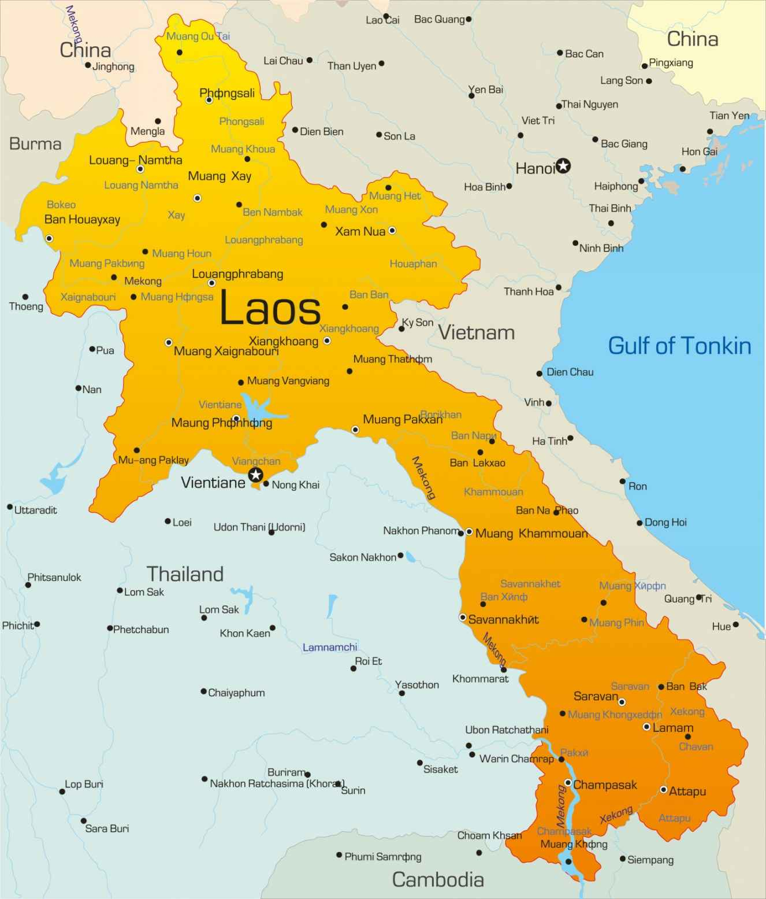

| NONG KHAI: メコンの彼方に | |
| 龍村暁 | |
| moritokudo (2018) | |
ＮＯＮＧ ＫＨＡＩ メコンの彼方に
あらすじ
シンガポールの大手新聞社記者、野津遥輝は大阪に開設された関西支社の初代支社長兼支局長に任命された。着任後のある日、町の古本店でラオス語の美しい本を見つける。一足先に店を出た元ラオス難民のジュリ・アブハイはその本から手紙を抜き取っていた。『兄危篤』。米国に飛び、病床の兄のもとに駆けつけると、ジュリは意外なことを聞かされた。「我々の親はラオスに残った。本当の姓はアブハイではない」。兄はそれだけ言い残してこの世を去った。一方、野津は持ち帰ったラオス語の本のために恐ろしい霊現象に見舞われる。知人に依頼して調べると、本には重大な秘密が隠されていた。運命の糸は、二人を驚くべき結末へと導いていく。
故菅原やすのり氏に捧ぐ
あなたの魂はいつも世界の子供たちとともにある
龍村暁

野津遥輝 （のつ・はるき） 外国新聞社関西支社長兼支局長
ジュリ・アブハイ 元ラオス難民
スリウォン・ダムラット ジュリの別名
アマンダ・ダオルアン ジュリの別名
スアン・アブハイ ジュリの兄
ウティン・アブハイ ジュリの義父
多々納康雄 （たたの・やすお） 野津の大学時代の先輩
大沢 （おおさわ） ようすけ 歌手・大学講師
安田洋一 （やすだ・よういち） フリーカメラマン
野津悦郎 （のつ・えつろう） 遥輝の兄
珠代 （たまよ） ・マハーウォン 宝石商社社長
賀川正和 （かがわ・まさかず） 古本店店主
ユアン・レンサワット ラオス政府公安庁職員
佐藤明美 （さとう・あけみ） 野津のガールフレンド
大阪の梅雨空はインクをこぼしたように鬱陶しかった。
六月十一日、野津遥輝はいつもどおりに一人でランチを食べ、しばらく喫茶店で手持ちの本を読み、適当な時刻に職場に戻るつもりだった。ところが、その日はいつもと違って朝からオフィスに来客がひっきりなしで、女子社員が出すコーヒーを客に付き合って飲み続けたら食欲が失せた。だから、昼休みに外に出てもやることがなかった。
オフィスのある高層ビルの裏道を北に十分ほど歩くと古本店がある。野津は無意識にそこに向かっていた。古ぼけた五階建てビルの一階にあり、狭い店なのに珍しい本がたくさんある。いつ行っても、生きているのか死んでいるのかわからないような、たぶん八十代後半のひげ面の店主が奥のレジ横で本を読んでいる。
店に入るとき「いらっしゃい」とも、何か買って出るときに「ありがとう」とも言われたことがない。店主はただ黙って金を受け取り、黙って釣りを返してくる。そんなそっけなさが、なぜか野津は気に入っていた。自分に構わないでくれる心地よさというのだろうか。こうやって時間が余ったときはいつもその店に行く。他の客は一度来たらもう二度と来るものか、と思うだろう。野津はそう思わない部類の一人だった。いつ行っても客は自分一人。そのたびによくつぶれないものだと思う。
入り口のサッシ戸を開けるとこの日も客はおらず、店主がいつものようにレジ横で本を読んでいた。どうせまた無視だろう。そう思いながら足を踏み入れたとき店主が本からわずかに顔を上げ、鋭い視線を投げかけてきた。一瞬身構えたが、すぐに気が付いた。視線は自分ではなく、すぐ後ろの二人目の客に注がれていた。
女だった。女は野津に続いて店に入ると、一瞬の影を残して本棚の向こうに消えた。高いハイヒールを履いているのだろう。身長百八十センチある野津と同じくらい背が高く、小ぶりな頭は黒髪のボブカットに整えられていた。顔は見ていないが、後ろ姿はモデルのようにスリムで背筋がピンと伸びていた。洗練されたスタイルはどう考えても古本屋に場違いだった。
店には幅広で天井に届きそうな三台の本棚が隙間なく並べられ、背中合わせの三台と計六台で内部を仕切っている。女が何者か確かめようと思えば、端の通路から本棚の向こうに回りこむしかない。興味が湧いたが、追うのはやめた。数カ月後には定年だ。いまさら女を追いかけてどうする。
入り口に近い本棚で珍しい本が目に入った。濃い茶色のハードカバーで分厚く、背表紙に金色の文字でタイトルが書かれ、その周りにツタの絡まったような金色の模様があしらわれていた。ヘビがのたくったような文字のタイトルはまったく読めず、どこの国の本なのかも分らない。本棚の中でひときわ目立っているのに、これまで気づかなかった。目の高さより少し上の棚にあり、取り出そうと右手を伸ばしたとき、右後ろから同じ方向を目指して指が伸びてきた。指先同士が触れ、細い指が慌てて引っ込んだ。横を見るとあの女がいた。濃いスモークグリーンのレイバンの奥で一瞬、はっとした表情を浮かべていたが、すぐに無表情になった。野津が身振りで譲ると、女は会釈さえせずに黙って本を取り出し何ページかめくって棚に戻した。譲ってもらった感謝の言葉は最後までなく、野津の存在など眼中にない態度だった。
黒にグレーのストライプの入った光沢のあるパンツスーツ姿で、スリムな体が一層スリムに見える。上着の内側に純白のブラウスがのぞき、襟の内側の素肌で、複雑なデザインの銀のペンダントが光っていた。本棚を離れ、店主と小声で話す後ろ姿を見ていると、女がふいに振り返った。サングラスを外した顔で。
真冬の湖底を思わせる沈んだ眼差し、どんな場面でも決して気を許すことのない雌豹の目でもあった。四十歳前後だろうか。色白で小顔の目鼻立ちが完璧な黄金比をなし、今でも美しいが、若いころはぞっとするほどの美女だったに違いない。女はサングラスをかけ直し店を出た。
女が消えると、店内の空気が一瞬のうちに緩んだ。野津は自分が息を止めていることに気が付いた。深呼吸して本棚に近づき、女が戻した本を取り出した。ずっしり重い。革ばりのハードカバーで、表紙には金文字のタイトルと紋章があった。美しい装丁に心を奪われながら開いてみたが、何が書いてあるかさっぱりわからない。それでも野津はどうしても自分のものにしたくなった。
レジ横の店主に差し出すと、店主は視線も合わさず受け取った。
「これどこの国の本ですか？」野津が聞くと、店主はやっと口を開け、低くしわがれた声で言った。
「ラオスの古い本だ。中身は知らん」
「とても美しい本ですね。これください」
「売る気はない」
「じゃあ、なんで本棚に並べているんですか」
「見栄えがいいんでね」
「店頭に並べておいて、客の気を引いて、いざ買おうとすると『売る気はない』だって。そんなやり方あるか！」野津は腹立ちまぎれにまくしたてた。
「何を興奮しているんだ。もし売るにしろ相当高額だ。あんたには手が出んと思うが」
「売るならいくらですか？」
「三十万円」
「えっ、そんなに。確かに高額だ」
「貴重な本だからな。そのうえ、あいにく何語かわからんが、何カ所か書き込みがある。それでもいいのか」
「いいですよ。どうせ何が書いてあるかわからないし、そんな書き込みがあるほうが面白い。でも手持ちが三万円しかない」
「じゃ、あきらめるか」
「いや、今、持っている三万円を手付にして残りを今月の給料が出たら払います。そのときまで本は奥に引っ込めておいてくれませんか」
「あんた、本気かい？」店主は幅の狭い老眼鏡の上から野津をのぞきこんだ。
「本気です」
「じゃあ、一万円でいいから手付を置いて、本は持っていけ」
「いいんですか？」
「ああ、信用してやるよ」
「ありがとうございます」
なんで客の俺が頭を下げているんだ、と思いながら一万円を渡し、本の入った袋を受け取ったとたん、目の前が真っ白になった。一瞬おいて今度は爆音が鳴り響いた。ガス爆発が起きたのか。耳が聞こえなくなって目を落とすと、両手がべっとりと赤く染まっていた。それだけではない。全身が血まみれだった。髪の毛を伝って血が流れ落ち、眼球を濡らす。視界が真っ赤になった。草むらにおびただしい数のバラバラ死体が転がり、甘ったるい血の匂いとつんとした煙の臭いが混ざって一帯の空気を汚していた。右半分が吹き飛ばされた顔、鼻から下がなくなった顔、額の亀裂から脳みそが流れ出た顔。見開かれたすべての目が野津を見ていた。それも同じ男の顔で。地獄とはこのことだ。野津は絶叫を上げた。
どれだけ時間が過ぎたのかわからない。暗闇の中で男の声が聞こえた。
「おいっ！ 大丈夫か。おいっ！」
体が揺すぶられている。目を開けるとぼんやりした視界の中で男がのぞきこみ、その上にクリーム色の天井が見えた。男は店主だった。
「気が付いたか。大丈夫か」
何がどうなったのかわからない。意識がもうろうとして何も考えられなかった。目を開けたまま黙っていると、店主は言った。
「救急車を呼ぼうか？」
野津はやっとしゃべれるようになった。
「いや、大丈夫。救急車はいりません」
「起きられるか？」
「なんとか」
店主に支えられながら、野津は上半身を起こした。店の床の上だった。爆発が起こった様子はない。
「突然、気を失うなんてどうしたんだ」
「わからない。初めてのことなんで。爆発があったんじゃないんですか？」野津の体が小刻みに震えていた。
「いいや、何もない。あんたは突然倒れたんだ。病院に行った方がいいぞ」
「そうか。そうかもしれないですね。でも、いったん会社に帰ってからにします」
「わかった」
立ち上がるとき店主は肩を貸してくれた。野津が震える足でやっとのことで立ち上がると、本の入った袋を渡された。
「ほらこれ。落とすなよ。気を付けて帰れ」
野津はふらつきながら店を出て職場のある高層ビルにたどり着いた。エレベーターで二十八階に上がりオフィスのドアを開けると、女子社員が奥の席で立ち上がった。
「どうしたんです？ 一時間の休憩がもう三時間ですよ。スマートフォンを鳴らしても出ないし、何をやっていたんですか？ 今日出稿の原稿はないんですか？」
「ない」野津は首を振った。
シンガポール最大の日刊紙「Ｔｈｅ Ｓｔｒａｉｔｓ Ｎｅｗｓ（ザ・ストレーツ・ニューズ）」の関西支社といえば聞こえはいいが、ビル一室に支社長兼支局長の野津と契約社員の女性の二人しかいない。関西への外国人旅行客の急増を受けて、四月に開設されたばかりだった。野津と女子社員のデスクと椅子、部屋の真ん中に置かれた応接セット、大画面の液晶テレビ一台と中型テレビ三台、パソコンや電話器数台とファクス・コピーの複合機ぐらいしかない。一日一本は本社に原稿を送るのが野津のノルマだったが、守ったことがなかった。一挙に何本も出稿する日もあるから、平均一日一本の勘定になればそれでいいと思っていた。
「原稿はないよ。それに、ここに帰るのが一時間や二時間遅れたからって別にいいじゃないか。その間に大ニュースが飛び込む確率なんて一％もないんだし。それより君、今日はもう帰っていいよ」
「そうはいきません。勤務時間は午後六時までですから」
まだ二十代前半だというのに、いまどき珍しく真面目な女子社員である。
「じゃ、君は普段どおりの仕事に戻ってくれ。俺は適当にするから」
「はいはい、適当にね。いつでも適当な感じに見えますけど。その中途半端なごま塩の無精ひげと銀髪も」
女子社員は生真面目なうえに生意気な口もきく。野津が銀縁眼鏡の奥でにらむのをかわし、自分のデスクでパソコンの打ち込みを始めた。経理事務かなんかだろう。野津は事務作業についてはまるきりお任せだった。接客用のソファに深々と腰を下ろし、足を組んで一日中付けっぱなしのＣＮＮニュースを眺めた。
どうしたというんだろう。野津は自分の身に起こったことが理解できなかった。そのうえ悲惨な光景があまりにリアルでショックを受けていた。死体の顔に見覚えがある。遠い過去の記憶だった。それが今よみがえるとは。ラオス語の本を袋から取り出してしばらく眺めた後、引き出しにしまった。
夕刻前、女は関西空港に姿を現し、サンフランシスコ行きの直行便に乗った。シートベルトを締め、サングラスを外して上着の内ポケットから三つ折りの便箋を取り出した。古本屋で野津に悟られないようラオス語の本から抜き取った便箋だった。
『ジュリさま 緊急のお知らせです...』
広げてじっくり読み内ポケットに戻すと、女は座席を倒して目を閉じた。
一九八〇年二月、東京・下町のアパートに住んでいた野津の部屋に同じアパートに住む年上の大学生、多々納康雄が訪れた。ノックもろくろくせず、入り口のドアを開けた多々納はいきなり切り出した。
「おい、一緒にタイの難民キャンプに行こう」
アパートは木造モルタル二階建てで、狭い板間の廊下を挟んで向かい合わせに部屋がある。下宿形式の建物だった。入り口の引き戸を開けるといきなり畳の床があり、その横には小さなガスコンロ付きの流し台、奥には押入れがひとつあるだけ。男女兼用の供用トイレが各階にひとつずつあるが、風呂はなく、歩いて数分の銭湯に行くしかない。住民は一階玄関でスリッパに履き替え、脱いだ靴を下駄箱に収めて廊下を静かに歩かねばならなかった。二階にある野津の部屋と廊下の反対側の多々納の部屋は歩いてわずか五歩の距離である。
七五年四月にベトナム戦争が終結し、ベトナム、カンボジア、ラオスが社会主義体制に移行する前後、政府の弾圧を恐れた人々が国外に続々と脱出し、インドシナ難民となっていた。タイに逃げた難民の避難地、難民キャンプに行こうというのだ。
「なんですか、そんな急に。立ってないで中に入って下さいよ」
野津が促すと、多々納は廊下でスリッパを脱いで中に入り、入り口を閉めて四畳半の上にあぐらをかいた。「まじめな話だ」真剣な口調だった。
同郷の多々納は二つ年上で、某有名私立大学の法学部に在籍しながら何年も国公立大の医学部を受験していた。大学三回生になっていた野津はばくぜんとマスコミを目指しながらも特別なことはなにもせず、アルバイト、サークル活動、適当な授業出席というのんべんだらりとした学生生活を送っていた。反対に多々納は共通一次試験（現在の大学入試センター試験）を終えて医科大学の二次試験を控えた大事な時期を迎えていた。野津は勉強机の椅子から降りて畳に座った。
「しかし、どうやって難民キャンプに入るんですか。何のあてもないんですよ」
「毎日、難民の悲惨な様子が報道されているだろう。世界各国のボランティアが難民キャンプで救援活動にあたっている。俺たちだって何とかすれば入れるはずだ」
「もし入れたとしても先輩は何かできるんですか？ 僕はなんにもできません。ボーイスカウトの活動をしたことがあるんで、マッチと薪で火を焚いて飯ごう炊さんぐらいはできますが、それだけですよ。手旗信号やロープの結索は役に立たないだろうし」
「いいんだよ。いけば何かやることがある。難民たちはいろんな人間の助けを必要としているんだ」
「そうですかねえ」
「そうだよ。間違いない。それでお前、行く金あるか？」
「ありません。親の仕送りはぎりぎり生活できるぐらいしかないし。使わずに銀行に預けたままにしてある奨学金が二十万円ほどあるんですが、親に黙って使うわけにいかないし」
「それそれ、それを使うんだよ。こんないいことに使って誰が文句を言う？ 難民キャンプを訪問するなんて体験は二度とない。帰国してから親に頭を下げればきっと許してくれる」
「そうかなあ。じゃ、先輩は金の工面をどうするんですか？」
「俺は家庭教師をして貯めた金がいくらかある。親に頼んで少しよけいに仕送りしてもらえば、二十万円にはなる」
「しかし、パスポートを持っていないし、だいたい海外に行ったことが一度もないんですよ。タイに行って、さらに難民キャンプに入るなんて、どうすればいいのか皆目見当もつきません」
「俺だって一度も海外に行ったことがない。どうすればいいのか、一つひとつクリアしていけばいい。行こう」
「本気ですか」
「本気だ」
そんなやりとりの末、とにかく行くことになった。
池袋にあるパスポートセンターに電話して、どうやったらパスポートを取得できるかを教えてもらうことから始まった。さらに、当時は短期の観光でタイに入国するにもビザの取得が必要で、申請には十分な滞在費用が銀行口座にあることを証明する残高証明書を提出しなければならなかった。残高証明は、誰かから金を借りるなりして一時的に口座の残高を上げてから取れば高額の証明書になる。そんなインチキを多々納がどこかから聞いてきた。取得できたら引き出して返せば良い。さっそく多々納から二十万円を借りて自分の口座に入金し、四十万円の証明書を取った。そしてすぐに全額を引き出して多々納の口座に入れ、やはり四十万円の証明書を取った。親に適当な理由をつけて戸籍謄本を送ってもらい、パスポートとビザはすんなり取れた。
続いて多々納はどんな伝手かわからないが、新宿の旅行会社でタイ・バンコク往復の中東エアラインのチケットが七万数千円で買えると聞いてきた。格安航空会社（ＬＣＣ）がまだ誕生していない時代、その値段は破格だった。贅沢しなければ、残金で五日間ぐらいは滞在できる。Ａ型肝炎の予防注射を終え、マラリア予防の錠剤をもらって出発に備えた。出発は三月四日の夜、成田空港からだった。
前夜、多々納の部屋で勝手な計画を練った。多々納が言う。
「この間、新聞記事で読んだが、日本の男性歌手がカンボジア難民のキャンプを訪問して歌を披露するらしい。歌で難民を元気づけようというわけだ。要するにいろんな形のボランティアがあるのさ。そうだお前、ボーイスカウトのキャンプファイアでやる『チェッチェッコリ』できるだろ。それを難民たちに指導してみんなでやれば楽しいかもしれない」
「そんなことで喜んでくれるんですかねえ？」野津は首をかしげた。
『チェッチェッコリ』というのはガーナの民謡で、世界中のボーイスカウトやガールスカウトがキャンプファイアのときに輪になって楽しむレクリエーションだ。輪の中心でリーダーがワンフレーズずつ歌って踊り、それを他の参加者全員で真似る。踊りは頭、肩、腰、膝、足首とワンフレーズごと順に両手を添えて腰を左右に振る簡単なものだが、リーダーがだんだんスピードを上げていくと最後にはついていけなくなる。踊る姿がどんどんめちゃくちゃになっていくさまが面白くて笑いがこぼれるという単純な趣向だ。しかし、故郷を離れ深刻な状況にいる難民たちがそんなことに付き合ってくれるとは思えなかった。
「先輩、面白いですが、相手にしてもらえないと思います」
「それがうけなかったら、『サラスポンダ』や『アチャパチャノチャ』『クイカイマニマニ』もあるだろう。ボーイスカウト経験者ならレパートリー豊富じゃないのか」
「全部できますけど、どれもこれもだめですよ。喜んでもらう自信がありません。そんなことより海外に行くのに何を持っていけばいいか、それさえよくわからない」
「俺だってよくわからん。なんせ、海外に行くのは初めてだからな。こっちは三月でまだ寒いが、タイは暑いだろう。ジーパンとＴシャツで過ごせばなんとかなるんじゃないか」
まだポケットベルさえ普及する前だったから、今のようにインターネットで調べられるわけではなく、旅行会社でアドバイスを受けるしか準備の手立てはない。海外旅行用のスーツケースを借りるような金の余裕もなく、普段、通学で使っているスポーツバッグに替えのＴシャツ、ブリーフ数枚、ジーパン、靴下、タオル、洗面用具などを詰め込むことにした。
ノートパソコンやスマートフォンのような電子機器は一切ないし、携帯電話、カメラもない。実家に帰省するときとバッグの中身はなんら変わりなかった。ただひとつ異なっていたのは、パスポートやトラベラーズチェックを入れる専用の腰巻をジーパンの下に着用することだった。盗難防止に必須のアイテムだと旅行会社で教わっていた。
そのころ、タイ旅行に行った人たちが帰国後にコレラを発症するケースが相次いでいた。発症したら隔離され、住居や周辺は徹底的に消毒される。そのうえ、全国ニュースになるのは避けられない。親やアパートの大家に難民キャンプ行きのことを伝えたらストップがかかりそうだった。出発は誰にも内緒だった。
二年前に開港したばかりの成田空港は大変な広さと華やかさで、地方出身の二人は息を飲んだ。海外エアラインの機長や金髪のスチュワーデス（現在のキャビンアテンダント）が華麗な制服で行き来していることだけでも夢のようだった。二人が乗る便はフィリピンのマニラ空港（現ニノイ・アキノ空港）経由でバンコクに行くという。搭乗ゲートを通って階段を下り、バスに乗ると駐機場でジェット機が待っていた。オレンジ色のライトに照らされたタラップを見上げたとき、野津の気分は最高潮に達した。俺もついに海外に行くのだ。新聞社の試験を受けたのも海外特派員になりたかったからだ。どんな仕事かほとんど知らないが、もしなれたら名作映画「ローマの休日」のようなロマンスと優雅な生活が待っているとふざけた期待を抱いていた。
タラップを上がりながら野津の妄想はどんどん膨らんでいった。機内では美人スチュワーデスがにこやかに接客してくれるに違いない。出発準備の間に、野津は多々納から「国際線のスチュワーデスと機内で仲良くなったら、到着後に現地で一緒に食事できることもあるらしい。そのあとは成り行きしだい」などと不謹慎なデマを聞かされていた。真に受けた野津は『もしそうなったら英語でうまく話せるだろうか。いや、母国語しか通じなかったらどうしよう』などとわけの分からない心配をしていた。
タラップを上り切って野津は愕然とした。飛行機の入り口で出迎えていたのは肥満体の中年スチュワーデスだった。制服を着ていなければ、市場に野菜を買いに来た近所のおばさんにしか見えない。野津は一気に熱が冷めた。逆に隣にいた若い男性パーサーは制服とエアライン帽のよく似合う見栄えのする男前だった。さすがエアラインの男性スタッフと感心した。パーサーがマイクを取って日本語で案内した。
「どうぞ、奥から詰めてください」
「はあ？ 指定席じゃないの」
野津が言うと、多々納も首をかしげた。
「どうなっているんだ。この航空会社は自由席だってことか」
「そうみたいですよ。みんなおとなしく奥から順番に座っています」
「信じられんな。でも、そういう会社なんだろう」
「しかたないですね。このあたりで座りましょうか」
野津と多々納は先頭を向いて左側の席に陣取った。二席あり野津が窓側、多々納は通路側の方が良いと言って座った。乗客が座り終えると、さっきの太ったスチュワーデスがシートベルトを点検しに回った。にこりともせず身振りでベルトの状態を見せろと指図してくる。スチュワーデスが遠ざかると野津はこぼした。
「なんというスチュワーデスですかね。もう少し愛想の良いやつはいないんだろうか」
「外国人は基本、無愛想らしいよ。日本人みたいに愛想良くしたら客になめられると思っているらしい」
「なめられたらどうなるというんでしょう。我々、なんにもしないでしょうが」
「海外は違う。なめられたら客からどんどんいろんな要求をされるということだ。特に中東アジアみたいな開発途上国ではそうなんじゃないか」
「なるほどねえ」
そう言って納得した野津だったが、離陸後、シートベルト着用のランプが消えて客席に回ってきた男性パーサーに驚いた。多々納の説明がまったくの嘘と思えるほど愛想が良いのだ。通路を歩きながら乗客一人ひとりに笑顔を振りまく。流ちょうな日本語で「気分はいかがですか？」「ようこそ○○航空へ」などときさくに話しかけている。見ていると、若い女性に対する態度と男性や年配女性に対する態度がまるきり違う。満面の笑顔と単なる愛想笑いの違いが手に取るように分かるのだ。なんだ、こっちはたちの悪いプレイボーイじゃないか。野津はパーサーにもがっくりきた。
夕食の配膳が始まり、またあの太ったスチュワーデスが回ってきた。再びダンマリの作業だ。日本語が話せないのか、慣れない日本語を話すのが面倒くさいのか。ただ、無口な性格でないことは確実だった。パーサーとだけはぺちゃくちゃと（たぶん母国語で）しゃべりまくっていたからだ。
食事を終えていい気分でうつらうつらしていると、多々納から肘で起こされた。
「なんですか？」
「見ろよ」
野津が前を向くと、二歳にもならない男の子が多々納の前席の背もたれから顔を出していた。こっちを見てにこにこ微笑みかけてくる。野津と違って多々納は子供好きのようで、手を振って笑い返している。男の子は背もたれの後ろに姿を消したかと思うと、またぴょんと顔を出した。その仕草が可愛くて多々納は笑顔で相手していた。男の子は嬉しくて何度も何度も繰り返す。とうとう男の子は多々納のもとに歩いて遊びにきてしまった。父親が慌てて席を離れ、連れ戻しにきた。男の子を抱いてすまなさそうに言う。
「ごめんね。ゆっくり休めないでしょ。子供というのは元気なときはどこまでも元気ではしゃぐし、泣くときは思い切り泣くしで」
「いやいや、いいですよ。全然、迷惑じゃないです」
多々納は本当にそう思っているようだった。それをきっかけに男性と会話になった。
「ところで君たちタイに行くの？」
「ええ」多々納がうなずいた。
「へえ、僕たちもだよ。妻とこの子の三人で。君たちは観光？」
「いや、違うんです」
「じゃ、何？」
「えーと」さすがに多々納もどうなるかわからないことを話しづらそうだったが、思い切った調子で言った。
「実は難民キャンプに行ってみようと思っているんです」
「へえ、そう。どこの？」
男性に聞かれて多々納は答えに窮した顔になったが、そのまま言った。
「カンボジア難民のキャンプに行くつもりです」
「そうなの。僕と一緒だね。ところで国連で許可を取ってる？」
「なんですか、それ」野津が横から口をはさんだ。
「あれ、知らなかったの？ 最近、いろんな人間が難民キャンプに入り込んでよくないことも起こり出しているらしく、国連難民高等弁務官事務所に許可された人間しか入れなくなっているんだよ」
「えっ！」野津も多々納もショックのあまり絶句してしまった。国連は知っているが、ナンミンコウトウベンムカンジムショなど知らない。ベンムカンの漢字さえ思い浮かばない。飛行機は太平洋上空一万数千メートルを飛行中だ。当たり前だが、いまさら引き返すわけにはいかない。かと言って、タイに着いても難民キャンプに入れなければ何をしに行ったかわからない。
「そうだなあ、なんとかして入れる方法があるといいんだけど。僕はカンボジア難民のキャンプで歌を歌って元気づけようと思っているんだ。カセットテープでお囃子を流しながらみんなで盆踊りをする時間もある。君たちも一緒にきて壇上で踊りの手本を見せてくれたら助かるんだけど。しかし、すぐには国連の許可が出ないしなあ」
二人は顔を見合わせた。そして、多々納がうわずった声で尋ねた。
「も、もしかして大沢ようすけさんですか」。
「うん、そう。僕のこと知っているの？」
「ええ、知っています。新聞で読みました」
「そうか、ありがたいね。この間、ヒットした『大空の歌』なんかを披露しようと思っている」
「いいですね。いい歌ですからね」多々納は真剣にうなずいていた。
大沢は大学の建築学科で教べんをとりながらプロ歌手としての活動も続けている異色の存在だった。野津がこれから難民の人々はどうなっていくのか質問すると、大沢は答えた。
「先進国はみな受け入れを表明している。日本はまだ難民条約に加入していないが、早急に加入して受け入れ態勢を整えざるを得ないだろうね」
大沢は大学講師だけあって難民問題や国際情勢にも詳しく、野津と多々納は授業を受けているような気分になった。その間に男の子は母親の腕の中でぐっすりと眠ってしまい。機内は静かな休息モードに入った。ところが、すぐにとんでもない事態となった。
「おお、みんなもっと飲んで騒ごうや！」
後ろの方で日本人の男の声がして、乗客が一斉に振り返った。酔っぱらった中年男が通路に座り込んで酒を飲んでいた。機内のアルコールサービスはなく、持ち込んだ酒を相当飲んでいるらしい。周りの乗客に臭い息を吹きかけながら、しきりに一緒に飲もうと誘っている。禿げかけた七三分けが乱れ、黒縁眼鏡のレンズが白く濁っていた。パーサーと二人のスチュワーデスが慌てて駆け寄っていった。
「コマリマス」
太ったスチュワーデスが乗客の前で初めて口をきいた。意外に細く可愛らしい声だ。男性パーサーも流ちょうな日本語で注意した。
「すいません、ここでお酒を飲まれたら困ります。自分の席にお戻り下さい」
ネクタイのほどけたスーツ姿の男の両腕を抱え、立ち上がらせようとすると、男は振りほどいて大声で叫んだ。
「うるさい！ ここで飲んで何が悪い！」
「そうはいきません。席にお戻り下さい」
パーサーは辛抱強く対応している。このとき初めて見た若い美人スチュワーデスも丁寧に片膝をついて日本語で説得にあたった。
「お願いいたします。他のお客様のご迷惑になります。申し訳ありませんが、席にお戻り下さい」
「あんた誰だ。初めて見た顔だな」男は若いスチュワーデスの顔をのぞき込み、まじまじと見た。「へえー、そういうことか。あんたは、エコノミークラスの客なんか相手にしないビジネスクラスかファーストクラスの担当ってわけか」
「いいえ、違います。ただ、今日の担当がビジネスクラスのお客さまだというだけです」
「そうかねえ。本当かねえ」男は酔った勢いでしつこく絡んでいく。「ねえちゃん、あんたも座れよ。一緒に飲もうじゃないか」
男が若いスチュワーデスの肩を抱こうと手を伸ばしたとき、中年のスチュワーデスが素早く動いた。男の腕をつかんだかと思うと一瞬のうちにねじ伏せた。
「イイカゲンニ、シテクダサイ！」
「ううっ、すまん、すまん。わかった、わかった」男は床に横顔を押し付けられながら苦しそうにもがき、降参した。「わかった。席に戻る。だから、離してくれ」
スチュワーデスは男の懇願を受けてようやく腕を離し、パーサーと一緒に席に連れて行った。男は座ってからもしばらくぶつぶつ文句を言っていたが、いつのまにか静かになった。酔いが回って眠ってしまったのだろう。大沢が言った。
「日本の男が海外で素行が悪いのは有名だよ。タイやフィリピンに女を買いに行くやつらもたくさんいる。あの男もそんな人間の一人だろう。到着前から羽目を外してしまったんだ。だめだ、あんなんじゃ。日本人の評判を落とすだけだ」
「どうしようもないですね」多々納が表情を曇らせた。
飛行機はマニラ空港に到着し燃料を補給している間、乗客は外に出られないトランジットでさんざん待たされた。野津はフィリピンに行った証拠として、みやげ物コーナーで貝殻を加工して作った五枚組のコースターを買った。トイレに行くと、フィリピン人らしいやせた鼻ひげの男が洗面台のところで待ち受けていた。用を足して手を洗っている間、頼みもしないのに布で肩や背中を払ってくれた。ふけやほこりを落としてくれたのだろう。
「エンジョイ・トリップ・サー、グッド・ラック」払い終えると男が声をかけてきた。
「え？ サー？ ああ、サンキュー」
ハンカチで手をふきながらトイレを出ると、笑顔だった男は急に不機嫌な顔になった。なんだ？ 野津は待合室に戻って多々納にトイレの男のことを聞いた。多々納は笑った。
「お前、チップを渡さないとだめだよ。ああいう人はそれを目当てにして待っているんだ。さっき俺は五十円渡したよ」
「へえ、そういうことなんですか」野津にとっては何もかもが珍しかった。
トランジットの間、二人の話題はバンコクに着いてからどうしようかとそればかりだった。といって、どうすることもできない。野津の頭の中で焦る気持と開き直りの気持ちが入り乱れた。
バンコク空港（現ドンムアン空港）に到着したのは現地時間で五日の未明だった。日本との時差はマイナス二時間だから時差ボケもない。大沢家族と別れ、宿泊案内所で一人旅だという日本人の男と一緒になり三人でバンコク中心部の安い宿に泊まることになった。一室一泊いくらというホテルだから二人より三人の方が安上がりだ。空港の玄関を出ると、目つきの悪いタクシー運転手が聞き取りにくい英語で声をかけてきた。バンコクのダウンタウンまで五百バーツだという。当時、為替レートは一バーツ十円ぐらいだったから約五千円の見当はついたが、現地の物価レベルが分からないから何でも値切ることにした。
野津が適当な英語で「ノー、二百」と言うと、運転手も「ノー」と言う。野津が「ほんじゃ、グッバイ」と手を振って、三人で別の運転手を探しに行こうとすると、追いかけてきた。「三五十」と言う。再度、野津が「二百五十」と言うと、まいったというジェスチャーで「三百。ギブ・アップ」とペコペコ頭を下げてきた。「オーケー」三人は百バーツずつ出し合って先払いし、空港を出発した。
真夜中の道路の両サイドにはほとんど建物がなく、ときどきタイ語か英語の看板が立っていた。冷房のない車だったから、窓を開け放しにしておくと暑苦しい空気がどっと流れ込んできた。三十分ほどで到着したホテルは、だだっ広い部屋にベッド三つと化粧台、クローゼットがひとつずつあるだけ。テレビもない殺風景な部屋だった。
「先輩、恐ろしくシンプルですね」
「安いからこんなものだ。バスルームとトイレがあるから何の問題もない。次の宿泊先はまた後で考えようや」
「とりあえずオーケーですか。そうしときましょう」
一緒に泊まることになった男はこうした宿になれっこのようで、さっさとシャワーを浴びてほとんど会話もせずに寝てしまった。
目が覚めると、もう午前九時近くになっていた。ホテルをチェックアウトし、一人旅の男と別れて野津と多々納はバンコクの街を徘徊した。広い道に人や車や三輪車が入り乱れて通行している。さすが東南アジアと思える日差しの強さに目が痛んだ。スキンヘッドの若い僧侶がオレンジ色の布をまといながら、スヌーピーをプリントしたバッグを肩にかけて歩いていた。そのアンバランスな様子が面白かった。
公園の横で食堂を見つけ、二人で入った。メニューを見てもどんな料理かまったく分からず、二人とも適当に一品ずつ注文すると、料理はどちらもちっぽけな皿で出てきた。なんだこれだけかと思ったが、それがとんでもなく辛い。アルミの器にぎゅうぎゅう詰めで出てきた固いごはんがいくらでも食べられる。野津はそれまでタイ料理を見たこともなかったが、これほど辛い料理がこの世にあるのかと思うほど辛かった。
食事中、多々納が提案した。「だいたいどこの国にもあるが、タイにも日本人会があるはずだ。探して行ってみよう」
「どうやって探すんですか」
「タクシーを拾って連れて行ってもらうんだよ」
「タイ語で『日本人会』ってどう言うだろう」
「わからん。英語では『ジャパニーズクラブ』かなんかじゃないか。英語の通じる運転手を探せばいいんだよ。タイにはいくらでもいるだろう」
多々納の言うとおり、英語の分かる運転手はたいして苦労もせずに見つかった。十五分ほど走ると、幹線道路と脇道のぶつかる角に一軒家の『タイ国日本人会』があった。入ると、事務職員だという眼鏡の上品な中年女性が奥から出てきた。多々納が難民キャンプでボランティアをしに来たと伝えたら、女性職員はあきれたという表情になった。
「あなたたち、何のあてもなく日本から来たの？」
「ええ、実は。すいません」多々納が頭を下げた。
「まあ、こっちに来なさい」
女性職員は二人を事務室の隣の食堂に案内し、浅黒い肌のウエートレスにお茶を用意するよう命じた。
「別に説教するわけじゃないから、そんなに緊張しなくていいわよ」
女性職員はポットで出てきた冷たい紅茶をガラスコップに注いだ。
「どうぞ、飲んで。私は有本。あなたたちは？」
多々納が二人分の自己紹介をして一口飲むと、有本が質問してきた。
「ところであなたたちこっちに誰か知り合いは？ 日本人でもタイ人でも」
「いや、いません」多々納は首を横に振った。
野津には一人だけいた。三つ年上の兄、悦郎の友達だった。東京の女子短大を出てタイで宝石商の仕事をしているうちに政府要人の息子に見初められ、そのままタイに嫁いでいた。兄の話では「超能力者」で、一世を風靡した超能力者、ユリ・ゲラーのテレビ番組を見て真似をしたら自分もスプーン曲げができるようになり、さらには牛乳瓶に入れた針金を手で触れることなく瓶の中で曲げて見せたという。
「それどころじゃない」と兄は言った。もっとすごいものを見たという。あるとき、女性は自宅の居間で両手に一本ずつまっすぐな針金を持ち、「蝶になれ」と叫んで後ろに投げた。針金は空中で絡まってきれいな蝶の形になって落ちてきたという。そのとき、野津兄弟の母も一緒にいて目撃し、何年経っても「あれは本物だ」と言っていた。当然、近所の評判になりテレビ局の取材申し込みが殺到したが、女性の両親がすべて断った。
野津兄弟の父親と女性の父親は戦時中、日本国内の軍の基地で同じ宿舎にいた。戦地に駆り出されないまま終戦を迎え、地方と東京に、住む場所が離れ離れになっても連絡を取り合っていた。東京には野津家の親類がおらず、野津の兄が先に東京の大学に進学してからは兄を家族のように可愛がっていた。タイ渡航の四年前、野津が大学入学前に兄と二人でその家族の家に遊びに行ったとき、女性がいた。「超能力者」だと先に聞いていたからかもしれないが、年齢と不釣合いなほど落ち着いた不思議な雰囲気に思えた。リビングに家族が集まって、お茶を飲みながらにぎやかに会話を交わす間も、女性は黙って笑みを浮かべているだけだった。最後まで声を聞かずじまいで、野津が会ったのはそれが最初で最後だった。
女性の東京の実家にバンコクから国際電話で問い合わせれば、電話番号が分かるかもしれないが、内緒でタイに来ていることが田舎の親に伝わってしまう。国際電話の料金を払うほど金に余裕もない。
「タイの有力者の家に嫁いだ知り合いの女性がいますが、連絡先が分からないし、旧姓しか知りません」
「そう、ちなみになんという方？」
野津が女性の旧姓と下の名前を告げると、有本は会員名簿をひっぱり出して調べてくれた。
「だめね。下の名前が一致する人もいない。入会されてないわ」
兄の友人がタイの有力者家族の妻だとすれば、難民キャンプに入る何らかの糸口が見つかるかもしれない。だが、そのルートは絶望的だった。
「誰かあてはありませんか？」野津が聞くと有本は首を横に振った。
「ごめんなさい、ないわ。残念だけど入るのは無理だと思う。それよりあなたたち、せっかくタイに来たんだからあちこち観光して帰ったら。観光スポットならうちの会報にも毎回見どころを紹介しているから、本棚からいろいろ引っ張り出して読んでみるといいわ」
そう言って女性は別の来客の応対のために席を立った。食堂に残された野津と多々納は紅茶を飲みながら話し合った。
「先輩、どうにもなりませんね。どうしましょう」
「そうだな。しかし、俺はあきらめんぞ」
そんな二人にウエートレスらがチラチラ視線を送ってきた。何かひそひそ話している。野津が気付いて言った。
「先輩、あの娘ら何見ているんでしょうか」
「知らないよ。日本人が珍しいんじゃないか」
「ここは日本人会ですよ。珍しいはずがないじゃないですか」
「そりゃ、そうだ。しかし、そんなことどうだっていい。これを見ろ」
日本人会の会報を広げていた多々納が指差した。「この人に掛け合ったら道が開けるかもしれんぞ」
多々納が示したのはバンコクにあるアジア工科大学院（ＡＩＴ）の教授 、 梅原 俊之 の寄稿だった。難民問題と国際協力について専門的な視野で論文を書いていた。
「この先生に会ってみよう。なんとかなるかもしれん」
「そうですね。行ってみましょう」
二人は大通りでタクシーを拾いバンコク北部のＡＩＴに飛ばした。途中、バンコク空港の近くを通りすぎながらさらに北へ。約一時間でＡＩＴに着いた。そこは広大な敷地に緑がいっぱいで、緑をかいくぐって研究棟のビルが建っているような風景だった。南国の楽園のようなキャンパスを歩いていると、野津は別に難民キャンプに入れなくても十分、タイに来たかいがあったように思えてきた。あちらこちら歩き回って事務所を探し当て、職員に梅原のことを尋ねた。職員は梅原の研究室に内線をかけてくれ、タイミングよく在室だった梅原本人と電話がつながった。職員が「日本からきた大学生が会いたいと言っている」と説明し、面会の承諾を取ってくれた。
梅原の研究室は少し離れた研究棟三階にあった。研究室のドアを開けると、梅原はにこやかに迎えてくれた。頭髪が薄くなり五十代後半に見える梅原はいかにも頭が切れそうな人物だった。自分のデスクの横にパイプ椅子を用意し、二人を座らせた。
目の前の大きなガラス窓からキャンパスが見える。明るい太陽のもとでインド系と思われる学生たちが談笑しながら通路を歩いていた。母国から派遣されたエリートだろう。野津は同じタイの国に、エリートとして何の不自由もなく学生生活を送る人たちと本来エリートなのに難民になってしまった人たちが同時にいることが、不思議に思えてきた。国の政治体制の変化で人生が百八十度変わってしまうなどということがあっていいのだろうか。怒りがこみ上げ、同時に悲しい気分にもなった。
多々納が二人の自己紹介をして、梅原のことを日本人会の会報で知ったと話した。すると梅原が聞いてきた。
「君たち、難民キャンプに入ってどんなボランティアをするつもりだね」
『チェッチェッコリ』のレクリエーションで励ますともいえず、野津が答えに窮していると、多々納が答えた。
「分かりません。行ってみないと」
とたんに梅原の目が厳しくなった。
「自分の財産を母国に残したまま、着の身着のままで逃げてきた人々ばかりなんだよ。けがをしたり、家族を失ったりした人も大勢いて、肉体的にも精神的にもダメージを受けている。君たちのように何をすればいいかよくわからないままボランティアに来ても、足手まといになるだけだ。すでに、救護のプロ集団である国際赤十字の人々が世界中から集まっている。そんな人たちに任せたほうがいいんだよ」
「でも、そんなプロの人々の補助スタッフが必要じゃないでしょうか。僕らは雑用でも力仕事でもなんでもやるつもりです」多々納は真剣な表情だった。
「熱意だけは十分だね」
多々納は自分のことを話した。「ええ、医学の道を目指しているんです。帰国したら国公立の二次試験が待っているので」
「そうか、この難民キャンプの体験が面接試験や論文に役立つということだな」
「ええ、そうです。試験だけでなく、これからの医者人生を送る上でも」
「なるほど。で、君は？」梅原は野津の方を向いた。
野津はどきりとした。自分には多々納ほどの熱意はなかったからだ。しかし、言った。
「僕はジャーナリストを目指しているんです。それも特派員になりたくて。新聞社の採用試験を受けるつもりです」
「ふうん、君も難民キャンプの体験が今後の人生の糧になると思っているわけだ。よくわかった。何か僕にできることがあったら、日本人会の事務局に連絡しておくから。しかし、基本的にどの難民のキャンプも国連の許可がないと入れないというのは事実だよ。国際的に注目を浴びているからね。そこらあたりの事情は理解してくれるね」
「理解できます。ありがとうございます」
二人は深々と頭を下げて研究室を出た。階段を下りながら野津が言った。
「先輩、教授の話からタイ国境にある難民キャンプはいろいろあるということが分りましたね」
「お前、そんなことも知らなかったのか。陸続きのカンボジアからタイへはいろんなルートで行ける。あちらこちらに難民のキャンプができていてもおかしくはない」
「どこでもいいから入ってみたいですね」
「お前もだんだんその気になってきたんだな」
「ええ、難しそうだから余計に。ここまできたら絶対そうしたいという気になってきました」
野津はＡＩＴを訪れてなぜか気持ちが切り替わっていた。とはいっても二人にはなんの手立てもなく、屋台のラーメン屋で夕飯を済ませたあと、その日の宿を探し、夜の街に出かけることにした。ホテルのフロントでタイの民族舞踊が見られるところはないかと尋ねると、超高級ホテルのザ・オリエンタル・バンコク（現マンダリン・オリエンタル・バンコク）かミドルクラスのインドラ・リージェントはどうかと教えてくれた。貧乏旅行の二人には当然、ミドルクラスである。バンコク中央駅（フアランポーン駅）から北東方向へ車で二十分ほどの位置にあるインドラ・リージェントへはその日の安ホテルからは歩いて行ける距離だった。
二人はインドラ・リージェントに着くと四階に上がり、屋外プールの脇にあるタイの伝統建築風のレストランに入った。こじんまりした屋内の中央広間が舞踊のステージで、奥に楽器演奏者の台が作られている。広間をコの字型に囲むようにして一段高い掘りごたつ式の席があり、二人はどこでも好きなところに座るようにと案内された。二人で壁際の席に陣取ると、白人の三人家族が後からきて同じテーブルで見ることになった。
白人家族は最初、にっこりと笑顔で会釈をして座ったが、あとは野津らを無視していた。特に中学生ぐらいの丸々と太った一人娘が嫌なやつで、そばかすだらけの顔で野津らを見ては、ばかにしたような笑いを浮かべていた。そのうち、「料理が口に合わない」「冷房がきつすぎる」だことの、はては「隣のアジア人がうっとうしい」などと親に文句を言い出した。どうせ野津らには英語が分からないと思っていたのだろう。娘は言いたい放題だった。いいかげん腹が立った野津が、娘がこっちを向いたとき眉間に思い切りしわを寄せてにらみつけると、娘は慌てて口を閉じた。それきりテーブルは静かになり、ゆっくりと舞踊を見ることができた。
ホテルを出てぶらぶら歩いていると、『マッサージ・パーラー』のギラギラした看板に出くわした。その前で男がさかんに呼び込みをしている。二人を見かけて近づき「セクシャルガール、ドウデスカ」「プリティガール、バッカダヨ」とまとわりついてきた。それを多々納が「ノー・サンキュー」の連発で振り切った。
「きっとこれが、売春の店だ。大沢さんが言っていたように、日本人のおやじが女を買いに行くんだろう」
野津は首をかしげた。「マッサージって書いてありますが？」
「普通のマッサージだったら、こんな夜中にギラギラした看板で客引きするか？ 考えてみれば分かるだろう」
「確かにそうですね。普通じゃない。マッサージの後はいよいよ本番ってことですね」
「最初からマッサージなんかしないだろうよ。お前その顔、もしかして行ってみたいんじゃないか？」
「そりゃ、男だから興味はあります。でも、行かないですよ。さすがに俺も怖い。そんな遊びができるほど金はないし」
二人が安ホテルに戻り部屋に入ると、どこかで見ていたかのようにすかさずドアをノックする音がした。野津が開けたら、やせて背の低いタイ人の男が立っていた。
「シャチョウ、イイオンナ、イッパイオルデ。オヤスクシトキマッセ。ドウデスカ」
写真のアルバムのようなものを広げ片言の日本語、それも変な関西弁を使って持ち掛けてきた。シャチョウってか。野津の口から思わずため息が出た。
「いらないよ」
追い払うように手の甲を動かすと、予想外の態度だったのだろう、男は驚いたような目をして立ち去った。
翌朝、二人はホテルをチェックアウトして再び日本人会を訪れた。教授から朗報が入っているかもしれず、期待に胸を膨らませていた。だが、有本は残念そうに首を横に振った。
「連絡はあったわ。でも、やはり入るのは難しいって」
「そうですか。もうどうにもなりませんね」
野津がいかにもがっくりしたような表情になると、有本は笑みを浮かべた。
「あそこに青年がいるでしょう。一人で東南アジアを放浪している人よ。許可なしで入れるキャンプがあるってさっき言っていたわよ。聞いてごらんなさい」
「えっ！ 本当ですか」野津も多々納もその言葉に驚いて青年を見た。
青年は長髪を束ねて後ろでくくり、もじゃもじゃのひげ面だった。ボロボロのジーパン、黄ばんだＴシャツ姿で広い机の端っこにうつむいた格好で座っていた。持ち物はリュックひとつしかなく、それだけで旅をしているらしい。
「あの」多々納が近寄って話しかけた。
青年は三十代から四十代のどれかだろう。全体に汚れていて年齢がつかめなかった。うつむいた頭をだるそうに持ち上げてこっちを見た。
「何？」
「あの、女性職員さんに聞いたんですが、僕たちが入れるキャンプがあるって本当ですか？」
「ああ、ある」青年は疲れているのか、だるそうにかすれた声で答えた。
「それ、どこです？」多々納の声に力がこもった。青年は言った。
「ノンカイだよ。ノンカイ。ラオス難民のキャンプだ。今のところ、キャンプの門が開けっ放しで出入り自由な状態だ。俺は入っていないが、通りかかって自分で見たから間違いない」
「ラオスからも難民が流出していたんですか。知らなかった。ノンカイってどうやって行けばいいんですか？」
「そんなこと自分たちで調べたらどう。難しいことではないよ」
「そうですね。なんとかします」
「そんなことより」と青年は話を変えた。「インドの巻きタバコは美味いよ。葉と巻紙を別々に売っているから、自分で細く巻いて吸うんだ。日本やタイのタバコなんて目じゃない。いま持っているから一緒に作って吸うか？」
野津と違ってタバコを吸わない多々納はすかさず断った。
「いや、やめときます。ところでいつから放浪しているんですか？」
「もう半年になる。そろそろ金が尽きたし、帰んなきゃ」
青年は午前発の成田行きの便に乗る前、時間が余ったからたまたま日本人会に立ち寄ったという。車の修理工として半年働いて金を貯め、あと半年は世界を放浪する。そんな生活を何年も続けているという。
「いろいろ行ったよ。やっぱり一番面白いのはインドだな。我々とはまるきり異なる次元で人が生きている。生まれ変わりを本気で信じていて、今こうだとしても、次の人生はそうではないかもしれないという感覚だから、今起こったことにいちいち一喜一憂しないんだ。とにかく全然違う。ただ、国民みんながそうではないかもしれないけどね」
二人は青年の旅の体験を聞いて感心することばかりだった。
「じゃ、俺はそろそろ行くから」
青年は名前も告げず、リュックを背負って立ち去った。青年の姿が見えなくなると、多々納が言った。
「ヤバいところだったぞ」
「何がヤバいんですか？」野津はピンとこない顔で聞き返した。
「ヤバいんだよ。やつの顔見たか、目がうつろだっただろう」
「そういえば」
「インドの巻きタバコって本当にタバコだと思うか？」
「じゃ、なんです？」
「きっと、マリファナだ。さっきはまだ、前に吸ったマリファナが体に残っていたに違いない。だからあれだけだるそうだったんだ。もし付き合って吸ったら、俺たちどうなったか分からんぞ」
「危ないところでしたね」そう言いながらも野津は内心、そうなったら面白かったかもと思っていた。「しかし、あの男、日本に帰ったら空港で捕まるんじゃないですかね。麻薬所持かなんかで」
「それ、ありうるな」
二人でひそひそ話をしていると、有本が近づいてきた。
「どうだった？」
「ノンカイだそうです。どうやって行けばいいんだろう」
野津が独り言のように言うと、有本が教えてくれた。
「バンコクから列車で一本よ。簡単」
タイ北東部の地方都市、ノンカイはラオスの首都、ビエンチャンから南東わずか二十キロのメコン川沿いにある。ラオスは一九七五年十二月に王制が廃止され、多くの人々がメコン川を渡ってタイに逃れた。位置関係からノンカイが避難民のキャンプ地となったのは必然といえば必然だった。
二人は親切な有本に感謝しながら、日本人会を飛び出した。その日の座席が取れれば、そのまま列車でノンカイに行くつもりだった。しかし、バンコク中央駅の切符売り場で聞くと当日のチケットは売り切れ、翌日夜の寝台車しか残っていなかった。二等寝台の往復チケットを上下で取り、駅をあとにした。
周辺にはいろいろな屋台があり、驚くほど安い値段で食べ物を売っていた。でかい蒸しパンを買いふうふう言いながら二人でほおばっていると、三十代に見えるこざっぱりした男が近づいてきた。だんだん耳が慣れてきたせいもあるだろう、聞き取りやすい英語で話しかけてきた。
「あなたたち日本人ですか？ タイは初めてですか？」
男は白い開襟シャツにベージュのスラックスをはき、自分は高校の英語の教師だという。親しみやすい雰囲気でしかも礼儀正しい。その日は午後から学校が休みで、たまたま通りかかったら野津たちがいたという。多々納が警戒しながら英語で返答した。
「そうです。何か我々にご用ですか？」
男はにっこりして言った。「いやいや、僕も今日は時間が空いているのでこの辺りをご案内しようかと。以前、日本の人に大変お世話になったものですから、そのお返しにと思って。タイは暑いでしょう。大丈夫ですか？」
「確かに暑いですね」野津が答えると、男は自分の名前を名乗り、二人の名前を聞いた。
「僕は野津、彼は先輩の多々納さんです」
「了解。野津さん、多々納さん、何か飲みませんか？ 喉が渇いたでしょう。おごりますよ」
「え？ そんな、いいんですか？」野津が恐縮しながら話すと、男は笑顔で話した。
「全然、大丈夫。ぜひ、おごらせて下さい」男はさっさと屋台に行って瓶入りのオレンジジュースを二本買ってきた。
「どうぞ。おいしいですよ。さあ、あっちに少し歩きましょう」
男からよく冷えた瓶を渡され、二人は飲みながら男について行った。
「このあたりはね」と男は歩きながらいろいろな話をしてくれた。歴史の知識も豊富で野津はさすが高校教師だと思った。多々納の表情もだんだんやわらいできた。
「日本と違ってタイの男性はみなさん寺院で修行するんですよね」
多々納が質問すると、男は自分の修行体験を面白おかしく話してくれた。英語の会話だったが、平易な単語で話してくれ、笑いが起こった。場の雰囲気がなごんだころチャオプラヤー川左岸の遊覧船乗り場にさしかかった。
「そうだ。一緒に遊覧船に乗って水上マーケットや川のほとりの王宮や寺院を見て回りましょう。どうですか？」
野津も多々納もチャオプラヤー川の遊覧船のことは、日本を出発する前から知っていたから、男の提案はすんなり受け入れられた。
「さあ、こっちですよ。今日は天気が良くて遊覧には最適ですね」
男は三日月のような形の細長いホロ付き遊覧船に先に乗り、二人を手招きした。船尾で船頭がこちらを見て待っている。モーターボートのようだ。他に乗客はおらず、貸し切りの遊覧になった。船頭がモーターのエンジンを入れ、船はゆっくりと桟橋を離れた。川幅の広いチャオプラヤー川の中央に向かい上流に遡っていった。川面の波がへさきにぶつかり、水しぶきが太陽の光で輝いた。爽快な風が船内を吹き抜け、野津と多々納はしばらく無言で川岸の風景を眺めていた。
「もうすぐ水上マーケットに着きます。なにかおみやげでも見ますか？ 食事もできますよ」
男が慣れた調子で案内した。船を待たせて川の上に突き出した板張りのレストランに上がった。さっき食べた蒸しパンで腹は膨れていたから、フルーツジュースを頼んだ。野津はこの日初めてタバコを吸いたくなり、ポケットから取り出したが、テーブルに灰皿がない。どうしたものかと困っていると、男がわざわざ隣にぴったりと座ってきて灰や吸い殻は床に落とせばいいとジェスチャーを交えて教えてくれた。
「どうせあとで川に流すから問題ないです。気にしないで」
「なるほど。そんなもんですか」野津は男の言う通りにした。
「いろいろなおみやげがありますよ」と言って男は立ち上がり、売り場に行った。振り返ってしきりに手招きする。野津と多々納が椅子に座ったまま動こうとしないのを見て戻ってきた。
「せっかくマーケットに来たんですよ。何か買ったらどうですか？ 店の主人もサービスするって言っていますよ」
それでも多々納が「ノー、サンキュー」と言うと、男は「ホワイ、ホワイ」と繰り返した。さすがにうっとうしくなった野津が「もう、いいよ。船に乗ろう」と言うと、男はやっとあきらめ、ジュースの料金を請求した。一杯五十バーツだと言う。日本円で約五百円だ。何？ 多々納の表情が険しくなった。こんな店で飲むジュースにしては高すぎる。野津も気が付いた。男は店の主人や従業員と妙に仲が良い。料金の受け取りも店の代わりにやっている。高校教師がなんでそこまでするんだ。多々納が男に気づかれないように小声で言った。
「おい、おかしいぞ」
「そうですね。おかしいです」野津も男から自分の表情が見えないようにしてうなずいた。
「ここは、あいつの言うとおりに払って早めに船を降りよう」
「そうしましょう」
男は店とグルに違いなかった。きっとボラれている。再度、乗り込むと、船はマーケットを離れていよいよ名所旧跡のある地区へと向かった。男は相変わらず和やかな口調で説明している。左手の右岸側に見えるとんがった寺院を指さして言った。
「あそこがワット・アルン。陶器の破片で飾られた仏塔が見事でしょう。朝日を受けて輝くんですよ」
続いて反対の左岸側に見えるワット・ポー（涅槃寺）を指さした。「あそこはバンコク最古の寺院で、有名な金色の涅槃像があるんです」
どれも確かに美しい。だが、野津も多々納もそんな美しさを鑑賞している心の余裕はなかった。どうやって男から逃れようか、どうやって船を降りようかばかり考えていた。このままでは男に要求され、方々で高い料金を払い続けなければならない。
そのとき、多々納が野津と目を合わせ、大げさに自分の腕時計を見ながら日本語で叫んだ。
「おおっと、もうこんな時間。まいったなあ、そろそろ会いに行く時間だよ。野津、お前、時間忘れていたんじゃないか」
なるほど、一芝居打つつもりのようだ。野津も自分の腕時計を高々と上げて言った。
「えっ！ ほんとだ。すいません。忘れていました。まずい」
男が心配そうな顔になって英語で聞いてきた。
「どうしたんです？ 何かあったんですか？」
何かあったんですかだと、大ありだよ。この詐欺野郎。野津は怒鳴りつけたくなる気持ちを抑えて英語で言った。
「このままだと、知人との待ち合わせ時刻に間に合わない。一番近い桟橋で降ろして欲しい」
「おおう、そうですか。もう行かなければならないんですね。了解しました」
男はそう言って船頭に船を止めるよう命じた。その瞬間、男の顔に陰気な色が浮かんだ。ばれたと思ったのだろう。船はしばらく進んでから、周囲に誰もいない小さな桟橋で止まった。
「短い時間で残念でしたね。でも、楽しかったでしょ」
そう言いながら男は右手を差し出した。「五百バーツです。払ってから降りて下さい」
約五千円。とんでもない料金だ。でも、払わなければ船を降りることはできない。野津も多々納も身の危険を感じた。自分ら以外に誰もいない桟橋である。刃物か拳銃で脅されて身ぐるみはがされてもおかしくない。抵抗したら『日本人旅行者二人の遺体、チャオプラヤー川で見つかる』のニュースになるかもしれない。船上に緊張が走った。バッグを肩にかけて二人が立ち上がっても、男は鋭い目つきで右手を差し出したままだ。もう、素直に払って船を降りるしかない。
多々納が五百バーツ札を出して男に渡し、二人いっぺんに桟橋に飛び移るようにして船を降りた。そのまま振り向きもせずに走り、道路に出ると、ちょうど三輪タクシー、トゥクトゥクが通りかかった。両手を振って止め、飛び乗った。息を切らしながら多々納が行き先を告げた。
「マンダリンホテル！」
バンコク中央駅から東に延びるラーマ四世通り沿いにある老舗ホテルだ。トゥクトゥクは十分も走ったら到着した。
ホテルの玄関を抜けると、おしゃれなフロントロビーがあった。座り心地の良さそうなソファがフロアに配置され、ミドルクラス以上のホテルだということは一目でわかった。二人はソファのひとつに倒れこむようにして座った。どちらも詐欺にあったことがショックで口も聞けなかった。ロビーを行きかう人たちをしばらくぼーと眺めていると、多々納が小さな声で叫んだ。
「おい、野津。あれ、あれ、あそこを見ろ」
「ええ、何ですか？」
多々納が指さす方を見たら、あの大沢が階段を降りてくるではないか。
「な、なんで、大沢さんがここにいるんですか」
「俺にも分からん」
「先輩は大沢さんがここに泊まっているって聞いていたんじゃないですか？」
「いや、聞いていない。日本人ご用達のホテルだと出発前に聞いていて名前を知っていたんだ。だからとっさにタクシーの運転手に言った」
「偶然、そこに大沢さんが泊まっていたってことですね」
「そういうことだ。信じられん。驚いた。とにかくあいさつしに行こう」
中肉中背で健康的に日焼けした大沢は当時流行りの長髪をウェーブさせ、芸能人らしい空気を漂わせている。歌謡ショーの舞台で前奏が流れる中、大階段を降りてくるみたいに颯爽としていた。多々納に促され、野津は小走りで駆け寄った。
「大沢さん」フロアに降りた大沢に二人が声をかけると、大沢はびくんと立ち止まって本気で驚いた顔になった。
「あれっ、君たち、どうしてここにいるの」
「大沢さん、ここに泊まっているんですか？」
「そうだよ。もしかして君たちもここに？」
「違うんです」
野津と多々納が詐欺被害に遭ったことを説明し、明日夜の寝台列車でノンカイに行く計画だと話すと、大沢は興味を示した。
「へえー、そうか。大変だったね。ノンカイのラオス難民のキャンプなら許可なしで入れるのか。よしっ、僕も一緒に行く。カメラマンを同行して四人で行ってみよう。カンボジア難民のキャンプに行くのはまだ先だから明日、明後日は空いている」
「いいですね。一緒に行きましょう」
大沢とカメラマンも一緒だと心強い。だが、寝台車のチケットはもうないはずだ。売り場の係員が「寝台車のチケットはこれで最後」と言っていた。キャンセルが出ることに期待するしかない。大沢が言った。
「いいよ、なくったって。三等だろうがどこだろうが、乗車券さえ手に入ればなんとかなる。乗ってしまえば、あとは列車のどこにいようと問題ない」
「車掌にばれないですかね」野津が言うと、大沢は平気という顔をして言った。
「ばれたってどうってことない。座席のチケットを持っていれば文句を言われないし、言われたって追加料金を払えばいい。物事どうするかは、実際にそうなったときに考えればいいんだよ」
「臨機応変ってことですね」多々納が言うと、大沢は大きくうなずいた。
「そういうこと、海外、特に開発途上国で行動するときはそんな気持ちが大切なんだ。予定どおり物事が進まないことが多いからね」
「確かにそうですね。騙されることもあるし」野津と多々納が顔を見合わせて沈んだ表情になると、大沢が提案した。
「そうだ。今夜は僕の部屋に泊まりなさい。まだ、宿を決めていないんでしょ」
「ええ、そうですが、いいんですか？」
「いいよ。ツインベッドの部屋で家族三人が寝ているから、君たちはタオルを敷いて床に寝るか、ソファで寝るかしかないけど」
「いいです。それでいいです。十分です」野津と多々納は即答した。高額の遊覧船代や寝台列車代など予定外の出費で財布の中身が寂しくなっていた。二人にとっては、願ったりかなったりの提案だった。
「オーケー、じゃあ、夕ご飯も一緒に食べて明日に備えよう。まず、僕の部屋に荷物を置いて、それからだ」
野津は、天の助けとはこのことだと思った。多々納も同じ気持ちのようだった。エレベーターで五階に上がり、大沢の部屋のドアを開けると妻、朋子が息子の優一を抱きながら迎え入れた。広々とした部屋にツインベッドと化粧台、椅子、ソファやテレビもあり、大窓から夕暮れのバンコクの街が見えた。それまで野津らが泊まってきた安ホテルとは格段の差だった。
「朋子、飛行機で会った二人だ。覚えているだろう。今夜、一泊してもらっていいかな。床で寝てもいいって言っているし。明日、寝台車で一緒にノンカイのラオス難民のキャンプに行ってみようと思うんだ」と大沢が説明した。
驚いたことに、朋子は嫌な顔をするどころか、満面の笑顔になった。
「まあ、そうなの。いいわよ、いいわよ。なぜか、優ちゃんは多々納さんが好きみたいだし。とにかく、荷物を降ろしてお座りなさい。でも、どうしたの？ あなたたち。私たちがここに泊まっているってどうやって分かったの？」
多々納が高校教師を名乗る男に騙されて、ほうほうの体で逃げてきたら偶然、大沢に出会ったと説明すると、朋子は野津らに同情しながらも、こみ上げてくる笑いを懸命にこらえる顔になった。
「だいたいその男、どう聞いたっておかしいわ。たまたま駅に通りかかったらあなたたちがいて、昔、日本人に世話になった恩返しに飲み物をご馳走したい、なんてできすぎていると思わない？ 詐欺の常套手段だわね。日本人を見て向こうから近づいてくる人らはたいてい、何か企んでいると思っていいのよ」
「そうでしょうか？」野津が言うと朋子は問いかけた。
「考えてごらんなさい。日本にいて私たち、外国人を見てわざわざ自分から話しかける？」
「いいえ、そんなことしません」野津が答えると、朋子は続けた。
「でしょう。こちらから外国人に近づいて話しかけるというのは何か目的があるからよ。それがどんな目的かはいろいろだけど、話しかけられる外国人にとっては余計なことだわね。だから、目的は話しかける現地人側にあるってわけ。あなたたちに話しかけてきた男は詐欺という明確な目的があったってことなの」
「確かにそのとおりです。向こうから近づいてくる現地人には気を付けないといけないですね」多々納が反省の気持ちを込めて言うと、大沢が言った。
「そういうこと。今日はひとつ学んだね。じゃ、夕食に行こう」
そのころになると、優一は多々納のことを思い出して寄ってくるようになり、多々納が抱っこしてレストランに連れて行った。そこに、別の部屋に宿泊しているカメラマンが待っていた。安田洋一と名乗り、フリーで活動しているが、海外通信社とも契約しているという。小柄な三十代の男だった。
食事をしながら大沢夫妻の話を聞くと、朋子も大学で教べんを取っていてどちらも超インテリだった。大沢は世界中を回って歌を歌っていくという大きな目標を立てており、野津の目にはまぶしいほどの存在感で映った。カンボジア難民のキャンプで歌うというのは、その出発点にあたり、先にノンカイのラオス難民のキャンプを訪問するのは大沢にとってもいいチャンスのようだった。カメラマンを交えてあれこれ計画を練った。
食事が終わったころ、打合せがあると言って大沢が席を立ちロビーに向かった。
「大沢さん、何の打合せですか？」野津が朋子に聞くと教えてくれた。
「日本の新聞社のバンコク特派員が事前取材に来たのよ。岸辺さんという人よ」
大沢はすぐに太った中年の男を連れて戻ってきた。岸辺は朋子やカメラマンに軽くあいさつしたあと、別の席で大沢にインタビューを始めた。朋子が野津らに言った。
「私たちは部屋に戻りましょう。この子を寝かせないと」
そのころになると、優一は眠くてぐずり始めていた。
野津は大沢の部屋でシャワーを浴び、髪を乾かしていると急激に眠気が襲ってきた。タイに到着して以来の疲れがいっぺんに噴き出したのかもしれない。床のカーペットの上で自分のバッグを枕にして横になると、すぐに眠りに落ちた。
目が覚めると、大沢夫妻も多々納も先に起きていて身支度を始めていた。
「おはようございます」眠そうな声で床の上からあいさつすると、大沢が笑った。
「しっかし、よく眠っていたね。僕が部屋に戻ってきたのも分からかなかったでしょ。疲れていたんだね」
野津は急いで立ち上がって答えた。「そうだと思います。もう、九時すぎですか。ほんと、ぐっすり寝かせてもらいました。ありがとうございました」
多々納も改めて頭を下げた。「お世話になりました。午後八時発の列車なので、七時半に中央駅で待ち合わせましょう。それまで僕らは街をあちこち見て回ります」
二人は大沢夫妻に何度も頭を下げてホテルを出た。難民キャンプに入るめどもつき、初めて気持ちに余裕ができた。明後日の帰国の便に乗るまで、ホテルの予約をする必要もない。公衆電話ボックスから航空会社の支店にかけて帰国便の予約確認をして喫茶店に入り、窓際のテーブルで残金を数えたら、日本円で一万五千円しか残っていなかった。帰国して成田から自宅までの交通費と生活費を残しておかねばならないから、使えるのはあと二千から三千円だ。結局、旅行の贅沢は詐欺にあった遊覧船とホテルのディナー＆民族舞踊観賞だけだった。
野津はバーツ札とコインを数え終わって多々納に言った。
「なんだか、しょぼいタイ旅行になりましたね」
すると、多々納が珍しく怒った顔になった。
「お前、タイに来た目的が何だったか、忘れたのか。観光旅行じゃない。難民キャンプを訪問するためだ。その目的がこれからかなうというときに何を言っているんだ！」
多々納が声を荒げると、店内の客が二人の方に振り向いた。野津は自分の心構えの足りなさが恥ずかしくなり、うつむくしかなかった。
「すいません。そうでした。金がなくて当たり前、贅沢できなくて当たり前でしたね。つまらない愚痴を言って申し訳ないです」
多々納はいつもの優し気な顔に戻った。
「そりゃ、初めての海外、旅行とは言わん、渡航だから他の観光客みたいにいいホテルに泊まって、いいものを食べて、名所旧跡を回って、何枚も写真を撮って、ということをしたい気持ちは分かる。俺だってそうしたい。可愛い娘がいっぱいいるクラブだってのぞいてみたいよ。しかし、そんなことは社会人になっていっぱしの給料をもらえるようになればできることじゃないか。今、タイにいるのは今しかできないことをするためだろう」
多々納は真剣な表情だった。野津はうなずいた。
「そうでした。そのとおりです。申し訳ない」
「わかったら、いいよ。今夜、いよいよ出発だぞ」
「そうですね。俺たち、明日の朝にはノンカイに着くんですよね。難民キャンプに入るんですよね。なんか、信じられないですね」
「そうだ。いろんな偶然が重なって行けることになった。不思議なもんだな」
多々納はいつもの笑顔を浮かべ、窓の外に目をやった。
喫茶店で時間をつぶしたあと、街の中を歩いていると、路上の物売りたちと触れ合うことが多くなった。どうみても貧乏学生にしか見えないから、真面目に物を売りにこない。そのかわり、目が合うとにっこり微笑みかけてくるか、片言の日本語、英語で声をかけてくる。そのころになると、下心があって話しかけてきたのか、ただあいさつがわりに声をかけてきたのか、二人にも判別できるようになっていた。タイの人々は笑顔が印象的だ。『微笑みの国』と称される理由がわかったような気がした。
約束の時刻に中央駅に行くと、大沢と安田が先に到着していて二人を待っていた。天井の高いドーム型の駅舎の中はだだっ広くたくさんの人々がいたが、すぐに見分けがついた。大沢は白いシャツに白いズボン、白い靴、頭にサングラスを乗せていかにも芸能人風だったし、安田はポケットのいっぱいついたベージュのベストを着て大きめのバッグを担ぎ、いかにもカメラマン風だったからだ。野津らが手を振りながら近づくと、大沢も気が付いて手を振って応えた。
「大沢さん、切符は？」多々納が聞いた。
「残念なことに、寝台券はなかった。でも三等の乗車券を買ったから僕ら二人とも乗れる」
「しかし、ノンカイへは十二時間もかかりますよ。その間、座っていたら大変です。腰が痛くなってしまう」多々納が心配すると、大沢は大きくうなずいた。
「確かにね。そうだ！ 二人ずつ寝台車に寝転ぼうよ。僕は多々納君と、安田さんは野津君と一緒でどう？」
「うっひゃ、男同士ですか？」野津が言うと、多々納がすぐに言葉をはさんだ。
「それいいですね。冷房が効いて夜中はきっと寒くなるだろうし、二人一緒だと温かい。そうしましょう。いいだろ、お前も」
野津はしぶしぶ承諾した。列車に乗り込み、最初は寝台車の席で四人であれこれと話した。大沢は朋子がいないせいか、ボーイズトークにも乗ってきた。
「タイの女の子は色の浅黒いミクロネシア系と色の白い中国系がいるけど、なんといっても中国系が可愛いよ。華僑がたくさんいるから人口も多い」
大沢の話に学生二人は興味津々だった。野津が言った。
「そういえば、この車両の端っこの席にいる若い娘も美人ですよ。色がすごく白くて、あれは中国系なんですかね」
「へえー、そんな娘いた？」多々納が聞いた。
「います、います。こっち側の端っこの席です。一緒に見に行きましょう」
「よし、行くか」
二人がさっそく席を立つと、大沢と安田があきれた顔で見送った。トイレに行くようなふりをして通り過ぎながら見る女の子は上品なほっそり形の美人で、二人が黙って会釈すると笑顔で返してくれた。実際にトイレを使い、引き返しながら再び席を通り過ぎるときもう一度、黙って会釈をすると、やはり微笑んで返してくれた。やはりここは微笑みの国だ。
自分たちの席に戻り、珍しく多々納が目を輝かせて大沢と安田に報告した。
「すごい美人です。やっぱ、中国系でしょうね」
「でしょ。しかし、君たち高校生みたいだね。よくやるよ」大沢が言うと、安田が笑った。
大沢の歌手活動の話や安田のカメラマンとしての活動など聞きたいことは山ほどあった。しかし、もう周りの迷惑になりそうな時刻になっていた。四人は話を打ち切って寝ることにした。上の寝台に野津らが、下に多々納らがもぐりこんだ。
「じゃっ、また明日ね。おやすみっ」大沢がカーテンの間から顔を出して言った。大沢はどんなときも明るい声だ。
野津と安田は頭と足を反対向きにして寝転んだ。目の前に安田のつま先がある。まいった、と思ったのは一瞬だけ。いつのまにか眠りに落ち、目が覚めたのは早朝だった。車窓のカーテンから光が漏れていた。目を閉じて狭い空間でまどろんでいると、安田ももぞもぞやりだした。同じように目が覚めた様子だ。小声で野津が声をかけた。
「安田さん、安田さん、起きていますか？」
「うん。もう目が覚めた。起きる？」
「そうしましょう。大沢さんらはまだ眠っているみたいなので、静かに寝台から降りましょう」
カーテンを開け、野津、安田の順にはしごを下りた。カーテンを開けると、車窓の向こうにタイの田園風景が広がっていた。それは、森や畑、水田といった日本の田舎とほとんど変わりのないものだった。時折、見える家の造りがタイ風で、朝早くから農作業に出ている人々もタイ人、牛は角の大きく張った水牛だから、ここはタイだと分かるが、それらが見えなかったら日本の風景と言われても分からない。野津はアジア共通の原風景ってやつか、と一人で感心していた。
安田と交代でトイレに行って身支度を始めると、多々納と大沢も起きてきた。聞くと、二人ははじめ背中合わせに寝転んでいたが、夜中に寒くなって向かい合わせに身を寄せ合って眠っていたという。
「よくやりますねえ。男同士抱き合っていたんですか」と野津が茶化すと、大沢が言った。「いいんだよ。こんなことでもなかったら男同士抱き合うこともないからね」
多々納は逆に聞いてきた。「野津と安田さんはどうやって寝たんだ？」
「上下反対向きになって寝ました」
それを聞いて、今度は大沢が茶化した。「くっさー。そっちこそよくやるよ」四人は大笑いになった。
列車は予定時刻より遅れて到着し、午前九時を回っていた。駅周辺で朝市が開かれていて人々が地面にしゃがんで野菜を売ったり、川魚をさばいたりしていた。当時は外国人が訪れることが少なく、地元の人たちは四人を珍しそうな顔で眺めていた。
歩きながら野津が言った。「ここまではいいけど、キャンプへはどうやって行けばいいんだろう」
安田が名乗り出た。「僕が聞いてみましょう」
安田は外国通信社と契約し、世界のあちらこちらに単独で撮影に行くだけあって英語が堪能で度胸もあった。通りかかった地元の男性をかたっぱしからつかまえて聞く安田が、野津には格好良く見えた。昨夜、大沢のホテルに取材に来た特派員と甲乙つけがたいほどの格好良さだった。
安田はほどなくキャンプへの行き方を聞いてきた。
「あそこに止まっているトラックがこれからキャンプに向かうらしいです。いくらか金を渡せば乗せてくれるらしいですよ」
「よし、行こう」大沢を先頭にトラックに向かった。
安田が運転手と交渉し、わずかな謝礼金で荷台に乗せてくれることになった。すでに五、六人の男たちが乗ってタバコを吸っており、隅の方を空けてくれた。
野津がポケットにたまった小銭を取り出し、何の気なしに数え始めると多々納が小声で言った。
「お前、こんなところで金を数えるな！」
「え？ なんで」
「当たり前だろう。俺たちがたくさん金を持っているなんて思われたら、何されるかわからんぞ。変な気を起こすやつがいるかもしれん」
野津が一緒に乗っていた男たちを見たら、みな一斉に野津の小銭を凝視していた。多々納の言う通り確かにまずい。野津は慌てて小銭を引っ込めた。
トラックは舗装されていないメコン川沿いの道に入り、鉄柵で囲まれた一帯にさしかかった。門があり、機関銃をかまえた兵士が警戒にあたっていた。しかし、その門は開けっ放しで人々が往来している。あの青年の言ったとおり出入り自由な状態だった。ぞろぞろと勝手に門からキャンプの敷地に入っていったが、警戒の兵士はじろっと見ただけで何も言わず、どこまで歩いても検問も何もない。機関銃を持った兵士らが警戒しながら歩いていたが、野津の一行には無関心な様子だった。
キャンプは無舗装の中央道があり、国連の印をつけたトラックやアベックの乗ったバイクまで走っていた。道の両側に長屋のように連なる掘っ立て小屋がいくつも建っている。どこかで集めてきた木材でとりあえず作った住居のようだった。その間を子供たちが歓声を上げながら走り回り、ふざけ合っていた。野津らを見つけると、どんどん近寄ってきて聞き取れない言葉で話しかけてくる。大人も集まってきた。どの目も興味津々だ。そのうち身動きできない状態になった。
「こりゃ、大変ですね」野津が言うと、大沢が「あっちの少し広い場所に移動しよう」と指示した。
集会などいろいろなことに使うのだろう。キャンプの中央付近に広場があった。大沢は自分のバッグから小型のカセットデッキを取り出し、多々納に渡した。
「多々納君、僕の合図でスイッチを押してね。それから野津君はこれ」
大沢がもう一つバッグから取り出したのはインスタントカメラだった。
「野津君はこれを担当して。難民のみなさんに後でプレゼントするから」
それぞれ配置に付き準備が整った。大沢がカセットデッキにつないだマイクを持って人々に日本語であいさつした。
「みなさん、こんにちは。僕たちは日本からみなさんを歌で励ましにきました。僕の名前はオオサワ、ヨウスケです。オオサワ、ヨウスケ。覚えておいて下さいね」
日本語が分らないはずなのに人々は大きな拍手を送った。その場面から記録に残そうと、野津はインスタントカメラのシャッターを切った。プリントされた写真がシャーと音をたてて本体から出てくる。二枚撮ったところで大騒ぎになった。人々は大沢そっちのけで野津のところに押し寄せてきたからだ。写した写真がその場で見られるなんて、たいがいの人や子供にとっては魔法のように思えたのだろう。野津が撮った写真を一目見ようと野津を中心におしくらまんじゅうの状態になり、自分を写してくれ、いや自分をと押し合いへし合いになってしまった。
「野津君、野津君！ いったん、撮影を止めて！ みんなそっちに気が取られてしまう」
野津は右手をあげて「わかりました！」と大声で返答し、カメラを引っ込めた。撮影を要求する人々に首を横に振って「ノー、ノー」と言い続けてやっと静かになり、人々はあきらめて散らばった。
大沢の合図とともに歌の伴奏がカセットデッキから流れ出し、多々納がデッキを高々と掲げた。大沢の歌が始まった。『大空の歌』は美しい歌詞とゆったりとした日本的なメロディーが特徴だ。もちろん、難民の人々には日本語はわからないだろうが、つややかで語りかけるような大沢の歌声に魅せられてじっと耳を傾けていた。
野津が見渡すと、後ろに立っていた中年の男が涙を流しながら聞いているのが分かった。やせた浅黒い男で小さな女の子を抱っこしながら手の甲で涙をぬぐっている。足元には女の子より大きい男の子がいた。女児は二歳半、男児は小学校一年ぐらいだろう。
四番まである大沢の歌が終わり、最後にあいさつすると割れんばかりの拍手が起こった。人々が歓声を上げながら大沢に駆け寄って次から次へと握手を求めてきた。大沢は一人ひとり笑顔で握り返した。カメラマン役は二カットで終わってしまったが、野津は満足だった。自分は何にもできないが、大沢の手伝いをすることで少しは役に立てた。難民の人々は喜んでくれただろう。明るい歓声の中で四人の笑顔がはじけた。この光景は安田がしっかりと写真記録に残してくれている。
引き上げる前にキャンプの中を見て回った。よく見ると、子供たちは当時の流行りのＴシャツやジーンズを着ていた。大人たちも不思議とこぎれいだ。やせ細って栄養失調の子供もいない。なんでだ？ 安田の通訳で英語の話せる人に聞いたら、国連の衣食の援助がかなり充実してきているという。キャンプはいつでも出入り自由のため、手に職のある者は町に働きに行っていた。
「あれ！」多々納が指さした。
通路の横に屋台の売店があり、清涼飲料水や菓子、日用雑貨を売っていた。こんなものまであるのかと感心する四人に、買い物に来ていた難民の男が「歌のお礼に」と瓶入りコーラを一本ずつふるまってくれた。報道されてきた難民キャンプのイメージとあまりにかけ離れていてみんながとまどった。
コーラを飲んでいる野津に別の男が近づいてきた。大沢の歌を聴きながら涙を流していた男だった。ウティン・アブハイと名乗り、こっちへ来てくれと東南アジアなまりの英語で言った。一緒にいた子供たちはどこにいるのだろう。一人だった。
大沢らから離れて男のところに行くと、ウティンは「一緒に来てくれ」と言う。
「僕だけで？」野津が聞くと、ウティンは黙ってうなずいた。
野津は突然の申し出にとまどったが、ウティンに不審な雰囲気は感じられずついていくことにした。ウティンに連れられてキャンプの通路を歩き、敷地の端まで行くと、野津の背丈ほどもある背の高い草が生い茂っていた。ウティンは背後に野津以外、誰もいないのを確かめてから、草を押し分けて入っていった。野津が遅れまいと後に続く。しばらく進んだところでいきなり空間があき、とがった屋根の背の低い小屋があった。周囲の草が半径二メートルの円形に刈り込まれ、壁のようになっていた。誰にも見つからない秘密の小屋だった。ウティンが入り口の扉のところで手招きし、一緒に入ってくれと言う。扉を開けて入ると、中は三畳ほどのスペースがあり、枯草を敷き詰めてゴザを敷いた上に二人の子供が座っていた。雨漏りの心配もなく、キャンプの掘立小屋とは比べ物にならないほど清潔で居心地がよさそうだった。ウティンが言った。
「金はある。我々を日本に連れて帰ってくれないか」
「えっ」野津はあまりに唐突な申し出に言葉が出なかった。
「子供たちをキャンプから出してやりたい。いくらでもお礼はする」
ウティンの目には鬼気迫るものがあり、野津は迫力に圧倒された。しかし、学生の自分にはどうすることもできない。日本はまだ難民条約に調印さえしていない。連れて帰ろうとしてもパスポートやビザはどうする。密入国に手を貸すことはできない。
「ノー」野津は断るしかなかった。
「どうしても、無理か」
野津はもう一度首を振った。
「だめだ」
「子供だけでもだめか」
「そうだ。私にはできないことだ」
野津がきっぱりと断り、ウティンはようやくあきらめた。
「そうか、わかった。だが、いつか日本政府が我々ラオス難民を受け入れてくれるよう望む」
「分かった」野津の言葉にウティンは笑みを浮かべた。「ありがとう。話を聞いてくれて」
「ところであなたたちは、どんな事情でここに来たんだ」
ウティンは女の子を抱き上げながら話し始めた。野津の目の前にきた女児は丸顔で色が白く、おかっぱ頭がよく似合っていた。つぶらな瞳と小さな鼻、おちょぼ口、プクッと膨らんだ頬がたまらなく可愛かった。おとなしい性格のようで、黙ってじっと野津の顔を見つめていた。
「この子はジュリ、男の子はスアン。この子らの親はラオスに残り、私に金品を持たせて子供を託した。私たちは夜中に三人で小舟でメコン川を渡って逃げてきたんだ」
「あなたはこの子らの父親じゃなかったのか」
ウティンはうなずいた。「この子らの世話係と言ったらいい。だが、ここでは父親として接している。私には二人の子が安心して生活できるようにする責任がある」
「なるほど、そういうことだったのか。子供らの親はなぜ一緒に逃げなかったんだ」
ウティンは顔を曇らせた。「どうしても一緒に行けない事情があった。どんな事情か私の口からは言えない。すまない」
「なるほど、特別な事情がありそうだな」
ウティンは続けた。「私はあきらめない。子供らをかつての平穏な生活に戻してやらなくてはならない」
「こんな争乱に巻き込まれて子供たちの未来が塞がれてしまうのは残念だ。帰国して何か力になれることがあったらやってみる」
何のあても思いつかなかったが、野津はそう言って元気づけるしかなかった。
「お願いする。私はどうなってもいい。子供のために力を貸してほしい」ウティンは気の毒なほど何度も何度も頭を下げた。その懸命さにおされ野津は「分った。必ず」と約束した。
ウティンに抱っこされたままの女児に目を奪われていると、女児が右手を伸ばしてきた。野津は小さな団子のような手を握って上下に振った。
「握手だね」
女児は黙ったまま今度は両手を伸ばしてきた。その様子を見てウティンが微笑んだ。
「ジュリはあなたにも抱っこして欲しいようですよ」
野津はうろたえた。生まれてこのかた子供に好かれたことがない。自分が子供好きでないからだろう。子供はそこのところは敏感に察知する。だから当然、子供を抱っこしたことがない。しかし、どういうわけか、目の前の女児は野津に抱っこされたいようだった。野津はおそるおそるウティンから女児を受け取った。女児は野津の首に両腕を回して抱きついた。子供らしい甘く、少しばかり汗臭い独特の匂いがした。野津は自分の中で、きゅんとする不思議な感情が湧き上がってくるのを感じた。そんな気持ちは生まれて初めてだった。そのとき、遠くで多々納の声がした。
「野津、野津はいるかあ！ そろそろキャンプを離れるときだ。どこにいる！」
野津はウティンに言った。「もう、僕は行く時間だ。最後まであきらめないで子供らを守ってやってほしい」
「分かった。ありがとう。私たちも一緒にキャンプの中の小屋に戻る。そこに住まいがあるから」
ウティンが男児の手を引いて草むらの中を進み、女児を抱っこした野津が続いた。女児は腕から落ちまいと野津の首に巻いた手をぎゅっと締めた。野津の中でまたきゅんとした感情が湧いた。ウティンは慎重に草の壁の外をうかがってキャンプ敷地内に戻り、周囲に誰もいないことを確かめてから野津に合図した。通路を一緒に歩きだしたとき、多々納が掘立小屋の角を曲がって現れた。野津らの姿に気づき、手を振って合図しながら早足で近づいてきた。
「野津、そこにいたのか。どこに行ったのかと思って探したぞ」
「すいません。ちょっとこの男性に話を聞いていたもんで」
「そうか、いろいろ聞けたか」
「聞けました」
「それはよかったな。しかし、お前、子供を抱っこするのが上手じゃないか。いつから子供好きになった」
野津は顔を真っ赤にした。「いや、子供好きになったわけではないんですが」
「じゃあ、なんだ？」多々納に聞かれて野津は答えに窮した。多々納は言った。
「こんな可愛い子だったら抱っこしたくなるよな。よし、せっかくだから記念写真を撮ろう」多々納が野津の持っていたインスタントカメラを取って提案した。
「お願いします」ウティンが頭を下げた。
「わかった。そこに並んで」
野津が左手で女児を抱いたまま右腕をウティンの肩に回し、二人の大人の間に男児が立った。「スマイル」と掛け声をかけて多々納がシャッターを二回降ろした。本体から出てきた一枚をウティンに、もう一枚を野津に渡した。野津はウティンの腕に女児を返し、握手を交わして別れようとしたとき、女児がまた握手を求めてきた。
「君もだね」野津の手が女児の小さな手を包んだ。女児は初めて笑顔を浮かべた。タンポポのように明るく可憐な笑顔だった。こんな小さな子供ならこっそり連れて帰っても誰にもとがめられないのではないか、などというおよそ不可能な願望が頭をもたげてきた。しかし、たとえ連れて帰るのに成功したとしても、そのあとどうする。子供を育てるほどの生活力などあるはずがない。野津は女児への思いを振り切って言った。
「じゃあ、元気でね」
女児の目が潤んでいるように見えた。離れながら手を振ると、三人一緒に手を振って返した。通路を歩きながら多々納が聞いてきた。
「どんな話だった」
「そうですね」
野津は、ウティンが子供らを連れて三人でメコン川を渡って逃げてきたことや子供らの親はラオスに残ったことを説明した。しかし、ウティンが親から金品を預かっていることや「金はいくらでも出すから日本に連れ帰ってくれ」と懇願してきたことは話さなかった。またうまい話に騙されそうになったと思われたくなかった。
朝、到着した地点まで戻り大沢、安田と合流した。乗ってきたトラックがノンカイ駅に戻る時刻になり、それにまた乗せてもらうことにしたという。一緒に乗る現地の人はおらず、野津ら四人の貸し切りだった。車から降りてトラックに寄りかかってタバコを吸っていた運転手の男がタバコを地面に捨てた。四人がトラックの荷台に乗り込みエンジンがかかった音を聞いて、たくさんの人たちが並んで見送ってくれた。車のスピードが上がり、キャンプが遠ざかっていく。カーブを曲がって人々の姿が見えなくなったとたん、遠くでどーんという音が鳴り響いた。振り返ると、キャンプの方向から煙が上っていた。
「何かキャンプで起こったんじゃ」
野津が言うと、安田は真剣な表情で「そう、間違いない。爆発だ」と早口で言った。
大沢が荷台で立ち上がり運転席の屋根を叩いた。「ストップ！ ストップ！ 止まれ！」運転手が運転席の窓から顔を出し、急いで引っ込めてブレーキをかけた。
安田が運転手に言った。「引き返せ！」
Ｕターンしたトラックが猛スピードで引き返し、キャンプの入り口で急ブレーキをかけた。車が止まるか止まらないかのうちに、真っ先に安田が飛び降りて走り出した。残る三人も飛び降りて安田に続いた。安田は走りながらバッグからカメラを取り出し、撮影の準備をしている。四人と同じ方向に走る人、反対方向に走る人、キャンプの通路は人が入り乱れて大混乱となっていた。掘立小屋の列には被害がなく、爆発はキャンプの敷地の外で起こったらしい。やがてバケツで消火活動をしているところに行きついた。野津は息を飲んだ。ウティンと子供らの秘密の小屋があった付近だ。
ぎっしりと集まった人々をかきわけて、四人は爆発現場に近づいた。やはりあの場所だった。小屋は跡形もなく壊れ、周囲を取り囲む背の高い草が、小屋のあった地点を中心に半径十数メートルに渡ってなぎ倒されていた。草が焼け、まだあちらこちらから炎が上がっていた。もうもうとした白煙で状況がよく分からない。そんな中、安田が現場に近づいたり、遠ざかったりしながら懸命に写真を撮っていた。
ウティンと子供らはどこにいる。野津は人々とともに現場に分け入った。だが、どこにもいない。やがて誰かが大人の足首と思われる遺体の一部を見つけた。煙が収まっていくとバラバラになった遺体の一部が次々と見つかった。ウティンの頭は顔の左半分だけになっていた。胴体から手足がもげ、何メートルも離れた場所で見つかった。小さな肉片や皮がいたるところに飛び散っている。小屋で爆発が起きたようだ。
子供らはどうなったのだろう。野津が草むらに目を向けると、小さなスリッパが片方落ちていた。鼻緒に赤やピンクの花柄があり、あの女の子のスリッパに違いなかった。拾い上げながら野津の目が曇った。
多々納が駆け寄ってきた。「それ、もしかしてあの女の子の」
「そうです。間違いありません」
「三人とも爆発の犠牲になったのか」
「そうかもしれません。いや、遺体が見つかっていないから、この生い茂った草むらのどこかで瀕死の状態で倒れているかもしれない」
「探そう！ 大沢さんもお願いします」多々納が大沢に声をかけた。
「幼い子供二人が巻き添えになって、草むらのどこかに倒れているかもしれないんです。遺体で見つかった男性が連れていた子供です。広場で大沢さんの歌を聞いていた人らです」
大沢は自分に幼い子供がいることもあって他人ごとではない表情になった。
「なんということだ。急ごう！」
三人は周囲の草むらに散って子供らを探した。小屋の残骸や布の切れ端、紙片は見つかったが、子供らの消息につながるものは何も見つからなかった。跡形もなくバラバラになって死んだのか、どこかで保護されているのか。写真撮影を止めて捜索に加わった安田に頼み、子供らの消息を難民の人たちに聞いてもらった。しかし、誰もわからないという。そんな子供らがキャンプで生活していること自体、知らない人も多かった。
四人が途方に暮れていると、十数人の兵士が駆けつけ現場を封鎖した。外国人の四人は現場から遠ざけられ、安田は機関銃を持った兵士に詰め寄られた。フィルムをよこせと言う。安田は英語で拒否したが、機関銃を向けられ、結局、撮り終えたフィルムも未使用のフィルムもすべて没収された。
兵士が英語で言った。「日本人はここから出ていきなさい。入り口で待っているトラックに乗ってキャンプからただちに離れるんだ」
「どうしてだ。二人の子供がけがをして倒れているかもしれない。探さなきゃならないんだ」安田が英語で兵士に食い下がった。しかし、兵士は語気を強めた。
「いつまた爆発が起こるか分からない。ここは危険だ。すぐにトラックに乗れ。命令に従わなければ拘束する」退避指示は命令に変わっていた。
大沢が言った。「しかたがない。兵士の言う通りここは危険だ。みんなキャンプを離れよう」
トラックはエンジンをかけて待っていた。すでにたくさんの人たちが乗り込み、出発を待っていた。運転手が運転席の窓から顔を出して英語で叫んだ。
「急げ！ 出発するぞ」
荷台からいくつもの手が伸び、四人を次々と引っ張り上げた。トラックはエンジンを一度大きくふかして出発した。
がたがた揺れる荷台の上で大沢が安田の肩を抱いた。「せっかくここまできて撮った写真だったのに。僕も残念だ」
安田は黙ってうなずいた。
「多々納君、野津君、子供らの消息が心配だね。でも、これ以上は僕らにはできないんだよ。軍に逆らうことはできない。幸い遺体は見つかっていない。無事を祈ろう」
野津も多々納もうなずくしかなかった。
キャンプはみるみる遠ざかって視界から消え、ノンカイの空は夕暮れを迎えようとしていた。出発時刻の午後六時二十分ぎりぎりにノンカイ駅に着いた。四人はホームで待つ列車に飛び乗った。定刻通りだと明日午前六時にはバンコクに着く。
やがて列車は発車し、しばらく揺られるとまぶしい夕焼けの光が車内に差し込んできた。朝、青々と見えた森や田畑は鮮やかなオレンジ色に染まっていた。だが、変わったのはそれだけだ。ほかは何も変わっていない。難民キャンプの騒動は何の影響も及ぼしていない。ここでは、自然も人の暮らしも遠い過去から未来まで変わることがない。爆発も、いや戦争でさえ一時の変化にすぎず、大河のようなゆったりとした時間の流れに飲み込まれていくのだ。
どうしたことか、列車は早朝、定刻に中央駅に着いた。珍しいことだった。大沢や安田とは駅で別れた。大沢はいつもの高くつやのある声で手を振った。
「日本に帰ったら一度、僕の家に来てね。学生や近所の人を呼んで難民キャンプ訪問の報告会を開くから。ノンカイキャンプの写真がなくて残念だけど、君たちも何か話してね」
「分かりました。必ず行きます。連絡ください」野津、多々納も手を振りながら別れた。
安田はカンボジア難民のキャンプで大沢の慰問公演の様子を撮ったら、海外通信社のバンコク支局でフィルムの現像や写真電送を済ませ、その足でベトナムに渡ると言っていた。元戦場の「今」を記録するためだという。背は低く頭は薄くなり、見栄えのしない男だったが、カメラを構えた時の格好良さはどんな二枚目スターにも勝っていた。
「タイを離れる前に日本人会に行ってみないか。世話になった有本さんにお礼が言いたいし」多々納が言った。
飛行機が飛び立つのは午前十時四十分だからバンコク空港には九時に行けば良い。その前に日本人会に寄ってあいさつするぐらいの時間はあるだろう。
タクシーを拾って着いた日本人会で、有本は満面の笑顔で二人を迎えてくれた。が、すぐに心配そうな顔になった。二人を隣の食堂に連れて行き椅子に座るなり、有本の方から聞いてきた。
「どうだったノンカイは？ あなたたちは大丈夫だった？ ケガしていないわよね」
「僕らは大丈夫ですが」多々納が答えた。
有本によると、朝のテレビニュースで爆発のことを放送していたという。
「キャンプの近くの物置小屋で、ウティン・アブハイという名前の難民の男性が何かを爆発させて自殺したんですって。最近うつ状態だったっていう話よ。でも、遺体がバラバラになるほどの大爆発をどうやって起こしたのか分からず、軍と警察が調べているわ」
「自殺？ 自殺ですか？」
野津は有本の言葉が信じられなかった。ウティンは子供らの将来のために、子供らを守り切ると言っていた。決してあきらめないとも言っていたはずだ。そんな人間が自殺するなんてありえない。
「実は僕は死んだ男性と爆発の前に現場の小屋の中で話をしたんです」
「えっ！ あの小屋に行ったの？ 死んだ人を知っているの？」
「ええ、男性の方から声をかけてきたので」
「どんな話をしたの？」
野津はキャンプで多々納に話した範囲内で有本にも説明した。
「男性や子供らと一緒に、多々納さんに写真を撮ってもらったんです。これです」
野津がバッグから取り出して見せると、有本はじっと見てから口を開いた。
「二人とも可愛い子ね。こんな幼い子供を残して自殺するなんて。というより、道連れにしたんじゃないでしょうね」
多々納が答えた。「わかりません。現場で探したんですが、見つからず、消息不明でした」
「そう、せめて子供たちだけでも無事だったらいいのに」
「そう願いたいです」野津は話しながらまた気が重くなった。「僕には信じられない。自殺するなんて」
「自殺じゃなかったなら事故か他殺ってことか？」多々納が言った。「自殺でなければ、そのいずれかしかない。まず事故の可能性はあるのか？」
野津は小屋の中の様子を思い出しながら言った。「事故なら現場の小屋に爆発を起こすような何かが置いてあり、男性はその何かの使い方を間違えて爆発させてしまったということですね。考えられる何かはガスボンベだと思いますが、あの小屋には炊事場もお風呂もなくて火の気はなかった。だからあんな大きな爆発は起きない」
「じゃあ、他殺の可能性が高いわけ？」
野津はうなずいた。「そう。誰かが男性と二人の子供の命を狙って爆発物を仕掛けたと思います」
「そんなことして何になるっての？ 難民の男と子供二人を殺害する意味なんてあんのか？」
「男性はかなり金品を持っていたようなんです」
「えっ？ そうだったのか。爆発はそれを奪うのが目的か」多々納は腕組みをした。
有本が言った。「それなら狙われてもおかしくはないわね。金品を持っていることを誰かに察知されたわけね」そう言いながらも有本は否定的だった。「そんな推理が成り立つかもしれないけど、警察は自殺と断定しているのよ。ここであれこれ考えても無駄よ。金品を持っているという男性の話も本当かどうか分からないわ。最近、うつ状態だったというし」
野津は抵抗した。「男性は懸命に子供らの面倒を見ていたんですよ。平穏な生活を取り戻してやる責任がある、とまで言っていた。どうしても僕には信じられない。自殺なんて」
有本の言うように、ウティンは精神的に病んでいて自分が聞いたのは妄想にすぎなかったのかもしれない。子供らの親に託された現金や貴金属類を持っているなどという話は本当ではないかもしれない。
「僕らがどうすることもできないことですね」うつむく野津に有本が声をかけた。
「そうよ。タイの警察が判断することよ」
「分かりました」野津が大きくうなずくと、多々納が有本にお礼を言った。「本当にお世話になりました」
有本は笑顔を見せた。「いいのよ。気を付けて日本にお帰りなさい。元気でね」そう言い残して事務室へ戻っていった。多々納は有本を目で追いながら言った。
「野津、俺たちいろんな人に世話になったな。一週間もいない旅だったけど、俺は絶対に忘れない」
「僕もです。一生忘れられない旅になりました」野津がしみじみとした口調になると、多々納がふいに立ち上がった。
「野津、俺は少し長いトイレに行く。一人で待っている間、暇だったらあの娘に話しかけたらどうだ？ 少しくらいなら外に連れ出して二人で話しても飛行機の出発時刻には間に合うだろう」
「えっ？ なんのことですか」
その娘は浅黒い肌の目のぱっちりした可愛いウエートレスだった。頬をピンクに染めながら野津を見つめていた。明らかに恋するまなざしだった。野津に近寄って何か話したくてうずうずしている様子が見て取れた。
野津が顔を向けて目を合わせると、ピンクの頬が真っ赤になった。ウエートレスが何かを話そうと口を開けた瞬間、食堂にタイ人の若い男が入ってきた。男はウエートレスに近づくといきなりまくしたてた。ウエートレスは野津に困ったような視線を送ってくる。だが、野津の分け入る余地はなさそうだった。男はウエートレスの手首をつかんだまままくしたて、離そうとしない。とうとうウエートレスも本気で言い返した。どうやら、彼氏が来て痴話げんかが始まったらしい。
そこに多々納が帰ってきた。「どうした？ あの二人」
「彼氏が乗り込んできてけんかになったみたいです」
「へー、そうか、そりゃしかたないな。残念だったな。今回の旅の唯一のロマンスかも、と期待したんだけどな」
「茶化さないで下さいよ。そろそろ空港に行きましょう」
「よし。行こう」
搭乗便の出発時刻を待つ間、搭乗ゲート横のテレビがノンカイの爆発について続報を流していた。近くにいた空港職員を捕まえて英語で教えてもらうと、幼い子供二人の遺体が現場から少し離れた草むらで見つかったという。遺体の損傷が激しく、身元の確認は難航しそうだという内容だった。ロビーの長椅子で野津はうなだれた。だめだった。ウティンは子供らを巻き込んで自殺してしまった。野津に日本行きの手助けを断られ、自分らに未来はないと絶望したのが動機かもしれない。ノンカイ訪問は最悪の結末となってしまった。
コレラに感染すると、通常一日の潜伏期間を経て下痢や嘔吐の症状が表れる。帰国後、二人は用心のために食料を買い込んで二日間、自分の部屋にこもった。マラリアの潜伏期間は十二日前後、Ａ型肝炎の潜伏期間は二週間から六週間とされているから、それらは症状が表れたときに対処することにして、三日目には、多々納は地方の国立医科大学の試験を受けに行った。野津はアルバイト探しぐらいしかやることがなかった。
多々納は共通一次の結果が良く、医科大学の足切りを難なくクリアしていて、二次試験の論文と面接を突破すれば合格だった。受験後、東京に帰ってきた多々納を近所の喫茶店に誘って聞くと、論文も面接もうまくいったという。
「過疎地の医療に人生を捧げたい。そのために、タイの難民キャンプを訪問してきた」と、関係があるようなないような話をしたら面接官は感心した顔でうなずいていたという。
「本当に過疎地の医療に人生を捧げるんですか」野津が聞くと、多々納は真面目な顔で言った。
「そうだ。俺はそうする。都会のように医療が充実しているところはもうそれでいい。もし合格したら、十分な医療が受けられなくて困っている人のところで働きたい」
多々納は見事合格し、有名大学の法学部をあっさり中退した。何の未練もない様子だった。三月下旬にはアパートを引き払い、合格した医科大学の地元に引っ越していった。アパートに残った野津はまず難民キャンプ訪問の顛末を東京にいる兄、悦郎に報告した。兄は「タイの珠代ちゃんなら電話番号を知っていたのに」と、事前に知らされなかったことを残念がった。故郷の実家には帰国後一カ月過ぎたころに帰り、両親に報告した。ぶつぶつ文句を言ったのは父だけで、母は「まったく、お前は」とあきれて苦笑した。奨学金の使い込みを誰からもたいして叱られなかったことが意外だった。
野津は東京のアパートに戻り、近所の居酒屋で接客のアルバイトを見つけた。仕事に慣れたころ、深夜に帰ってきてふと思いついて押入れを開けた。タイに持っていった紺色のスポーツバッグが奥にある。ひっぱり出してチャックを開けた。中には誰にも言わずに持ち帰ったものが入っている。そっと取り出して包んだタオルをゆっくりと開いた。
手の平より小さなスリッパ。鼻緒に愛らしい花柄がある。その花の模様が悲しみを湛えているように見えた。しばらく眺めたあと、新しい白いタオルに包みなおしてバッグに戻した。バッグの中には難民キャンプで四人で撮った写真、バンコク滞在中に買った記念の民芸品、わずかに余ったバーツ紙幣とコインが入っている。野津はタイの思い出をバッグに閉じ込め、再び押し入れの奥にしまった。
再び開けられることも捨てられることもないまま、紺色のバッグは野津と人生を共にすることになった。
米・カリフォルニア州にあるカリフォルニア大学サンフランシスコ校のメディカルセンターは、全米トップテンに入る名門病院である。六月十二日、病棟上層階にある広々とした個室に、サンフランシスコ空港から駆けつけたジュリが足を踏み入れた。そのとたん、ベッドを取り囲んでいた五人の男女が一斉に顔を上げた。そのうち小柄で年かさの見知らぬ男がベッドを離れ、すばやく近づいてきた。スキンヘッドの頭を下げながら言う。
「お疲れのところよくいらっしゃいました。はじめまして。秘書のシビライです。ジュリさまですね」
東南アジアなまりの英語だった。うなずくと、シビライは「こちらです」と丁寧な態度で案内し、ジュリの前を床のほこりを手のひらで払うような仕草で進んだ。ジュリのハイヒールがリノリウムの床にぶつかってコツコツと音をたて、ボブカットの髪が耳元になびいた。
三十代半ばの女を残して黒スーツの男ら三人がベッドから離れ、気をつけの姿勢で横一列に並んだ。シビライとジュリが列の前を進みベッドの横に立つと、反対側の女が椅子から立ち上がって会釈した。細かな刺しゅうの入った白い長袖ブラウスに真紅のロングスカート。黒髪を三つ編みにして、頭の後ろで蛇がとぐろを巻くようにまとめている。顔に疲れがにじんでいた。ジュリはサングラスを外してベッドに横たわる男に目をやった。十年ぶりに会う兄、スアンだった。結婚式に出なかったからベッドの向こうの妻、リリーは写真でしか知らない。これが初対面だった。
スアンは頭に包帯を巻かれ、酸素マスクや点滴の管、排せつ物を流す管につながれていた。目を固く閉じ、眠っているように見える。心電図のモニターが弱々しい波形を映し出しているから、とりあえず命はつなぎとめてあるのだろう。長身でがっしりした体格だが、顔色が失せ大きな肉の塊のように見えた。
「容態はどうなの？」ジュリはシビライに暗く隙のない視線を投げかけた。
「ご覧のように良くありません。脳腫瘍手術の後、いったん意識が戻り、ジュリさまを呼べと命令されましたが、それきりです」
「そう。いつから脳腫瘍の症状が出ていたの？ 私、知らなかった」
「ひどい頭痛がするとおっしゃったのが二週間前。頭痛薬で紛らせておられましたが、十日前に自宅のリビングで倒れ、この病院に運び込まれました。ＣＴ検査で脳腫瘍が発見されたので、緊急手術をしたのです。スアンさまの命令を受けてすぐに、日本の協力者、賀川氏に手紙を送りました」
「そう、そういうことね、わかった。で、回復の見込みは？」
「それは主治医にお聞きになられたほうが。私の口からははばかれます」
「知っているならはっきり言ったっていいのよ。私は気にしない」
「分かりました。回復の見込みは十％以下と聞いております」
「つまり、絶望的ということね」
「そうは申しておりません」
「同じことよ！」ジュリは冷徹な声で言い放った。
「ははっ」シビライが頭を下げると、若い三人の男も一斉に頭を下げた。
病室は重苦しい空気に包まれた。誰一人、口を開こうとしない。そのとき、ベッドから低いかすれ声が聞こえた。
「ジュリ、ジュリか」
みながベッドの周りに集まった。スアンがまぶたを懸命に開け、酸素マスクの中から呼んでいた。
「リリー、口からこれを外してくれないか」
ベッドの反対側から妻、リリーが手を伸ばし、恐る恐るのど元にずらす。スアンは気力を振り絞るように話し始めた。息が荒い。目は開いているが、焦点は定まっておらず見えていないに違いない。
「ジュリ、よくきてくれた。私はもうすぐ死ぬ」
「そんな...」リリーが言いかけたが、スアンが遮った。
「私には分かっている。もうじきこの世とはお別れだ。その前にジュリ、お前に伝えておかねばならんことがある」聞き取れないほどのあえぎ声だ。
「何、お兄さん」
「お前たち、すまないが、ジュリを残して外に出ていてくれ。リリー、お前もだ」
自分まで、とリリーは驚いた顔をしたが、二人を残して使用人の男らとともに外に出た。スアンは息も絶え絶えに話し始めた。
「我々の本当の名前を伝えておかねばならん」
ジュリは意外な言葉に驚いた。「何？ 本当の名前って？」
「姓のことだ」
「いったい、どういうこと。いままで名乗っていたのは本当の姓じゃなかったってことなの？」
「そうだ。父、ウティン・アブハイ亡き後、私たちはラオス難民の子供として日本に受け入れられ、一緒に移住した難民夫婦に育てられた。日本名 は 安 武 素 安 と安 武 樹 理 、ラオス名はスアン・アブハイとジュリ・アブハイ。しかし、違う」
アブハイは旧貴族の血筋を表す姓だと聞いたことがある。ジュリは自分の姓が好きだった。なのに、いまさら違うなんて。
「違うってなぜ」
「私たちはウティンの子供ではないからだ」
ジュリは絶句した。目の前が真っ暗になり、気を失いそうだった。父と思っていたウティンが実は父親ではなかったなんて。スアンは懸命に息をして続けた。
「本当の親はラオスに残り、世話係のウティンに私たちを託した。ウティンと親とは血縁でもない。私たちの本当の姓は...」
スアンは突然、咳き込み始めた。何か言おうとするが、声が出ない。息を吸い込もうにも空気が入っていかないようだ。間違いなく呼吸困難に陥っている。危険な状態だ。
廊下で待っていたリリーの目の前で病室のドアが勢いよく開いた。ジュリが飛び出してきた。
「看護師を呼んで！」
若手の男が看護師待機所へ走り出そうとした瞬間、主治医とは違う黒髪で体格のいい女性医師と男の看護師が台車を押しながら駆けつけてきた。驚くほどスピーディーな対応だ。医師はてきぱきと指示した。心電図の弱々しい波形を見て女性医師が叫んだ。
「心臓蘇生注射」
看護師が注射器を取り出し医師に渡すと、医師はスアンの右腕に素早く静脈注射した。しかし、波形はさらに弱々しくなった。女性医師が再度叫んだ。
「心停止！」
えっ、待って。まだ波形はわずかに動いているように見える。ジュリが言うより早く医師は指示を出した。
「電気ショックの用意をして！」
看護師が直流通電除細動器を用意している間、女性医師は両手をスアンの胸の上に置き、顎を上げて気道を確保しながら心臓マッサージと人工呼吸を始めた。マッサージは胸骨や肋骨が折れるほど容赦なく施される。ジュリは本当に骨が折れてしまうのではないかと思ったが、そうしないとマッサージの圧力が心臓に届かないのだろう。それにしても女性医師は全体重をかけて肋骨を圧迫している。それが原因で死んだらどうするのだろう。
「離れて！」
医師がみんなにベッドから離れるよう指示し、はだけたスアンの胸に二つの除細動パドルを押し付けた。電流が一気に流れ、スアンの上半身がベッドの上でバウンドした。
「もう一度！」
医師は両手のパドルに導電性ペーストを塗り直し、再びパドルを胸にあてた。スアンの体がさっきより強く弓なりになってバウンドした。心電図を見て医師は最後の指示を出した。
「心腔内注射よ！」
とんでもなく長い針の注射器が医師に手渡され、医師は針を垂直に胸に突き立てた。中の薬品が注入されていく。すでに心電図は完全に平たんになっていた。医師は空の注射器を看護師に渡し、心臓マッサージに戻った。だが、心電図には変化がない。
女性医師はしばらく続けていた手を止めてリリーとジュリを見た。無言の目が臨終を告げていた。リリーがベッドの横でひざまずき、スアンの手を握って号泣した。男たちはうなだれた。しかし、ジュリだけは遺体をにらんだまま微動だにしなかった。女性医師は腕時計を見て死亡時刻を告げ、頭を下げて看護師とともに病室を去っていった。ジュリはリリーが落ち着くのを待ち、冷静な口調で言った。
「兄は死んだ。リリーさん、子供がいたら良かったのにね。万が一のときのために、兄の精子は精子バンクに預けていないの？」
リリーが力なく首を横に振った。「すみません。そういう人工的なことは自分の意にそぐわないとおっしゃいましたので」
「いまどきそんな。兄も時代遅れね。試験管で人工授精して、受精卵をあなたの子宮に移せば出産できたのに。アメリカの進んだ医療を受けるお金の余裕ぐらいあるでしょ。それが嫌なら代理母に出産までお願いしても良かったのよ」
「申し訳ありません」義姉のリリーは初めて会うジュリに頭が上がらなかった。
病室は冷たい沈黙に包まれた。ジュリはサングラスをかけ直し、みんなを突き放すように言った。
「あとのことはまかせるわ」
そして、一人病室を出た。男たちは黙って頭を下げ、見送るしかなかった。
廊下の窓から差し込む光はすでに傾き始めていた。兄の葬儀はリリーと使用人たちにまかせよう。自分は参列する気はない。たった一人になったが、悲しくはない。そんな感情は難民キャンプに捨ててきた。こんなとき、ジュリの頭の中に決まって流れる歌がある。ゆったりとしてやさしく希望に満ちたメロディーと歌詞。題名は知らないが、子供のころつらいことがあるたびに兄が歌ってくれた。その歌に包まれると涙を流さずに済む。キャンプでウティンに教わった歌だろう。難民の子供だといって学校でいじめられたときも、育ての親の難民夫婦が日本で事故死したときも、この歌に救われた。一人ぼっちでも兄と二人でも孤独なことに変わりはない。だから、私は泣かない。絶対に。
ジュリはメディカルセンターの玄関から出て、目の前の通りで西に向かうタクシーを拾った。その様子を玄関の窓越しに見ていた男女三人がいた。白衣を脱いだ女性医師と男性看護師、そしてシビライだった。女性医師はシビライに言った。
「よくおびき出してくれた。スアンのＤＮＡは鑑定済みだ。残るはジュリだ」
「ありがとうございます。遺体はアメリカで埋葬します。あとはおまかせください」
「わかった。頼む」
女性医師は男性看護師と一緒に車に乗り、ジュリのタクシーを追った。
メディカルセンター周辺はきっちり碁盤の目状に道路が整備された住宅街だった。単調な風景を抜けて、海岸沿いの南北の道に突き当たったところでジュリはタクシーを降りた。ハイヒールを浜に脱ぎ捨て、ズボンの裾をまくりあげて波打ち際を歩くと、海風がジュリの髪をもてあそんだ。どこまでも続く砂浜と青々とした海原。穏やかな波が一定のリズムで打ち寄せ、いつになく感傷的な気分になった。遠浅の海を見ているうちに波から目が離せなくなった。今、打ち寄せた波の水はハワイから、いやもっと遠くの日本から来たのかもしれない。そして、はたと気が付いた。水は海になる前は川であり、川になる前は雨であり、雨になる前は水蒸気だった。水は水蒸気から水蒸気に、雨から雨に、海から海に帰っていく。どこが始まりかどこが終わりか誰にもわからない。いや本当は始まりもなければ終わりもないのかもしれない。
果てしなく打ち寄せる波と広大な海原を前に、ジュリは永遠というものを初めて感じた。水と同じように兄の魂もいつか肉体を持って生まれ変わるのだろうか。そのとき、また生まれ変わった自分と出会うのだろうか。臨終の間際、兄は何を告げようとしたのだろう。本当の姓って？ 私も兄もウティン・アブハイの子供ではなく、本当の親はラオスにいるという。なぜ、私たちだけ脱出させたのだろう。親はどんな事情があって国に残ったのだろう。
生前、兄はこう言っていた。「私たちの体には刻印がある。それは大切なことを忘れないためだ」それと関係があるに違いない。刻印は王政時代の国章にも使われた白象の顔で、自分も兄も左内腿にある。ウティンが死んだあと、面倒をみてくれた育ての親に日本移住後も「決して他人に見せてはなりません」と口酸っぱく言われた。小さいころは意味が分からなかったが、育ての親の真剣な眼差しが子供心にも「よほど大事なことだ」と思わせた。
それにしても、ウティンはなぜ死んでしまったのだろうか。大きくなってから兄から聞いたところでは、小屋の爆発で死んだのは彼だけだったはずなのに『子供二人を道連れに』と報道されたという。なぜだろう。自分も兄も無事だったのに。子供の遺体が見つかったということは、誰か知らない子供が巻き添えになったのだろうか。それより、そもそも子供の遺体は本当にあったのだろうか。あの報道は真実を伝えていたのだろうか。
繰り返し考えてきたいくつもの疑問がまた頭に浮かんできた。自殺ではなくて私たち三人の命を狙った爆破だったとしたら。そんなことをするのはどんな人間だろう。難民親子三人（ウティンは父ではなかったが）を殺す理由がどこにあるのだろうか。金品狙いだったとすると、目的は果たしたのかもしれない。そうではなく、三人の命を狙った犯行だとしたら失敗だ。まだ私が生き残っている。
浜辺は涼しいというより肌寒い。思わずジュリは上着の前を両手で閉じ、腕組みをして風をよけた。五月の東京だったら最高気温が二十二度はあるのに、ここは十九度しかない。四月まで日を置かずに降っていた雨も五月になったらぴたっとあがる。このまま九月まで雨がほとんど降らないという。地中海性気候は変化がはっきりしている。湿っているか乾燥しているかだけ。あとは年中通して穏やかで、寒暖の差も少ない。自分には四季がはっきりしている日本の気候の方が合っていると思う。ラオスやノンカイの難民キャンプで暮らした記憶がほとんどないせいだろう。もうすっかり中身は日本人だ。
ジュリが考え事をしながら歩いている間に太陽は水平線の間際まで下りてきていた。波がキラキラと光っている。もうすぐ日が暮れる。浜辺で犬を連れて散歩していた家族連れやカップルもまばらになった。私も明日には日本に出発しよう。サンフランシスコにいつまでもいる理由はない。
砂浜に降りた地点に戻り、脱ぎ捨てた靴を探したが、どこにもなかった。誰かが持っていってしまったらしい。黒いバックスキンに金色のヒールが特徴的なお気に入りだったのに。しかたなくジュリは裸足で道路に出て手を上げた。タクシーがスピードを落とし、ジュリの前で停車した。そのときだった。道路の反対側の建物の陰で何かが光り、かすかにカシャッ、カシャッ、カシャッと連続音がした。目を向けると、人影が素早く引っ込んだ。写真を撮られた。とっさにそう思った。ジュリはタクシーの後部座席に飛び込み、運転手に言った。
「急いで車を出して！」
「お客さん、どちらへ」年をとった男の運転手が不愛想な顔で振り向いた。何を慌てているんだろう、という顔だ。
「女ものの靴が買えるところならどこでもいいわ。連れて行って。早く」
「どんな靴が欲しいんです？」
「なんでもいいから、発車させなさい！」
「わ、わかりました」運転手はジュリの声に驚いてタクシーを急発進させた。タイヤが鳴った。
誰だったのだろう。きっと靴を盗んだやつに違いない。そのうえ私の写真を撮った。何のためだ。ジュリの中に不安が広がった。振り返ると、いつのまにかタクシーの後方に車が現れていた。小さな点のような車体がみるみる大きくなってくる。最新モデルの黒いシボレー・コルベットだった。あっというまにシボレーはタクシーに追いつき、運転席の男が見えるほどになった。運転していたのは面長で髪の黒いアジア人だった。あごひげをたくわえ、眉間に深いしわを寄せていた。一度見たら一生忘れられない獰猛な顔だった。
「追いかけてくる車がいる。運転手さん、もっとスピードを上げて！」
「お客さん、違反するわけにはねえ」
「そんなこと言っている場合じゃないのよ、お願い」
「まいったなあ」運転手はそうぼやきながらも思い切りアクセルを踏み込んだ。タイヤがもう一度悲鳴を上げた。
やせて白髪の頭に、今は『ロサンゼルス・エンゼルス・オブ・アナハイム』という長ったらしい名前になった地元大リーグチームの帽子をかぶっていた。とっくに老眼になっているしょぼしょぼの目で前方を凝視し、ハンドルをさばいていく。完全なスピード違反だが、驚いたことにＦ１レーサーのように巧みな運転だった。前の車が次々に追い越されていく。どんなパトカーも捕まえられないほどのドライビングだった。しかし、後ろの車も負けてはいない。そっちのハンドルさばきも恐ろしくうまく、まかれないように懸命に追いすがってきた。
タクシーは海岸沿いの幹線道路、グレート・ハイウエイを北上し、道なりに九十度近い角度で右折し東西の幹線道路に入った。追手も猛スピードでついてくる。運転手は幹線道路を東に向かい、右手の学校の校舎を過ぎて急ハンドルで右折した。なにしろ、きっちりとした碁盤の目の道路だ。どう逃げても追いかける方は簡単である。運転手は南に向かってまっしぐらに走り、広い緑地帯、ゴールデンゲート・パークに入った。その中の道を右折、左折して脇道に入り、木の陰に隠れた。直後にシボレーが猛スピードで走って行くのが見えた。しばらくして引き返してこないことがわかると、運転手はもと来た道路を引き返し、住宅街を抜けてにぎやかな市街地へ向かった。デパートの前でタクシーを止め、ジュリをおろした。
「お嬢ちゃん、何があったかしらんが、もう大丈夫だと思う。急いでデパートの中に入りな。これを履いて」運転手は自分の替えの白いスニーカーを渡してくれた。
「料金は？」
「もういい。急いで行け」
「ありがとう。運転手さん」
「気をつけるんだ」運転手は運転席の窓から片手を出して一度だけ振り、走り去った。
渡されたスニーカーはぶかぶかであちらこちらに穴が開き、足を引きずらなければ歩けなかった。おしゃれなパンツスーツにサイズの合わないうす汚れたスニーカー。とんでもなくミスマッチだった。いつものジュリなら「裸足の方がまし」と脱ぎ捨てるところだが、そうしなかった。ずるずる引きずってエレベーターに乗ると、黒のセーターに真っ赤なバッグを肩にかけた、見るからに金持ちそうな金髪女性と一緒になった。女性はジュリの頭の先からつま先までじろじろ見てばかにしたような表情を浮かべたが、ジュリは無視した。
翌朝、ジュリはサンフランシスコ空港で関西空港行きのチケットを買った。別々の方向から見ていた男女が目で合図し、黒髪の女が獰猛な顔の男に近づいた。
「絶対に見失うな。日本の住居を突き止めろ」
男はジュリと同じ便に乗り、女はタイ・バンコクのスワンナプーム空港行きチケットを買った。
夜、黒髪の女は空港に到着すると、タクシーでバンコク中心部の古い雑居ビルに直行した。三階フロアに陣取っていたのは、表向きはラオス資本の貿易会社だが、実際はラオス政府公安庁（パブリック・セキュリティ・オブ・ラオ、略称ＰＳＬ）バンコク事務所だった。女は、キャリーバッグを引きながら『Ｐｒｅｓｉｄｅｎｔ（社長室）』とプレートに表示されたドアを開け、広い部屋に大股で入った。黙って応接セットに近づくと、肩にかけていた黒皮のバッグをテーブルに置いた。ファスナーを開き、透明な袋に入った靴を取り出した。ジュリのハイヒールだった。奥のどっしりとしたデスクに向かって言った。
「履いていたのはこれよ。皮膚組織がどこかに残っているはずだわ。すぐにＤＮＡ鑑定に回すのね。鑑定をすれば、どんな人間が履いていたかわかる。それからこれ。履いていた女の写真。モデルみたいにきれいね。悔しいけど」
デスクの向こうの男は椅子から立ち上がることもなく、たばこを取り出して火を付けた。窓という窓はブラインドが閉じられ、しかも照明を落として薄暗い。男のデスクが卓上ライトで浮かび上がり、たばこの煙がくねくねと漂った。男は煙を深々と吸い込み、ゆっくりと少しずつ吐き出した。最後の煙を吐き切ると、男はようやく口を開いた。
「よくやった、ユアン。これではっきりするだろう。子供らは難民キャンプで死んだとタイ警察は発表したが、我々はそんなことを信じてはいない。二人の子供は無事だった。兄は死に、妹の居所を突き止めて捕らえれば、何十年もかけて探した苦労が実る」
喘息患者がのどから絞り出すような声だった。女は長い黒髪を後ろで一つに束ね、洗いざらしのタイトなジーンズにへそが見えるほど短くぴったりとしたＴシャツを着ていた。立ったまま腕を組み、日に焼けた精悍な顔にばかにしたような笑いを浮かべた。
「パパ、そのねぎらいの言葉は、パパというより組織の長、サマーン・レンサワットの言葉としてありがたく頂戴するわ」
サマーンはかすれ声をさらに一段、落として言った。
「その言い方はどういうことだ」
ユアンはサマーンのデスクに近づいた。顔は暗がりの中でよく見えない。表情がわからないまま言葉を投げかけた。
「これでおしまいにしないのかってことよ。鑑定の結果、もしジュリがまだ生きていると確認できたからってどうなるの？ つかまえてどうするというの？」
サマーンはもう一度煙を吸い込み、鼻の穴からジェット戦闘機のような勢いで煙を噴き出した。「この世から消すのだ。それまで任務は終わらない」
ユアンは声を上げて笑い出した。「女は日本に帰ったわ。尾行を付けているけど、ジュリと確認できたらラオスに拉致するの？ それとも日本で殺すの？ どっちにしろ、ラオス政府が関わっていると分かったら国際問題になるわよ」
サマーンが杖を突いて椅子から立ち上がった。真っ白な長髪が白い半袖開襟シャツの肩にかかっている。暗い部屋の中だというのに真黒なサングラスをかけていた。顔には火傷の跡が残り、右半分の皮膚をひきつらせ、そのためにもとから低かった鼻が一層低く左右非対称の形になっていた。
「何を笑う。政府が我々に課した重要任務をお前は笑うのか」
サマーンの声は生涯タバコを吸い続ける人間特有のざらざらの砂のような響きがした。
「はっはっは。笑わせるわね。王制が終わってからもう何年たっていると思っているの。いまから復活が可能だとは思えないわ」
「わからんぞ。いままでにも復活しようとした動きはいくらでもあった。王制が終わるとみて、いち早く国を脱出した王族の何人かが海外に拠点を設けて秘密裏に活動を続けている。そのことはお前も知っているだろう」
ユアンは声を荒げた。「そんなことわかっているわ。クーデターもどきの戦闘で兄も命を落とした」
ユアンは二〇〇〇年七月のラオス、タイ国境での武力衝突のことを言っていた。タイ治安当局によると、ラオスの反政府武装組織のメンバー約五百人が国境検問所を占拠し、ラオス政府軍治安部隊と衝突となった。反政府組織は治安部隊員五人を人質にとったが、政府軍の大規模攻撃で制圧された。このとき反政府組織の七人が殺され、人質は全員無事に解放されたことになっているが、実際は殺された七人のうち二人は人質の治安部隊員だった。そのひとりがユアンの兄、つまりサマーンの息子だった。ユアンは暗い顔になった。
「兄は任務のために命を落とした。ママはこんな生活に嫌気がさして家を出まま行方が分からない。残ったのはパパと私だけ。そのうえ、パパはあの戦闘でそんな体になってしまった。目も見えないのよ。確かに今だってクーデターの可能性はゼロじゃない。でもそんなわずかな可能性のために、これ以上、人生を捧げるのはどうかって言っているのよ」
室内をしばらく重苦しい沈黙が支配した。サマーンが口を開いたが、哀願するような声に変わっていた。
「ノンカイの難民キャンプで小屋を爆破したとき、兄妹の命を奪っていればここまでひきずることはなかった。だが、失敗だった。しかし、妹の消息が確認できそうな今、こんな生活もあといくらもかからずに終わる。それまでの辛抱だ」
ユアンはその言葉を無視して言った。
「とにかく、ＤＮＡ鑑定を急いで。私はその連絡を待つから」
サマーンは内線電話を上げて隣室の秘書を呼んだ。ドアを開けて入ってきたのは二人いる秘書の男の方で、テーブルの上のハイヒールを袋ごと慎重に持ち上げ運び去った。続いてキャリーバッグを引いて部屋を出て行こうとするユアンにサマーンは言った。
「待ちなさい、ユアン。レンサワット家が王制時代、どれだけ虐げられたかお前に話しておこう。それを聞けば、なぜここまでしてあの女の命を奪おうとしているか理解できるだろう」
立ち止まり振り返って聞いていたユアンは、キャリーバッグを床に垂直に立てた。「ふーん、パパ、いやプレジデント。それなら聞こうじゃないの。時間はたっぷりあるわ」
ユアンは深々とソファに座り、足を組んだ。
数時間後、雑居ビルを後にするとき、ユアンの顔は冷酷な色に上塗りされ、目に底なし沼のようなぬらぬらとした怨念が宿っていた。
六月十六日、野津は会社から帰ると、まず一階の郵便受けと宅配ボックスを見て夕刊や郵便物、迷惑なチラシ類をごっそり取り出し、エレベーターに乗った。後から乗ってきたサングラスの若い男が最上階のボタンを押して二人きりになった。エレベーターで押し黙ったまま男二人で過ごすのは気持ちのいいものではない。野津が十七階で降りたあと、男はさらに上に昇って行った。いったいどれだけセレブなんだ。どうでもいいことだが、悔しい気持ちになった。
野津に会社があてがったのは三十五階建てタワーマンションの一室だった。２ＬＤＫで五十五平方メートルあり、もともと荷物の少ない独身の野津にとっては広すぎるほどの部屋だった。大阪市中央区の地下鉄駅から徒歩一分のうえ、職場までドア・ツー・ドアで十五分しかかからない。家賃の三分の二は会社が払ってくれるから生活は楽だ。便利で窓からの見晴らしもいい。独身貴族とはまさにこのこと、と実感する毎日だった。あとはオードリー・ヘップバーンのような可愛い娘と恋に落ちれば、学生時代に思い描いた華麗な特派員生活が現実となる。派遣先がローマじゃなくて大阪だが、特派員は特派員。夢は定年間近になって実現した。
自宅玄関を開けた。暗い部屋に帰るのはもう慣れた。かつては妻が迎えてくれたが、結婚していたのは遥か昔である。大学四回生のとき東京のアパートの近所にあったコインランドリーで出会い、ときどき顔を合わせているうちに言葉を交わすようになった。二つ年下で劇団の駆け出し女優だった。恋愛に発展し、そのまま半年間の同棲生活を経て籍だけ入れた。ストレーツ・ニューズ社に受かって、本社のあるシンガポールで一緒に暮らしたが、妻は「日本で舞台を続けたい」と一年も経たないうちに帰っていった。
半年ほどして捺印した離婚届が短い手紙を添えて届いた。捺印して返送するよう用件だけが書かれ、あっけないもんだと思いながらも指示通りにしたら離婚が成立した。以来、一度も連絡を取っていない。向こうだって連絡して欲しくないだろう。以来、関係を持った女は何人もいたし、結婚寸前までいったこともあった。しかし、いずれも踏み切れずに今に至っている。独り身の気軽さが心地よくなってしまったのだろう。「結婚なんて縁とタイミング。それが合致したら結婚すればいい」が口癖だが、もう縁もタイミングも自分には訪れないと思っていた。
野津の部屋には大学時代から使い続けているものがたくさんある。物持ちがいいとか、物を大切に使うとか、そんな意味ではない。ただ、捨てたり買い替えたりするのが面倒臭いだけだ。少々汚れていても、古くても、使い心地が良ければなんの問題もない。この部屋に誰が来るわけでもないから、客をもてなすときのことを考える必要もない。本棚は大学入学時に親が買ってくれた木製の頑丈なものをそのまま使っている。机はシンガポールで格安で手に入れた元高級品の中古をこっちに運んで使っている。黒い皮張りの椅子も同様だ。どちらも使い始めてから二十年以上になる。就職してすぐに買ったガットギターはもう三十年以上も弾いている。ちっともうまくならないが。
そんな家具の対極にあるのがカウチソファである。イタリアから輸入した高級品で、大阪に引っ越してから大金をはたいて買った。オレンジがかった茶色の柔らかい皮が、木の台座と肘掛けを除いてすべての部分を包んでいる。寝転がると、全身をふんわりと包みこむように受け止めてくれ、疲れを癒してくれた。家具店でひとめぼれしただけのことはある。オーディオセットも米国製の高級品だ。もともとロックやポップばかり聴いていたが、最近、古いスタンダードジャズにはまっている。音が悪いと気持ち悪いからどうしても高級品になる。アンプやＣＤプレーヤーを収納する家具も音に影響すると思って高級品を買ってある。そうしたこだわりぬいた家具とどうでもいい家具が同居して、まったく統一感のない空間を作っていた。
野津はスーツの上着、ネクタイ、ワイシャツ、アンダーシャツと脱いで、椅子に無造作にかけると、ズボンを床に脱ぎ捨ててパンツ一丁になり、床から天井近くまであるサッシ窓に向かって仁王立ちになった。サッシ窓が鏡のようになって自分の全身を映し出していた。こんな高層階だったら誰も見る者はいまい。全身に贅肉が回っているが、その下の筋骨はいまだに隆々としている。還暦を間近にした体とは思えないと自負している。
野津は部屋の隅にあったダンベルを両手に持ってトレーニングを始めた。ガラスに映る筋肉が重さに耐えながら膨張したり縮んだりを繰り返す。徐々に顔が赤みを増し、腕が上がりにくくなっていく。それでもやめない。いつものように最後には両腕の感覚がなくなって持ち上がらなくなった。汗ばんだ体のままソファに倒れ込むと、皮のひんやりした感触が心地良かった。クッションのひとつを枕にして裸のまま目をつぶっているうちに寝込んでしまった。
何時間たったのだろう。寝ぼけた耳に消防車の鐘とサイレンが聞こえてきた。救急車やパトカーのサイレンの音も交じっている。飛び起きてサッシ窓に近づいた。遠くで火災が起こったようだ。夜空が赤く染まっている。野津はジーパン、白シャツ、ジャケットのラフな上下を着て、静止画・動画兼用のカメラ、メモ帳、ペン、ボイスレコーダーを詰め込んだショルダーバッグを肩にかけ、玄関から飛び出した。
エレベーターに乗ると、またあのサングラスの男に出くわした。野津と同じようにショルダーバッグを肩にかけている。身長は野津より低く、百七十センチぐらいだろう。米兵のように黒髪を刈りこんで前髪だけ少し伸ばしている。浅黒い肌で年齢は四十歳前後というところか。なんといっても特徴は驚くほどスリムで手足が長いことだった。細いブルージーンズに白のスニーカー、黒いＴシャツの上にジャンパーを着て腕時計をしきりに見ていた。
一階に降り、野津は小走りで大通りに出てタクシーを拾った。男もどこかに走り去った。タクシーの運転手に大体の方角を伝え、スマートフォンで火災の概要を大阪市消防の広報で取材した。ビルの一階から出火し、重傷者が一人出ているという。住所は支社の近くだった。現場に近づくにつれ、道路が混んできた。現場付近の道路は交通規制がかかったのだろう。ついには渋滞で車が動かなくなった。
「運転手さん、どこか回り道はないかな？」
「ありますが、相当回り道になりますよ。料金が上がってしまいますが、よろしいですか？」
「かまわない。そうしてくれ」
「わかりました」
運転手は急ハンドルを切って車の列から外れ、近くのせまい路地に入った。一方通行の多い大阪の路地を右に左に曲がりながら巧みに走り、現場北側の道路に出た。
「お客さん、ここまでが限界ですね」
「わかった。あとは歩いていくから」
野津は釣りはいらないと千円札三枚を渡し、車を降りた。
現場はすぐそこだ。空が真っ赤に染まって火山の噴火を思わせる大量の煙が立ち上っていた。火災現場独特の焦げ臭い匂いがあたりに充満し、付近の住民や通りがかりの人々が不安げな表情や興味津々の表情で群がっていた。人垣をかき分けて大通りの歩道に立った。現場のちょうど向かい合わせの位置だ。
現場を間近に見て野津は立ちすくんだ。あの古本屋があるビルではないか。前に自分が店内で気を失ったのは何かの前触れだったのだろうか。けが人とはあの店主なのだろうか。大通りは交通が遮断され、五、六台の消防車が消火活動を行い、はしご車や消防広報車、パトカーが待機して関係車両だけで二十台近くがいた。
デジタルカメラをバッグから取り出し、フラッシュを取り付けてシャッターを切った。閃光が走り、燃え上がる五階建てビルの画像が連射でカメラに収まった。そのとき、同じ歩道の少し離れたところからもフラッシュが光った。誰か別の社のカメラマンが現場写真を撮っているのだろう。と、突然、そのカメラマンが歩道の人垣から立ち入り禁止のはずの大通りに飛び出し、現場間際に寄ってあらゆるところの写真を撮り出した。消防車と消防車の隙間から見えるビルの玄関や壁面、さらに懸命に活動している消防隊員の姿。振り返って野次馬の人垣も入念に撮影した。エレベーターで一緒になった男だった。男は警察官に厳重注意されてしぶしぶ歩道に戻り、しばらく撮影してから立ち去っていった。
どこの社の人間だろう。野津は男を追いかけた。すいぶん離れた場所でタクシーに乗りかけている男を見つけ、呼び止めた。
「君っ」
男が振り返った。サングラスの無表情な顔に警戒の色が浮かんでいた。
「何？」
「俺はストレーツ・ニューズの記者、野津だが、君はどこの記者だ？」
男はバッグを肩にかけたまま、体ごと野津の方を向いた。
「記者は記者だけど、フリーだからどこの社にも属していないよ。ところで、あんたの新聞社の名前を俺は知らないけど」
野津がシンガポールの大手日刊紙だと説明しても、男は首をすくめるだけで、やはり知らないらしい。
「俺の名はスリウォン・ダムラット。日本で は 田村 崇 利 と名乗っている。複数のニュースサイトに原稿と写真、動画を売っているんで、日本のサイトに売るときは日本名、海外のサイトに売るときはラオス名を使っているんだ」
野津が自分の名刺を差し出すと、男はそれを受け取ってもう一枚くれという。その裏に自分の名前と携帯電話番号を書き込むと、野津に返した。
「俺はこれから原稿と動画をクライアントに送るから、これで」
男はタクシーに乗り込んで走り去った。どこかでパソコンをインターネットに接続し、送信するのだろう。野津は歩いてすぐの支社に向かった。誰もいない支社でソファに座り、テレビをつけた。コマーシャルのあとちょうど大阪のローカルニュースが始まり、アナウンサーがトップでビル火災のことを伝えた。
「今日、午後八時すぎ、大阪市中央区の五階建てビルで爆発火災がありました。ビルは全焼し負傷者一名が病院に運ばれました。意識不明の重体です」
画面は火災現場を映し出し、放水の様子や付近の混乱ぶりを伝えた。
「けが人は一階で古書店を経営している賀川正和さん、八十六歳と分かりました」
名前は知らなかったが、やはりあの店主だった。『古書の賀正』というわけの分からない屋号は自分の名前からとったものだったのか。年がら年中、正月のつもりかと思っていた。しかし、毎日午後六時にはシャッターを下ろして閉店するのにどうして八時に爆発が起こり、現場にいるはずのない店主がけがをしたのだろう。疑問が浮かんだものの、とりあえず短い原稿を仕上げて、現場写真とともに本社に送信した。担当デスクに電話で出稿連絡をすると、大して興味のない様子で「確かに受け取った」と英語で言ったきり、問い合わせもなかった。せいぜい『大阪でビル火災 一人重体』の見出しのベタ記事でジャパンニュース面の片隅に掲載されるか、ボツだろう。
輸入品のキャメルのタバコを机の引き出しから取り出し、使い慣れたジッポのライターで火を付けた。ＪＴの国産キャメルは野津が大学時代に親しんだものとは味が違う。独特の強い匂いがなくなってつまらなくなった。だから、わざわざヨーロッパ産の輸入品を探して吸っている。室内に灰皿がないから分別収集のゴミ箱から缶コーヒーの空き缶を取り出してソファに座り、キャメルの匂いと味を肺いっぱいに吸い込んだ。そのとき、インターホンが鳴った。タバコをくわえたまま玄関ドアのモニターを見ると、さっき別れたばかりのスリウォン・ダムラットだった。
「ミスター野津、開けてくれ」
「どうしたんだ」野津がマイクを通していうとスリウォンは焦った声に変わった。
「すまない。とにかく、開けてくれないかな」
「なんだ、急に」
「入ってから話すよ」
野津がドアを開けると、スリウォンは急いで部屋に入った。自分でサムターンを回してキーがかかったのを確かめてから振り返った。
「ちょっと、聞いて欲しいことがあるんだ」
「何を」
スリウォンは野津の問いを無視して勝手に奥に進み、応接セットの長椅子に座った。野津が向かい合わせのソファに座ると、切り出した。
「あのあと、クライアントに連絡したら記事はいらないというんで、現場に引き返したんだ。消火活動がひと段落していて、消防広報のやつをつかまえて聞いたらこんなことを言った」
「何？」
スリウォンは声のトーンを一段下げて一気に言った。
「店主はいつもどおり午後六時に店を閉め、シャッターを下ろして帰宅したら自宅に男から電話がかかってきて、どうしてもすぐに手に入れたい本があるから店を開けてくれと言った。店に戻ってシャッターを上げ、中に入ったとたん爆発が起こったらしい」
「店主は命を狙われたのか」
「そういうことになる」
「店主は電話の相手と会っていないのか」
「会っていない。依頼者の指定時刻より早く行って、先に店内で本を探しておこうと思ったらしい」
「あの、店主が？ そんな親切なことをする人間には思えないが」野津がそう言うと、スリウォンが聞いてきた。
「あんたは店主のことを知っているのか」
「知っている。俺はあの店の常連客だからな」
「へー、たまたま客だった店が爆破されたというわけか」
「そうだ」
「そんなことあるのか。ちょっと、信じられないな。偶然すぎないか」
「偶然でなけりゃ、なんだって言うんだ」
「あんた、爆発に何か関わってないか」
「ばかなことを言うな。なぜ、俺が関わらなきゃならない」
スリウォンはプラスチックフレームのサングラスの奥から黙って野津の目を見つめた後、ぼそっと言った。
「まあ、そんな感じには見えないか」
「そんな感じとはなんだ」
「人殺しをするような人間という意味だ」
「ばかな、新聞記者をしているような人間が人殺しなんかするか」
「人は分からないものだからな。善人ぶったり、正義の使者みたいな顔をしているやつほど裏で何をやっているか分からない。世の中そんなものだ。俺はそんなに簡単に人を信じない」
「そういう人間が初対面の相手のオフィスに突然訪ねてきたりするかね」
「ま、あんたは少々違っていたってことだ」
「違うってどんな風に」
「少しは信用できる相手かなとね。俺はよく知らないが、シンガポールの有名な日刊紙の支社長だって名刺に書いてあったしな」
「信用してもらって恐れ入るよ。いきなり来られてオフィスに相手を入れる俺は相当なお人よしか、お気楽な無防備人間ってことになる」
「そういうこと。日本にいる分にはそんなんでも大丈夫だけどね」
「そんなこと俺もよく分かっている。それよりお前がつかんできた特ダネは面白いな」
「ようやく、興味を示してくれたな、先輩」
「先輩？ お前、いつから俺の後輩になったんだ？」
「今、この瞬間に」
野津は呆気にとられた。なんという厚かましい態度だ。黙っていると、スリウォンは室内を見渡しながら続けた。
「ストレーツ・ニューズの支社って、こんな感じなんだ。新聞社の支社って日本の新聞だろうが、海外の新聞だろうが、似たり寄ったりなんだな」
「世界中、そんなに変わらないんだろうよ」
野津はスリウォンに対する自分の警戒心が解けかけているのに気が付いた。ソファから立ち上がって言った。「冷蔵庫に缶ビールがあるから、飲むか？」
「ああ、ありがとう」
野津が冷蔵庫からロング缶を二本取り出して一本を渡すと、スリウォンはがぶがぶっと一気に半分近く飲んでから言った。
「あんな九十歳前のじいさんの命を狙ってどうするんだろう。どうせ、もうすぐお迎えが来るっていうのに」
「あんな老人を狙うにはそれなりの理由があるんだろうよ。いまはわからないが。ところで、お前はなぜあんなに写真を撮りまくっていたんだ。お前こそ初めから事件だと知っていたんじゃないのか」今度は野津の方から疑問をぶつけた。スリウォンは一瞬、固まったように見えたが、すぐに答えた。
「いや、あのときは俺もこんな話があるとは思わずに、いつもの癖で撮りまくっていたんだ。現場写真は無理してそのときにできるだけたくさん撮っておかないと。再び撮るわけにはいかないからね。電子カメラはフィルムと違って何枚撮ったって金がかからないし」
「その通り。確かに火事場取材の基本だ。野次馬の中に放火犯が紛れ込んでいることがたまにあるというからな」
「そうだ。俺の写真の中に犯人が写っているかもしれない」
「でもなあ」そう言って野津が短くなったタバコの火をコーヒー缶の飲み口で削り取るようにして消すと、スリウォンが聞いた。
「でも、何？」
「実際には現場写真に犯人が写り込んでいることはまずない。俺の経験では一度もないし、そんなラッキーな経験をしたカメラマンも俺は知らない。ましてや捕まる前に現場写真から犯人らしい人物を割り出す何てありえんね」野津はベテラン記者らしい話をした。
「でも、一度俺の撮ったカットを見てくれないか、だめもとで。もしかして手がかりがあるかもしれない」
「そんな雲をつかむような作業をこれからやると言うのか？」
「そうだ。先輩、付き合って欲しい」スリウォンは初めて頭を下げた。「パソコンにダウンロードして大きい画像で見よう。パソコンをひとつ貸してくれ」
「わかった、わかった。やってみるか」
野津は機材の引き出しからケーブルを取り出して、スリウォンのカメラにつなぎ、すべての画像をデスクトップパソコンにダウンロードした。数百枚に上るカットを自動送りになるよう設定し、ざっと見ていった。スリウォンがまずカメラを向けていたのは遠目から撮った炎と煙、浴びせかけられる放水、消火活動にあたる消防隊員といったありきたりな火災現場の様子である。燃え盛るビルの玄関や窓や屋上付近など狙いをつけて撮ったアップ写真に移り、消防隊員の表情や手元の作業の様子、警備にあたる警察官の様子、最後に消火活動の様子を見に来た見物人のカットに移った。
見物人は大通りを隔てた向かい合わせの歩道に詰めかけ、心配そうな表情で眺めている。年齢も職業もさまざまな人々が集まっており、普通の群衆にしか見えない。何十枚ものカットを見たが、野津には不審な人物が写っているようには見えなかった。というより、どの人物を見ても不審といえば不審、不審でないといえば不審でない、という程度のことだった。
「やっぱり、現場写真を見たからって何かわかるというもんじゃないだろう」
スリウォンは残念そうな表情になった。「期待したんだけどね。ま、しかたない。事件捜査や犯人の検挙は警察の仕事だから、日本の優秀なサツにまかせるよ。犯人が逮捕されようが、されまいが、俺には関係ないし」
「俺も同じ。あの老店主と親しかったわけじゃない。口をきいたのも一回だけだ。さあ、今日の作業は終了だ」
野津が言うと、スリウォンは残りのビールを飲み干し、ショルダーバックにカメラを詰め込んで立ち上がった。
「ミスター野津、礼を言うよ。遅くまで付き合ってくれてありがとう。また、どこかで会おう」
「何を言っているんだ。またすぐに帰りのエレベーターで一緒になるんだろうよ」野津が笑って答えると、スリウォンもにやりと笑って帰っていった。
スリウォンは一階に降りて裏口から大通りに出てタクシーが通りかかるのを待った。その姿を、大通りの反対側のタクシーの中で男がじっと見ていた。後部座席の男はスリウォンが乗ったタクシーを追うように運転手に言った。火災騒ぎも収まった街に渋滞はなくスリウォンと野津の住むマンションまでは二十分もかからなかった。男はスリウォンがマンションに入るのを確かめ、再び出てくる様子がないと判断し、そのままタクシーで走り去った。
スリウォンの部屋は雲の上の最上階だ。大げさな表現ではない。大阪の街が霧に覆われると三十五階の部屋は霧の層の上に頭を突き出す。窓から見える景色は雲海の上を漂っているような気分にさせる。二百平方メートルもある部屋には二十畳あるシャンデリア照明のリビング、その横のダイニングとカウンターキッチン、キングサイズを二つ並べたほど広いベッドのある寝室、ツインベッドを備えた客室、たくさんの洋服、靴、バッグ、宝飾品を収納するウォークインクローゼット、ぴかぴかの黒御影石で入浴槽を作ったバスルームがあり、一人で暮らすには豪勢すぎる部屋だった。
スリウォンは玄関のドアを閉め、靴を脱ぎ捨ててショルダーバッグを床に置き、バスルームの洗面台の前に立った。真っ先にかつらを外し、頭を左右に振って普段のボブカットの髪に戻した。サングラスを外し、クレンジングオイルを手のひらに取って一気に化粧を落とすと、浅黒かった肌は白い肌に変わり、暗く沈んだ目が現れた。
ジュリだった。脱衣場で全裸になってバスルームに入りシャワーの栓をひねると、気持ちの良い水滴が頭のてっぺんから全身を包み込んだ。シャンプーとボディーソープで汚れを落とし、甘すぎない高級感のある香りのコンディショナーで髪をケアしたあと白いバスローブで体を包んだ。白いタオルで頭をふきながら脱衣場を出てリビングのソファに座った。
経営する宝石商社のオフィスは東京の銀座にあり、山手線の代々木駅近くに２ＬＤＫのマンションを借りている。社員には日本名 、 織家 愛 海 でタイ国籍の本名、アマンダ・ダオルアンと名乗っていた。疑問に思う者はいまい。しかし、東京にいると大阪をはるかに上回る緊張感が続く。解放されるのは大阪のこの部屋に帰ったときだけだ。ジュリは足を投げ出して両手をふかふかのクッションに乗せて窓の外を眺めた。
『野津』。このマンションの十七階に住むあの男は野津というのだ。アメリカに出発する前に古本店で見た男だった。閉店後に店主が電話でおびき出され、命を狙われたなどというでたらめの特ダネ話で近づいたら信じていた。素朴で裏表のない男だった。
ジュリは立ち上がり、化粧台の引き出しから宝石を散りばめた小箱を取り出してソファに戻った。小箱を開け、きれいに折りたたんだ青い布を手に取りゆっくりと広げた。ほぼ真四角の紙片。本当の色がどんなだったか、もう分からないほど古くなったインスタントカメラの写真があった。ウティンが生前、兄に託し「大事にするように」と言い残した写真だった。ウティンと兄、若く背の高い日本人の男に抱っこされた自分。ジュリは幼すぎて四人で写真に納まった記憶はない。
ウティンは写真を自分と兄に見せながらこう言ったという。「ノツ。日本人だ。いつか会う時が来る」でも、それ以上は何も教えてくれなかったらしい。「ノツ」が姓なのか名なのか、どんな字を書くのか、ウティンは知らなかった。やがて日本に移り住み、どこかで出会うかもしれないと思いながら過ごしてきたが、「ノツ」と名乗る日本人には一度も会ったことがない。名刺をくれた野津が初めてだった。野津は写真の男に似ているような気もするが、そうでないような気もする。年月が経ちすぎていて同一人物と判断するのは難しい。しかし、どちらにせよ同じマンションに住んでいるとは奇遇だ。
野津には言わなかったが、火災現場の野次馬の写真にあの男がいた。黒髪に黒いあごひげをたくわえたアジア系の男。野次馬に交じって取材中のスリウォンを凝視していた。アメリカでジュリのタクシーを追跡した男に違いなかった。男はアメリカから日本に来て私の行方を追い続けている。でも、私がスリウォンと同一人物とは分からないはずだ。自分の変装に絶対の自信があったが、追手が徐々に近づいてくる言いようのない不安が拭い切れなかった。ジュリは写真の中の野津を見つめた。
翌朝、野津は出勤のエレベーターでスリウォンと一緒になった。スリウォンは相変わらずサングラスをかけていた。
「お前、いつでもサングラスをかけているんだな」
「ええ、これ俺のトレードマークなもんで」
「今日は何の取材？」
「ちょっと込み入った取材に行くんだ。内容は野津さんにも言えない。大特ダネになるからね」
「へー、また特ダネか？ お前、案外優秀な記者なんだな」
「まあね。どこかに大きく載るようだったら事前に連絡するよ」
会話の間にエレベーターは一階に着いた。別れ際、野津はスリウォンに声をかけた。
「頑張れよ。連絡を待っているぞ」
「サンキュー。野津さんも元気で」
スリウォンは笑顔になって片手を上げ、はつらつとした雰囲気を漂わせながら玄関を出て行った。野津は自分の若いころのことが思い出され、思わず顔がほころんだ。
『特ダネ』若いころ、そんな魅惑的な言葉はほかになかった。端緒をつかんだとき、全マスコミの中で知っているのは自分だけと思って腹の底からわくわくした。と同時に不安な気持ちが持ち上がる。自分だけと思っているのは自分だけで、他社の記者もすでに知っているネタかもしれない。先を越されて報道されれば、上司から「何をやっているんだ」と叱責される。うまく先を越して報道できれば「よくやった」と褒められる。端緒をつかんだとたんに天国か地獄かのはらはらした時間に投げ込まれるのだ。
誰よりも早く裏付けし、足らない要素をかき集め、新聞掲載に耐えうる記事に仕上げなければならない。記事に添える写真は用意できるのか、撮影が必要なら何をどうやって撮るのか。そして記事と写真、必要なら地図や解説イラストが整ったら本社のデスクに出稿連絡をするが、そのタイミングも大事だ。ニュースがいっぱいでほとんど入り込む余地のないときに出稿したら、貧弱な掲載になって苦労の結晶が台無しになってしまう。さらに、記事を出稿するときは報道される側にも事前連絡しなければならない。記事が掲載された朝、報道された側は他のマスコミから取材を受けなければならないし、記者会見が必要かもしれない。その心づもりができるよう事前に連絡することはせめてもの『武士の情け』と野津は思っていた。
フリーライターのスリウォンは報道機関に所属していないから、自分が経験したことのすべては経験しないだろうが、いくつか似たような経験はしているだろう。苦労も多いが同じだけ楽しみもある。一線の記者の生活はそんなものだ。野津はスリウォンと会って以来、昔の自分のことをしきりに思い出す。
玄関を飛び出すスリウォンの後ろ姿が妙にまぶしかった。だが、どうしたわけかスリウォンと会うことはその日を境にぱったりなくなった。
「賀川さん、賀川さん」
女性看護師に声をかけられて、賀川はようやく目を覚まし、自分が病院のベッドに寝かされていることに気が付いた。店で爆風に飛ばされたあとは何も覚えていない。いったい何が起こったのだろう。体中、包帯に巻かれてまだ全身がしびれている。首を上げると、左足が天井からぶら下げた器具で吊り上げられているのが見えた。
「賀川さん、話せますか」
賀川がうなずくと、看護師は「先生を呼んできますから」と言って個室のドアから出て行き、しばらくして主治医の若い男とともに戻ってきた。主治医は看護師に賀川の脈をとるように命じ、大丈夫だと確認してから話しかけてきた。
「賀川さん、意識が戻ってよかったです。少しですが、話せますか」
賀川はうなずき、かすれ声で何があったのか聞いた。医師はゆっくりとした口調で説明した。「あなたの店で爆発火災の被害にあってこの病院に運ばれてきたんです。意識がなかったので集中治療室に収容し、様態が安定したので個室に移したところです。今日は六月二十二日。入院から一週間になります」
賀川は首を上げて自分の体の状態を見て医師に聞いた。「俺はどんな状態になっているんだ。また、歩けるのか」
医師は言った。「足の骨がくっついたあと、リハビリで頑張ればなんとか可能でしょう。あなたの努力次第ですね」
「俺はもう八十六だ。元どおりというわけにはいかんでしょう」
「そのとおりです。でもできるだけ元に戻していきましょう」
医者にも二通りあって、正直に「無理」と言うやつもいれば、この医者のように「頑張れば」の前提付きで「可能」と希望的観測で話すやつもいる。歩けたとしても杖が離せなくなるだろう。へたすると車いす生活か。どうせならフランスの年寄りみたいな格好いい杖かおしゃれな車いすを選んでやろう。
そのとき、病室のドアが開いて男が入ってきた。スリウォンに変装したジュリだった。
「賀川さん、意識が戻ったんだね。先生、もう大丈夫ですよね」ジュリは声のトーンを落として男の声色を出していた。
「大丈夫です」
「よかった。少し二人で話してよろしいでしょうか」
「いいでしょう。でも、十五分以内に終わらせてください。十五分したらドアを開けますよ」
「わかりました」
主治医と看護師は二人を残して病室から出た。ジュリがサングラスを外してベッドの近くに寄ると、賀川は無理やりの笑顔で迎えた。
「ジュリさんか。さっそく来てくれてすまないね」
「意識が戻ってよかった。あのまま死ぬんじゃないかと思ったわよ」
「そのほうがすっきりして良かったかもしれん。運悪くこうして生きている」
「まったく、いつもの言い草ね。人生何が面白くて生きているわけ？」
「さあね」
「ま、いいか。私じゃなくてあなたの人生だし。しかし、あの店が狙われるとはね。どこからどんな情報が漏れたのだろう」
「わからん」賀川は一瞬、黙った後、言った。「あんたが出入りしていることを察知されたかもしれん」
「でもどうやって。アメリカから帰国後、店に行ったのは兄の訃報を伝えに行った六月十五日の一回きり。ジュリの姿で外出したのもその日が最後よ。四六時中、監視でもしていないと賀川さんの店のことはつかめないはずよ」
「じゃあ、そうしたんだろう」
「犯人はあなたを抹殺しようとしたのかしら」
「それは分らない。あんたは爆発が起こったときどうしていたんだ」
「今みたいに『スリウォン・ダムラット』になりすまして現場取材していた。現場写真に犯人が写っている可能性があるから」
「どうだったんだ」
「いたわ、アメリカで私を車で追跡した男とそっくりな男が」
「大阪まで追手がきているってわけか」賀川は目を閉じて少し考えてから言った。「そいつが犯人だとすると、爆破の意図はあんたを現場におびき出すためで、俺の命を狙ったんじゃない。俺はたまたま本の整理があって普段より遅くまで仕事をしていただけだ。運悪く巻き込まれて死にかけたがね。おびき出すはずのジュリは現れず、フリーライターのスリウォンが姿を現したわけだ」
「変装していても背格好がよく似ているスリウォンを疑い、追跡を続けているということかもしれないわね」
「そういうことだ。ジュリとスリウォンには追手がついていると思っていい。ここに来るまで大丈夫だったかね」
「分らない。怪しい人間には気付かなかった。でも、とにかくかなり危険な状態ね」
「そうだ。用心するんだ。話は変わるが、もうひとつ気にかかることがある」
「何？」
「手紙を挟んでおいたあの本を買って帰ったやつがいるんだ」
ジュリは驚いて目を丸くした。「何ですって。兄が航空便で送ってきたあの本を？ あんなマニアックな本を？ 誰？」
「よく店に来る男だよ。アメリカに発つ前、店に寄ったとき本棚のところにいただろう」
「ああ、あの男ね。私と同時に手を伸ばしたわ」
「あのあと買って帰ったんだ。売らないといくら言っても聞かず、三十万円という高値をふっかけて諦めさせようと思ったらそれでも買いやがった」
「驚きね。でもそうか、あの本は焼けずに今、野津のもとにあるのね」
「野津？ あの男は野津というのか。しかし、なんで名前を知っているんだ」
「香港にあるストレーツ・ニューズ社の支社長よ。爆発現場で声をかけてきて名刺を渡された。そうしたら『野津遥輝』という名前だった。後で支社に行って作り話の特ダネで気を引いて、どんな人間か調べたのよ。私がフリーライターの『スリウォン・ダムラット 日本名、田村崇利』と名乗ったら信じたわ」
ジュリは賀川に話すのはそこまでにした。遠い昔、難民キャンプで出会った男かもしれないことは言わないことにした。賀川がたとえ協力者とはいえ、すべてを明かす必要はない。どんな人物でも百パーセント信じられるものではない。ジュリはそう考えることにしていた。
「どんな男だったんだ」
「五十代後半の背の高い男で、典型的な新聞記者タイプ。人の話を信じやすい素朴な人間よ。でも、どうしてあの本に興味を持ったのかしら」
「偶然だと思う。ただ、俺から見ても見事な装丁の本だから欲しくなってもおかしくないな」
「そうなのね」
「とにかく野津が買ってくれてちょうど良かった」
「そうでなければ燃えてなくなっていたわけね」
「そうだ。犯人が本の存在を知っていたかどうかは分らない。とにかく野津が買っていなければあの本はこの世から消えていた。俺はできれば、いつか買い戻したいと思っている」
「なぜ？」
「よくわからんが、それほど俺も気のひかれる本なんだ。見事な装丁に野津が魅せられるのも分る気がする。文化財的価値もあると思う」
「そう。ちょっと私には分らない世界ね。燃えなかったのは不幸中の幸いってやつね」
「そうだ」
「私、そろそろ行くわ。賀川さんはしばらく入院して体を治すのよ。かなり余裕をもって納金しておいたから、費用の心配はいらない。精算で余ったお金は賀川さんの退院後の生活の足しにして」
「おそれいる、ジュリさん」
「今はスリウォン。間違わないで」
「スリウォン・ダムラットだな。了解」
「じゃあ、帰る。悪いけど病院に来るのはこれが最後よ。退院したら私の携帯に連絡ちょうだい」
ジュリはショルダーバッグを肩にかけ、気持ちをスリウォンに戻して病室を出た。追手は捜索を続けているだろう。だが、ジュリやスリウォンが宝石商のアマンダ・ダオルアンと同一人物だとはまだ気づいていないはずだ。
黒髪のアジア人はひげを剃った顔で病院のロビーでスリウォンを待ちかまえていた。ジュリが玄関を出たのを確かめて後を追った。ジュリはジーンズ姿のスリウォンのときは大股の早足で歩くことにしている。記者は早足で歩くと相場は決まっている。たいていの場合、取材か原稿の締め切りに追われているからである。このときも早足でタクシーをつかまえ、新大阪駅に向かった。東京に行くためだ。
新幹線に乗り、席につく前にトイレに入った。出てきたときはドレス姿でロングヘアのアマンダに変わっていた。グリーン車の指定席に座り、車窓から流れていく景色に目を向けた。しばらくすると、なぜかノンカイの小屋が頭によみがえった。乾いた藁の上で兄と一緒にいる。ただそれだけ。ウティンはいない。ウティンの顔は兄から預かったインスタントカメラの写真で知っているが、生きていたころのことは覚えていない。兄から聞いて生前のイメージを作り上げていた。やせて浅黒い肌に短い黒髪。頬骨が高く、細い目をしている。その目からときどき大粒の涙がこぼれていたという。故郷を思って泣いていたに違いない。
代わりに私を自分の子供として可愛がってくれた。それと不思議なのは、ノンカイの街に出稼ぎに行ってもいないのにいつもお金を持っていたことだと兄は言っていた。おかげで私たちはときどき甘いものを口にすることができた。他の難民に気付かれないようにウティンがこっそり買ってきて、草むらの小屋で食べさせてくれたらしい。服は新しくはないけどいつも清潔だったし、裸足で過ごすこともなかった。私のお気に入りは花柄の鼻緒のスリッパだった。これも兄から聞いたことだ。どこかで片方が脱げてなくなったが、もう片方のスリッパをどうしても捨てられずにいる。
小屋の爆破はウティンの金を奪うためだったかもしれない。手に入れたらもう私をつけ狙う必要はないはずだ。なのに、今ごろになって追手がいる。
黒髪のアジア人の男が車内の通路を歩いてジュリに近づいてきた。男はきょろきょろ見渡しただけで、別の車両に歩き去った。東京駅でホームに降りたとき、同じ男とすれ違った。スーツ姿のビジネスマンにみせかけていたが、目を見てわかった。サンフランシスコで車で追いかけ、大阪の火災現場にもいた男だ。ロングヘアの自分に男はまったく気づいていなかった。胸をなでおろし、自分の会社のオフィスがある銀座にタクシーを飛ばした。そこで賀川とは別の協力者に会うことになっている。
スリウォンの姿を見失ったアジア系の男は悔しがった。男の姿をしているが、ジュリに違いない。いくら変装しても背丈と体格は偽りようがない。ジュリの住むマンションに出入りし、古本店の火災現場に現れ、古本店の店主が入院する病院を訪れた。一連のことで男の疑いは確信に変わっていた。逃げられない新幹線の中で拘束するはずだったが、見失ってしまった。ホームから階段を下りて駅構内の雑踏の中を歩きながらスマートフォンで報告を入れた。
「申し訳ありません。見失いました」ラオス語だった。男は詫びの言葉を繰り返し、最後に声を大きくして言った。「必ず見つけ出します。はい、そのとおりです。全力をあげます」
男は電話の向こうの人物に何度も頭を下げた。
銀座の中央通りに面したモダンなビルの三階に、ジュリの経営する宝石商社のオフィスがある。いつでも人々の往来が見える場所にオフィスを構えたのは、流行の変化を敏感につかむためというビジネス上の理由もあるが、今は不審人物や不審な動きを見逃さないという別の理由のためにも都合が良かった。そのために社長室のデスクは外からは見えないスモークガラスの大窓の脇に移動させ、屋外の様子がいつでもうかがえるようにした。そのうえ、アメリカから帰ってすぐ、デスクの正面の壁にモニターを四つ設置するよう指示しておいた。四方向から撮影した大通りの映像を常時映し出すためだ。
ジュリが社長室に入るとまもなくドアをノックする音が聞こえた。秘書の女性社員が少しだけドアを開けて協力者の到着を知らせた。入ってきたのは六十歳前後の上品な女性で、黒とグレーが基調の服に、一目で高級品とわかる金のネックレスや宝石を散りばめた花のコサージュを身に着けていた。女性はジュリに歩み寄った。
「お久しぶりね。元気だった？」
「元気よ、珠代さん」
二人はいつもの軽い抱擁のあいさつを交わし、長椅子のソファに並んで座った。
「あなたも元気そうね」とジュリがいうと、珠代は笑顔になった。
「私は悠々自適、自由気ままに生活しているから。それよりどうしたの？ どうしても聞いてほしいことがあるって」
ジュリは体を横に向け珠代の目を正面から見つめた。いつ見ても落ち着いた穏やかなまなざしだ。話そうとしたら先に言われた。
「話の前にかつらを取ってジュリに戻りなさい。本当に念の入った変装ね」
「しかたないわ。外に出るとき、今はこうしていないと落ち着かないのよ」ジュリは立ち上がった。「そのわけを話したかったの。ちょっと待ってね」
ジュリは広い部屋の奥の化粧台に進んでサングラスを外し、かつらを取ってアマンダからボブカットのジュリに戻った。身のこなしも優雅なアマンダから隙のないきびきびした動作のジュリに変わっていた。ソファに戻って、カリフォルニアの海岸でハイヒールがなくなったことや追手の男がいることを打ち明けた。
「なぜ追手がいるの？」
ジュリは死ぬ間際の兄の様子を珠代に話した。
「兄は、私たちの姓はアブハイじゃないと言った。でも、本当の名前を言わないまま死んでしまったのよ。その後からよ。追手の気配がするのは」
珠代は驚いた顔をして聞き返した。「アブハイじゃないですって」
「そんなに驚かないで」
「驚くわよ。元貴族の家系のジュリ・アブハイとして付き合ってきたんだから」
「ごめんなさい」
「あなたが謝ることはないわ。お兄さんはどんな姓を伝えようとしたのでしょうね」
「分らない」
珠代はジュリの目をじっと見つめた後、両手を取りテーブルの上に載せた。
「何するの？」
「黙ってそのまま目をつむって。そして手のひらを上に向けて」
珠代は静かな声で言うと、自分の手のひらを下に向けて重ね合わせた。自分も目を閉じジュリの身に起きていることを探った。と、突然、恐ろしい形相をした女の顔が浮かび上がり、珠代はあっと声を上げた。声に驚いてジュリも目を開けた。
「どうしたの。珠代さん」
珠代は震える声で言った。「ジュリ、あなたはきっと乗り越えられると思うから言うわ」
「何？」
珠代の目が険しくなり、声が一層震えた。「恐ろしい、とても恐ろしい危険が迫っている」
「危険って、どんな？」
「あなたの命を狙っているやつがいる。血も涙もないやつよ。とても邪悪で危険だわ」
珠代はそう言って全身を震わせた。顔から血の気が失せている。ジュリは自分にも震えが伝わってくるような気がした。
「何者？ 私を追っている男？」
「違う。男じゃない。女よ。でも、何者かわからない」
「なんなのその女。私の命を狙う理由がどこにあるの」
「はっきりとはわからないけど、復讐心に魂を乗っ取られているとだけはいえるわ」
「私に復讐？」ジュリにはなんの心当たりもなかった。
「理由はわからないけど、全身を黒々とした復讐心が覆っている。鬼のような顔があなたをにらんでいる」
そのとき突然、壁のモニターのひとつが外れ、床に落ちてバラバラになった。
「何が起きたの！」
珠代は黙って立ち上がり、手刀で空を切った。鋭い目で部屋の中をぐるっと見渡し、ソファに座った。
「女の強烈な念がここまで伝わってきたのよ。でも大丈夫。断ち切ったから」
「女は私がここにオフィスを構えていることを知っているの？」
「いや違う。そこまでにはなっていない。室内にいる間は安全よ。でも、屋外は別。外にいるときは絶対に気を許しちゃだめよ」
「わかっているわ。ずっとそうしているから」
「あなたなら危険を乗り越えられる。私はそう信じているわ」
「ありがとう」ジュリはそう言いながら、これからどうしていけばいいのか途方に暮れる自分がいることにも気づいていた。兄の言葉で自分が何者なのかわからなくなってしまっていた。
珠代はこんなわずらわしい状況に巻き込まれて楽しいはずがない。なのに、なぜ私の協力者を務めてくれているのだろうか。その理由をこれまで聞いたことがなかった。もの心つく前から父親代わりのウティンがいたし、日本に移住してからは難民の夫婦に世話になった。一人前になってからも珠代や賀川に助けられてきた。世話を焼いてくれる人がいるのが当たり前だった。
最初は兄からタイの宝石商社社長と紹介されて珠代と知り合い、日本とタイの間で取引をする関係だったが、あるときから協力者として接触するようになった。兄の指金だろうと思っていたが、確かめたことはなかった。
「ところで珠代さん、どうして私の協力者になってくれたの？」
「何？ 急に。いままで話したことなかったっけ」
「ないわ。どうして？」
「そうね。別に隠さなければならないことでもないけど、私から話すことでもないと思って言わなかっただけよ」
案の定、珠代は兄に依頼されて協力者になっていた。兄は米国に移住して和食レストランの調理師見習いから始め、レストラン事業を立ち上げた。若くして成功し日本で暮らすジュリを資金援助してくれた。タイからサンフランシスコに来た珠代が、宝石商同士の会食場所に兄のレストランを使ったのがきっかけで知り合いになったという。
「お兄さんは日本に残してきたあなたのことをとても心配していたわ。あなたはいつか宝石を扱う仕事に就きたいってお兄さんに言っていたのよね。だからお兄さんは私に近づいてきたのだと思う。長い付き合いで私のことを信頼できる人間だと思ってくれたのでしょう。あなたが宝石商の仕事を始めたと聞いて私をあなたに紹介したの。協力者になってくれるよう依頼があったのはあなたが宝石商の道を歩み出してからね」
「だけど、なぜラオス人の私を助けてくれるのか前から疑問だった。なぜ？」
「そうね。ひとつはタイにとってラオスは似た言語、似た文化の国だから。あなたの国が社会主義にならなかったら、国王のいるタイと同じような国のままでいたに違いない。かつての王や王族を死に至らしめるような国は嫌。私が日本人だからそう思うのかもしれないわね」
「戦争に負けたとき、日本人は皇室を排除せずに継承していく道を選んだのよね」
「そう。それが日本人をひとつにまとめる力になると思ったし、いまでも多くの日本人はそう思って皇室を敬っているのよ」
「じゃ、ふたつ目は何？」
「私に子供ができなかったってこと。異国でたったひとりで暮らしていくということがどれだけ大変か私は自分の経験でわかる。たまたまタイ人の夫や義理の両親、親族がいい人だったから幸せに結婚生活を送れた。いまはこうして宝石商社の社長もやっていける。私はとても恵まれていた。だから兄妹で頑張るあなた方の力になりたいって思ったのよ」
「嬉しい言葉ね、珠代さん。涙が出るくらい。でも、私は泣かないわ。泣いたら負けだもの」
「たくましいのね」
「そうでなきゃ、生きていけない」
「そうね。しっかり生き抜くのよ。私はあなたの味方だから、助けが欲しいときはいつでも連絡してね」
「ありがとう、珠代さん」
「さ、私はもう行かなきゃ。元気を出して、とにかく気をつけてね。前にあげたペンダントを離しちゃだめよ」
「大丈夫。肌身離さずつけているから」
「良かった」
珠代はソファから立ち上がり、ピンク色のストールを首に巻いた。そんな色合いも上手に身に着けるセンスの良さにジュリはいつも感心する。鏡面のような起伏のない落ち着きと、不思議な能力にもだ。感謝を込めて珠代を抱擁し社長室から送り出した。
ジュリは用心のため、しばらく都内のホテルに身を潜めることにした。大都会、東京の一千三百万人を超える人口と無数の来訪者に紛れていればそう簡単に私を見つけ出すことはできないだろう。砂丘の砂粒の一つになればいいのだ。
ジュリの会社を外から見上げながら珠代は少しだけ良心が傷んだ。ジュリに嘘をついてしまった。協力者になったのはスアンの依頼に応えたからではない。別のある人物に依頼され、ジュリにはこちらから申し出たのだ。ジュリの本当の姓も知っている。だが、誰の依頼か、本当の姓はなんというのか、今は口が裂けても言えない。
大阪の中心部には探せば安い立ち飲み屋がいくつもあり、野津はそのひとつにしょっちゅう通っているうちに友達ができた。建築設計事務所を個人経営している同年代の頭の禿げあがった社長、どう見てもそれらしくない猫背でヨレヨレの一流商社役員、日本酒好きのアラフォーの美人独身ＯＬ、自称ミュージシャンだが、どこで演奏しているかわからない正体不明の三十代男である。酒だけで繋がった友人というのも良いものだ。店にいるときは、冗談を言い合って笑ったり、真面目に情報交換したり、議論に火花を散らしたり、いくら一緒にいても飽きることがないが、ひとたび外に出たら決して連絡を取り合わない。たまに地下鉄のホームやコンビニで見かけることがあっても、互いに声もかけないようにしていた。すれ違ったときぐらいは「こんにちは」とあいさつするが、それだけだ。「どこへ」と聞くこともないから、立ち話になることもない。そんな暗黙のルールが守られているから、その立ち飲み屋が好きだった。
六月二十七日、仕事帰りに久しぶりに立ち飲み屋に顔を出した野津は、いつものメンバーと冗談を言い合いながらもスリウォンのことが頭から離れないことに気が付いた。はじめて話した相手を勝手に「先輩」と呼ぶ馴れ馴れしさ。モデルのように細身で手足が長く、少し甲高い声で話す中性的な奇妙な雰囲気が印象的だった。サングラスをとったらどんな顔だったのだろう。次にマンションのエレベーターで会ったら「先輩と話すときぐらいサングラスをとれよ」と言ってやるつもりだったが、玄関で見送って以来、会っていない。
「野津さん、野津さん」左の腕を誰かが肘で小突いてきた。
「えっ？」
アラフォーＯＬの佐藤明美だった。
「さっきから何、ぼーっとしているのよ。しばらく見ないうちに人が変わったかと思ったわよ。話にあんまり乗ってこないし、愛想笑いで受け答えしているし。ちょっと目を離したら遠くを見るような目になっているし。どうしちゃったの？」
明美はふくよかな胸が野津の左腕にあたりそうなほど接近して聞いてきた。身長百六十センチほどの標準体形なのに胸が大きく、明美はそれを隠そうともしない。むしろ女の魅力とばかりに強調する服ばかり着ていた。たばこの煙のもうもうとする男くさい立ち飲み屋にそぐわない人物だが、本人は気に入っているらしく、しょっちゅう顔を出していた。明美はすでに生ビールの中ジョッキを二杯飲み終えて、いつものように日本酒に移っていた。野津はまだ一杯目のビールをジョッキの半分ほど飲んだところだった。明美の目が野津の左肩の少し上あたりにあり、こっちをじっと見ていた。
「別に」
「何、それ。別にって。愛想ないし、つまんない」
「あ、そう。そりゃ悪い」
「そりゃ悪いって、もうひとつつまらない答えだわ。どうなっちゃっているの。誰か好きな人でもできたんじゃないの。この、色男」明美はまた肘で今度はわき腹を小突いてきた。
野津は明美が自分に好意を寄せていることを察知していた。この立ち飲み屋で会うと、酔いが回っていくうちに明美は自分の横にくる。そしてなんやかや話しかけてくる。ここを出て別のバーかなんかに誘えば、きっと付き合ってくれるとも思っていた。だが、店を一歩でも出たら知らない者同士に戻るというのが、立ち飲みグループのルールだったから誘ったことはなかった。だから、近づいてくる明美にいつもそっけない態度で接してしまう。距離が縮まりすぎないようにするためである。明美は色白で目がパッチリとして実年齢から十歳以上も下に見える。そのうえ、酒を飲むと色っぽさが全身からあふれ出す、世間で言う「いい女」にあたる。若いころからもてただろうになぜか独身を貫いていた。
野津はちゃんと話すことにした。そうでもしないと、明美はさらに接近して胸の谷間を押し付けてきそうだ。
「好きな女なんかいないよ」
「あら、そう」明美はほっとした顔になった。「じゃあ、なんなの。何か気になることがあるわけ？」
「そうだな。あるといえばある」
「よかったら教えてよ」
「わかった。ビル火災の取材のときにラオス人のフリーライターと知り合いになってね。スリウォン・ダムラットという男だ」
野津は火災現場で見たときや支局に来たときの様子を話した。
「そのライターがどうしたの？」
「俺のマンションの最上階に住んでいて、朝、エレベーターで一緒になったとき『特ダネ取材に行く』と言って出て行ったきり、まったく見なくなった」
「それって長期出張の取材に行っているんじゃないの」
明美は野津と同じようなことを想像していた。ライターなどという不安定な仕事、それもフリーでやっているような人間が規則正しい生活をしているとは思えない。明美は続けた。
「私なら全然気にならないわ。野津さんは自分が若いころそんな生活だったことを忘れちゃったんじゃないの。いちいち気にするほどのことじゃないと思うけど」
「確かに君の言うとおりだ。だが、何か腑に落ちないんだ」
「何が？」
「あいつは本当にライターだったんだろうか。それよりも本当に男だったんだろうかってね」
「へえ、そんな中性的な感じなの？ いまどきのタレントみたいな？」
「いや、少し違う。小顔でスリムで手足が長く、見た目はタレントみたいだけど中身が違うんだ」
「どんな風に」明美は興味津々な目になった。
「チャラチャラしたところはまったくなく、芯が強く隙がない。いつも神経を張り詰めている雰囲気だ。ロング缶のビールを飲み干しても顔色一つ変えない。酒に強いのか、酔って隙ができるのを警戒しているのか。それでいて初対面なのに俺のことを馴れ馴れしく『先輩』と呼んだ」
「へえ、わかった。だから気になっているのよ」
「そうだなあ。久しぶりに『先輩』なんて呼ばれたからかなあ」
「日本の会社だったら先輩、後輩の関係はかなり強いものがあるけど、シンガポールは違っていたんでしょ。誰も、英語で『先輩』なんて呼んでくれなかったんじゃないの？」
「そうだ。ミスターノツか単にハルキかどっちかだった。先輩なんて言葉は大学生のとき以来、聞いたことも使ったこともなかった」
そう言いながら野津は難民キャンプから帰って以来、音信不通になっている多々納のことを思い出していた。あれからどうしているんだろう。無医村に定住して人々の暮らしを支えているんだろうか。それに大沢や安田も。世界をまたにかけた大沢の活躍はテレビや新聞、雑誌で目にしていたが、安田の消息はバンコクの中央駅で別れて以来、まったく分らなかった。
「何十年かぶりに『先輩』なんて呼ばれて、そのライターが本当の後輩のように思えたんじゃないの」
「そうかもしれんな」野津はそう答えながら、それだけじゃないという気がしてならなかった。だが、理由がわからない。
「ねえ」明美が自分の腕を野津の腕にくっつけてきた。慌てて離れれば明美を傷つけるだろうし、そのままにした。
「何？」
「今日はもう一軒、一緒に行かない？」
「それって掟破りじゃないか？」
「そんな掟、暗黙の了解でしょ。破ったってわかりゃしないわよ。こんなワサワサしたところじゃなくて、静かなところで誰にも邪魔されずに話してみたいと思わない？ 悪い提案じゃないと思うけど」
そのとき、酔いの回った商社役員 、 谷下 孝蔵 がテーブルの向こうから声をかけてきた。
「おーい、そこの二人、さっきから何、ベタベタしているんだ。野津くん、俺たちのアイドル、明美ちゃんを独り占めしていいと思っているのか」
その声に、ミュージシャン の 高田 登夢 と話し込んでい た 山畑 智彦 が禿げ上がった頭をくるりと回し、野津の方を向いた。建築設計事務所経営の男だ。だいぶ酒がまわっているようで頭のてっぺんまでピンク色になっている。
「何？ そりゃほっておけん。あんたら風紀違反だぞ」
山畑は銀縁老眼鏡のフレームの上からのぞきこむようにして野津に迫った。山畑は冗談で言っているのか本気なのかよくわからないことがある。
「風紀違反って、僕ら何にもしていませんよ」
野津が笑い顔で答えると、山畑は珍しくまじめな口調になった。酔ったときの山畑のまじめな口調ほど鬱陶しいものはない。
「いや、ある。谷下さんがあんな風に言うということは何かあーる」
「ないですって」
「今なくても、これからあーる」
「これから何があるって言うんです？」
「ややこしいことだよ。とーってもややこしい」
そこに明美が割って入った。「山畑さん、その言い方、いやらしいわ。何、想像しているの？」
山畑は思いきりいやらしいオヤジになっていた。「もちろん、それ。そーれだよ」
山畑の後ろで黙って見ていた高田がもう我慢できないという顔で山畑の禿げた後頭部に平手打ちを食らわせた。山畑はびっくりした顔になって高田の方を向いた。
「何すんの！ 登夢ちゃん」
「しつこすぎますよ」
「えー、だからって叩くことないじゃないのよ」
「飲むのはいいけど、他人に絡むのは風紀違反ですよ」
「あたしまで風紀違反なの。まいっちゃうわねえ。でも、登夢ちゃんの言うことなら聞くわ」
山畑は完全にオネエ言葉になっていた。野津はそうではないかと薄々感じていたが、どうもそうらしい。それに、ここに来るたび高田とばかり話したがるのは、高田に相当、気があるようだ。そんな山畑を高田はいつもある程度、距離をとって適当にあしらっていた。しかし、高田の勘定は二回に一回、山畑が払っていたこともあり、高田は山畑を完全に突き放すようなことはしなかった。金に困らない山畑は高田がミュージシャンとして大成するのを陰ながら応援しているつもりらしい。おとなしくなった山畑に代わって谷下が野津に言った。
「ま、ここにいる間はどんな風に酔っても、何を話してもいいけど、店を出たら他人。店の外でややこしいことになったら、ここで再会してもバツが悪くて楽しく飲めないだろう。暗黙のルールじゃなくて、これからはちゃんとしたルールとしてここに制定する」
谷下も相当酔っぱらっているが、口調はしっかりしている。はじめからわかっていたルールだったから野津はすんなりと承諾してうなずいた。
「わかっています。せっかく友達になったんだから俺はルールを厳守する」
野津は右手を上げて宣誓した。横から明美がふーんという目で野津を見ていた。高田が「俺も！」と右手を上げると、山畑が「登夢ちゃん、そこまで張り切って言わないでよ」と残念そうな口ぶりで言った。
「ま、そういうことにしようや」谷下は一応の線引きができたと納得して芋焼酎の水割りをおかわりした。
「今日、僕はこれで」野津は残った一杯目のビールを飲み干して店を出た。湿度の高い梅雨の外気に包まれながらしばらく歩いていると、スマートフォンにメールで連絡が入ってきた。明美だった。
『いまどこ、地下鉄に乗らないで待っていて』
さっきのルールはどうなったのか。無視してもよかったが、野津は返事を打ち返した。
『二番出口のところにいるけど』
『すぐ行くから』
明美は数分して早足でやってきた。
「さっさと帰るのね」
「うん、あんまり酒がすすまない」
「そんなに気になるの？ スリウォンとかいう男が」
「気になる」
明美は野津の正面に回り込んで顔をのぞきこんだ。
「もしかしてあなたも山畑さんと同類？」
「それは違う」
「本当？」
「断じて」
「それならもう一軒、付き合って証明してよ」
「そこに付き合ったら証明したことになるのか」
「二人だけで話せばおおよそわかるわ。私だっていままで男性経験ゼロのはずないから」
ゼロどころか百戦錬磨のような気がしたが、野津は提案を飲むことにした。ルールはルール、立ち飲み屋で集まったとき気まずい雰囲気にならなきゃ問題ない。さらに明美と気まずい仲になったら店に行かなければいいことだ。
「しかたないなあ。ゲイだとは思われたくないから付き合うか。明日は土曜日で休みだし」
「そうこなくちゃあ。男は女好きでいてもらわなきゃ困るのよ。女の居場所がなくなるからね」
「そんな理屈？」
「理屈でなくてこれは真理。地上に男と女を作った神様の申し渡しなの」
「わかった、わかった。で、どこに行く？」
「野津さんの行きつけのバーなんてないの」
「あるよ。俺のマンションの近所だけど」
「そこでいいわ。行こう」
野津と明美は目の前に止まったタクシーに乗り込んだ。大通りを南方向に十分ほど下り、左折して少し進んだ角のビルの地下にバーはあった。黒いがっちりした扉に『Ｆｅｍｍｅ ｃｈａｔ』と銀のプレートがあった。
「雌猫？」
「色っぽいだろ？」
「なんか、私にあてつけ？」
「そんなことないよ。気にすんな」
野津はさっさとドアを開けて店内に足を踏み入れた。八人しか入れないカウンターだけの狭い店だった。涼しい空調が心地いい。磨き抜かれた黒い大理石のカウンターは広々として、ひじ掛けのある黒い革張りの椅子もゆったりと座り心地がよさそうだった。他に客はおらず、野津と明美は奥の端っこの席に並んで座った。低い天井からスポットライトのような照明が何本もカウンターに降り注ぎ、客の手元を照らしていたが、それ以外の照明はなく真っ暗な部屋でスポットライトを頼りに注文するという演出だった。男のマスターが一人だけおり、カウンターの向こうで静かに注文を待っていた。天井のライトはマスターには当たらず、どんな人物かぼやっとしかわからない。店のユニホームだろう、いつも黒い細身のスーツに白いワイシャツ、幅の狭いえんじ色のネクタイを締めていた。マスターは手元のライトだけで注文をこなしていた。
「俺は最初に軽めの白ワインを頼むけど、君はどうする？」野津は自分の左に座った明美に聞いた。
「同じものでいいわ」
野津はお気に入りを二つ注文した。「それとチーズとクラッカーの盛り合わせとドライフルーツ。君はなんか欲しいものある？」
「それ一緒にいただくわ」
「了解」
背の高いグラスで出てきた白ワインはよく冷えていて、一口飲むと体全体に爽快感が広がっていく。辛口なのにしっかりした上品な甘みが感じられ、余韻が残る。明美はこれほどおいしい白ワインを飲んだことがなかった。
「おいしいワインね。フランス産の高級ワインじゃないの、これ」
野津はいたずらっぽい目をして言った。「違う。どこ産だと思う？」
「イタリア、オーストラリア、ニュージーランド、チリ、アルゼンチンかな。それとも南アフリカ、アメリカのカリフォルニア？」
「それだけ並べたらどれか当たるって思っているだろうけど、全部外れ」
「じゃ、どこ？」
「日本産だよ」
「へえー、日本産。甲州あたり？」
「それは当たり。『甲州』という品種のブドウで造ったワインだ。日本のワインも世界的な評価を得られるほど品質が上がっているのさ」
「そういう話は聞いたことがあるけど、味わったのは初めてね。ここは日本のワインがたくさん置いてある店なの」
「たくさん、それも日本産しか置いていない。ウイスキーやビールもあるけど全部日本産。食べるものも日本産しかない。オリーブオイル、酢、塩、胡椒もそうだ」
「徹底しているのね。それってマスターのこだわり？」
「いや、オーナーのこだわりらしい。俺はまだ会ったことはないけど」
「どんな人か一度会ってみたいわね」
「通えばいずれ会えるさ。週に一回は顔を出すってことだから」
「私も通おっかな」
「だーめ」
「どうして？」
「ここは俺だけの店。来たいときは連絡くれれば連れてきてあげる。ただし一人で来るのは禁止だね」
「それって野津ルールってやつね。立ち飲み仲間はルールが好きね」
「ゆるいルールだけどな」
そんな雑談が途切れると、また野津は物思いにふけっているような横顔になった。明美はずばり聞いた。
「野津さん、スリウォンって正体のよくわからない人物だと思うけど、なぜ気にかかるの？ 『先輩』って呼ばれたから？ 本当にそんな単純な理由？」
野津はすぐには答えずにひと呼吸置いてワインを多めに口に含み、ゆっくりのどに流し込んだ。そしてもうひと呼吸おいてから言った。
「わからない、自分でも」
野津はスリウォンと同時に別の女のことが思い浮かんでいた。古本屋で指先が触れた鋭い目の女。強烈な印象だった。何の関係もない二人だが、野津の目に焼き付いて離れない。女のことは明美と関係のないことだから言わないことにした。女性と二人でいるときに他の女の話題は禁物だ。これまでもつまらない冗談で話題にしたつもりが、冗談と受け取っていないことが多々あった。野津の経験上、すべての女は他の女の話題を嫌がるし、自分を特別扱いしてもらいたがっている。えこひいきが大嫌いなくせに、大好きでもあるのが女だ。
「わからないならもういいじゃない。どこかで元気に働いていることでしょうよ。また、エレベーターで出会うわよ。それまで忘れちゃいなさいよ」
「そうだな」
「そう、今日は二人で別の会話を楽しみましょうよ。私、あんまり野津さんこと知らないわ。立飲み屋にいるときは、ほかの三人と一緒に冗談ばっかり言っているから互いにどんな人間なのか詳しく知らないわ」
「そうだな。個人的なことには立ち入らないようにしているから会社名とどんな仕事をしているかぐらいしか知らない。高田くんだって自称ミュージシャンだけど、どこでどんな活動をしているか全然知らない」
「私も知らない。山畑さんは『すごい才能だ』って手放しで評価しているけど、他のメンバーは誰も聞いたことがないからね。山畑さんはどこで演奏や歌を聞いたんだろう」
「山畑さんの会社のこともよくわからない。相当儲かってお金に余裕がありそうだから高田くんの生活費まで面倒みているかもしれない」
「ありうる話ね。もし高田くんが売れっ子になったら鼻高々になるんでしょうね。そうなるまでの投資のつもりかもしれない。売れたら一気に取り戻す計画かも」
「山畑さんがそんな功利主義者には見えないなあ。単純に高田くんのことが好きなんじゃないの？」
「そうよ、それは間違いない。あんないかつい禿げ頭をしていてオネエだなんてギャップが激しすぎておかしくなっちゃう」
「立ち飲みのとき笑っちゃだめだぞ。彼は彼で真剣なんだと思う」
「野津さんには山畑さんの気持ちがよくわかるの？ やっぱり同系統なんじゃないの？」
「違うって。まったく違う。それより谷下さんが大手商社の重役だなんて信じられる？ 俺は今でも本当かなって疑っているんだけど」
「いや、本当らしいわ。野津さんがいないときだったけど一度、若い部下を連れてきたのよ。谷下さんに聞こえないようにそいつに聞いてみたの。会社で谷下さんはどうって」
「どうだって？」
「会社にいるときはまったく別人のようにビシッとしているらしいわ。頭が切れて重役の中でも一目置かれる存在らしいの。だから立飲み屋にいるときのよれよれの姿が信じられないと言っていた」
「本当か？ オンとオフの違いが極端なタイプなんだ」
「野津さんはどんなタイプ？ いま一緒にいる感じだとオンもオフもそれほど違わないんじゃないの」
「さあね、自分じゃよくわからない」
「本当にわからないことだらけね」
「まあそうかもね」
「なんかしらけた雰囲気ね。私もう一杯、ワインが欲しいんだけど。野津さんはどうする」
「飲むよ。俺は次は軽めの赤ワイン。ピノノワールにする。透き通った赤い色と酸味のある味がいい」
「女の子みたいなセレクトね。私は濃くて重くてキノコのような香りのする赤ワインがいいわ。光を通さない血のような濃い色の」
「へえ、通みたいなこと言うじゃないか」
「まあね」
赤ワインを飲み干すころには明美の頬はピンク色に染まっていた。野津の顔色はいくら飲んでも変わらない。飲んでも飲んでも、ふわっと気持ちよくなるだけで眠くなることも記憶が飛ぶこともない。父親や兄も同じタイプだから遺伝だろう。隣の明美は少々酔いが回ってきたようで口調がまったりしてきた。
「ねえ、野津さん、どんなタイプの女性が好みなの？」そう言いながら体を寄せてきた。
「そうだな。やせすぎた女は嫌いだな。どちらかというとぽっちゃりした方が好みかな」
「男はそう言うよね。ところが女はそう思っていない。少しでも体重を落としたいっていつも思っている。自分でこれがちょうどいいなんて思っているぽっちゃりさんはまずいないわよ」
「君はちょうどいいぽっちゃりさんだと思うけど」
「私は嫌ね。もっとやせたい」
「なんで？」
「男からぽっちゃりさんだなんて真正面から言われていい気がするわけがない」
「ちょうどいいってほめ言葉なんだけど、わからない？」
「そんなのほめ言葉にならないわよ。どういう意味でちょうどいいって言うの」
「俺にとってちょうどいいってこと。他の男はもっと太っている方がいいって言うやつもいるだろう」
「野津さんが抱くにはちょうどいいって意味なの？」
明美は酔いが回ってきているのか、いきなり際どい話題に入ってきた。
「抱く抱かないじゃなくて、俺の好みにぴったりのぽっちゃり加減という意味だけど」
明美の太ももが野津の太ももにぴったりと合わさって体温の上がった明美のぬくもりが伝わってきた。座るとひざの見えるスカートを着て形の良い足を組んでいる。話しながら組み替えるのが目の端でわかり、色気を無意識か意図的かわからないが、発散させている。二杯目のワインを飲み干して空のグラスをカウンターに置いた。
「ねえ、私、今日は酔っぱらってしまいたい。酔ってあなたに思い切り絡みたい気分よ」
「どうして？」
「さあね、わからない？」
「わからない」
「じゃ、私もわからない」
「君もわからないことだらけじゃないか」
「わからないのは、あなたよ。女心がちっともわかっていない。マスター、赤ワイン、同じのをおかわりね」明美は自分で三杯目を注文した。
「そんなに飲んで大丈夫か」
「全然、だいじょーぶ。こんなの平気、平気」
「女心の勉強に俺から質問していいか？」
「いいわよ。何でも聞いて」
明美は艶のある栗色の髪を右手の指に絡ませ右の耳にかけた。小粒でハート型の赤いピアスが、ピンク色になった耳たぶの上でキラキラ光った。体を寄せてきているから胸の開いたブラウスから乳房の谷間がちらりと見えた。
「君は俺にどう呼ばれたい？」
「そうね、『君』以外ならなんでもいいわよ」
「じゃ、佐藤さん、佐藤くん、明美さん、明美くんのうちどれ？」
「どれも嫌」
「佐藤って呼び捨ては」
「ふざけないでよ。明美がいいわ」
「明美？ 呼び捨て？」
「それがいい。二人でいるときは明美って呼んで」
「明美ねえ。それじゃ、もう付き合っているみたいだな」
「そういうこと、付き合わない？」
「しかし、ストレートだな。君は」
「明美よ」
「うん、君と俺はどれだけ歳の差があると思っているんだ」
「二十歳未満でしょ。そんなことより男として魅力があるかどうかよ」
「魅力か」
「自分のことどう思っているの」
「もうすぐ定年の赤いちゃんちゃんこが間近に迫っているおじいさん」
「ばかね。自分でそんなこと思うべきじゃないわ。自分で自分を年寄りに追い込んでなんになるの。そりゃ体はしだいに衰えていくだろうけど、心まで衰える必要はない。気持ちが若々しければ体の衰えなんて気にする必要はないわ」
「本当は自分は二十代のころと気持ちが変わっていないんだ。やりたいことがたくさんあるし、老ける暇がないって感じかな」
「それでいいのよ。見た感じお腹が出ていないし体は年齢にしては引き締まっているわ。ちょっといい？」
明美はスーツの内側に左手を伸ばしてきた。ワイシャツ上から野津の右の胸に指をはわせてくる。しばらくほっておいたが、さすがにまずい。マスターに気付かれる。
「おい、もういいか？」野津が言うとようやく明美は手を引っ込めた。
「やっぱり。胸の筋肉もある。鍛えているでしょう」
「まあね」
「その年齢でそんな胸板の男性はなかなかいないわ。腕もいい？」
明美は今度は右手で野津の左腕を触り、そのまま自分の胸元に引き寄せた。豊かな胸が野津の左腕に押し付けられ、明美が体を動かすたびに左右の乳房が腕に当たる。
「たくましいわね。私の好みの体だわ」
野津は言葉につまり、思わず唾を飲み込んだ。明美の視線がのど元をかすめる。明美は無言でワイングラスを傾けた。飲み干したグラスを置いて明美が野津を見た。
「そろそろ出ない？」
「ああ、いいよ」
野津はマスターにチェックを頼みクレジットカードで支払いを済ませた。階段を上がり外に出ると、夜の外気がやっと下がりかけたところだった。明美が腕を組み体を寄せてきた。
「今日は暑いわね」
「予想外の暑さだな」
「あなたの部屋で少し休ませてくれない？」
「俺の部屋？」
「そう。どうせ汚いし散らかっているし、なんて言うんでしょうけど。私は平気よ。行きましょう」明美は大胆だった。
「君は男の部屋に入るのになんのためらいもないのか」
「普通はあるし、自分からこんなことを言ったことは今までないわ。野津さんの部屋だからよ」
「ふうん、男の部屋に来てなんにもなく帰れるとは思っていないだろうな」
「もちろん思っていない」
それきり明美は黙りこみ、野津のマンションの玄関についてもほとんど目を合わせなかった。エスカレーターに乗って扉がほとんど閉まりかけたとき、玄関ロビーに早足で入ってくる女が見えた。一度だけ一緒になったロングヘアの美女だった。女は慌てて上りのボタンを押したが、間に合わず、エレベーターは女を残して昇って行った。
部屋に入り野津が玄関の明かりをつけようとしたが、どうしてもつかなかった。首をひねりながらリビングのドアを開け、真っ暗な部屋の中を見渡したとき、ソファの方向で何か白いものが動いたような気がした。野津はぞくっとした。
「どうしたの？」後ろから明美が不安な声で聞いた。
「わからない。君はここにいろ」
「何？」
「いいから」
明美を玄関に残し、野津は暗いリビングに入ってドアを閉めた。すぐ横の壁に二つのスイッチがあるはずだ。手を伸ばしてどちらもオンにした。しかし、つかない。オフとオンを何度か繰り返したが、やはりだめだった。もう一度、ソファの方向に目をやると、白いものは人影に変わっていた。
「誰だ！」野津は影に向かって叫んだ。人影は何も言わずゆっくりと前に進みながら顔を上げた。髪の長い女だった。
「お前は誰だ！」野津はもう一度怒鳴った。女はひるむ様子もなく進んでくる。
「野津さん、どうしたの！」明美が玄関で叫んだ。
「いいから、君はそこにいろ！」
野津は自分から女に向かって突進した。間近に迫った女は無表情に見返してきた。ぶつかる寸前、女は一気に遠のき、対角線の反対側にある天井の隅にへばりついた。長い髪が蜘蛛の糸のように放射状に広がり、ゆらりゆらりと揺れている。人影は頭だけになっていた。頭は野津から視線をそらさない。
目が暗闇に慣れたころ、心配になった明美がリビングのドアを開けて入ってきた。しかし、そこで金縛りにあったように身動きできなくなった。女の頭を目にして卒倒しそうな顔になった。そのとき、女の頭がもの凄いスピードで隅を離れた。まっすぐこっちに飛んでくる。野津はとっさにうつ伏せになり、やっとのことで衝突を避けたが、明美は避けきれなかった。衝突の衝撃で壁に叩きつけられ、そのままずるずる滑り落ちて仰向けに倒れた。頭は消えた。
駆け寄った野津は助け起こそうとして思わず手をひっこめた。体が棒のように硬直し、顔の静脈が一斉に浮き出ていた。と突然、角材を立ち上げるように明美の体がふわっと直立した。髪の毛が逆立っている。耳障りなガラガラ声を発した。
「＊＊＊＊＊＊＊＊＊＊＊＊＊＊＊＊！」
意味不明な言葉だった。明美は体が苦しいのか両目から大粒の涙をぽたぽた落とした。
「ウウウ」明美の声だ。訴えるような表情で野津を見る。
「おい、大丈夫か」
野津が近寄ろうとしたとき、明美がまたガラガラ声を発した。
「＊＊＊＊＊＊＊＊＊＊＊＊＊＊＊＊！」
明美の顔は涙でぐしゃぐしゃだった。懸命に息をしている。空気を一口一口噛みしめて飲み込むような息だ。やっとのことで自分の声を絞り出した。
「近づか、な、い、で」
「どうした」
「本...、本よ。本はどこにあると聞いている」
「本って、何の本だ」
「＊＊＊＊＊＊＊＊＊＊＊＊＊＊＊＊＊＊＊！」
「なんて言っている」
「ウウウ、ラオス、ラオス語の本よ」
古本屋で手に入れた本のことだ。だが、なぜそのことを知っているんだ。野津は再びぞっとした。
「何の話だ」
「＊＊＊＊＊＊＊」「本はどこにある」
「そんな本など知らん！」
「＊＊＊＊＊＊＊＊＊＊！」「うそをつけ！」
「本当だ。そんな本、知らない」あの本には何か恐ろしい秘密が隠されている。
明美は頭を前後に激しく動かしはじめた。
「ウウウウウウ、アアアアアア！」
両腕を前後左右にむちゃくちゃに動かし、頭が自分の太ももにぶち当たるほど上半身を前屈させ、持ち上げた。そんな動作を何度も何度も繰り返す。髪がばさばさ音をたてた。すると突然、明美は動きをやめ仁王立ちになった。目をかっと見開き、天井を見上げて固く握りしめた両手を突き上げた。
「グアアアアアアアアアアアア！」
「大丈夫か！」
明美は野津を無視して叫んだ。「グアアアアアアア！ このくそ女！ 出ていけ！ 私の体から出ていくんだ！」
明美はフローリングの床に倒れ、甲高い叫び声を上げながらごろごろ転がった。壁にぶつかると反対に転がった。ソファにぶつかってまた反対に転がった。再度、ソファにぶつかったところで上半身を持ち上げた。
「＊＊＊＊＊＊＊＊！」
「出ていけ！」
「＊＊＊＊＊＊＊＊！」
「出ていけ！」
「＊＊＊＊＊＊＊＊！」
「出ていけ！」
明美の声とがらがら声のやりとりが繰り返された。突然、白く長い影が明美の口からところてんをしぼり出すように吐き出され、渦を巻きながら明美の頭上に浮び上った。球状にまとまった影はふわふわと部屋の真ん中まで漂っていき、女の頭になった。明美が叫んだ。
「ここから去れ！ 去るんだ！」
頭はこっちを見ながらサッシのカーテンのところで消えた。野津がカーテンとサッシを開け、ベランダに飛び出た。女の頭がこっちを向いて五メートルほど先の空中に浮かび、夜空に飛び上がって消えた。部屋に戻ると明美はがたがた震えながら床に突っ伏していた。野津が肩を抱き寄せた。
「頭は消えた。もう大丈夫だ」
「ううう、あの女。ふざけるな」
明美をソファに座らせ、野津も横に座った。明美の震えはなかなか収まらない。野津は黙って横に座り、明美が落ち着くのを待った。三十分してやっと明美は普段の表情に戻った。
「もう大丈夫だな」
「大丈夫よ」明美はうなずいた。「何が起こったの」
「わからん。誰かの霊かもしれない。しかし、なぜそんなものがここに現れるんだろう」
「野津さん、誰かに恨まれているんじゃないの。だとしたら生霊よ。心当たりはないの？」
「ない。女に恨まれるようなことは絶対ない」
「自信ある？」
「ある」
「その言葉を信じるわ」
「ありがとう。しかし、意味の分からない言葉は何語だったんだろうか。ラオス語の本を探していたからラオス語かな」
「私にはわからない。でも、何が言いたいのかはわかった。だから私の言葉で言ったのよ。そんな本、本当にあるの？」
「実はある。火事で全焼した古本屋で買った本だ」
「そんな不吉な本、なんで買ったの」
「なんか気になってね」鋭い目をした美女の姿が一瞬、浮かんだが、関係ないだろう。よけいなことは言わないでおくことにした。
「どうしても欲しくなったんだ。読めないけどね。しかし、まさかこんなことを招くとは」
「恐ろしい本よ。急いで手放すべきよ。燃やしてしまった方がいいかもしれないわね」
「そうだな。確かに恐ろしい。でも本の中身やメモがなんと書いてあるのか知りたいと思わないか」
「知りたくない。早く燃やしてしまうべきよ」
「いや、女の霊魂か何かわからないが、そんなやつがあれだけ必死で探している本だ。絶対に何かあり、解読するべきだと思う」
「そこまで言うなら」明美はあきらめたような顔になって続けた。「私、ある女性からラオス語はタイ語の方言みたいなものだって聞いたことがある。その人はタイ語がペラペラだから解読できるかもよ。今は日本かタイかどっちにいるかわからないけど、携帯電話の番号を知っているからかけてみる」
「頼む」
明美は自分のバッグからスマートフォンを取り出した。ラッキーなことに明美の知人はすぐに電話に出た。
「あ、私、佐藤明美です。お久しぶりです。ええ、元気にやっています。それでタマヨさん、今は日本にいらっしゃるの？」
タマヨ？ 野津はどこかで聞いたことがあるような響きにどきっとした。タマヨさん？ タイ？ まさか。明美は話を続けた。
「そう良かった。ちょっと相談したいことがあって。どこかで会えません？ 本当に？ ありがとうございます。連絡お待ちしています」
明美は電話を切って目を輝かせた。「めっちゃ、ラッキーよ。タマヨさん、日本にいるって。そのうえ来週、仕事で大阪に来るんですって。私たちと会えるよう時間を作ってくれる。スケジュールを確認して明日にでもメールをくれるって」
「ラッキーだ。ぜひ会いたいね。それで聞きたいけど、タマヨさんってどんな字を書くんだ？」
「珠に代よ」
「苗字は？」
「マハ―ウォン」
「何それ？」
「タイにお嫁に行ったのよ」
野津は後頭部ががーんとなるような衝撃を受けた。兄の友人で一度だけ会ったことのあるあの珠代さんに違いない。
「もしかしてその人、東京出身で旧姓『粟野』じゃないか」
「えっ！」明美は口を開けたまましばらく絶句した。「なぜ知っているの」
「俺、兄貴に連れられてその人の実家に行ったことがある。落ち着いた綺麗な人だろ」
「そう、落ち着いていて上品で綺麗な人よ。野津さんの知り合いだったの？」
「知り合いとまではいかない。兄貴はよく知っているけど、俺は一度会っただけだ。口をきいてもいない」
「へえー！」明美はもう一度驚きの声を上げた。野津がこれまで話したことのない学生時代の難民キャンプ訪問の体験を話すと、明美はやっと納得した顔になった。
「そういうことだったの。バンコクで珠代さんに連絡が取れたら別の難民キャンプに入れて、別の体験になったかもしれないわね。でも、ノンカイのキャンプで出会った二人の子供たちはいったいどうなったんだろう。私も興味があるわ。もし生きていれば五十代と四十代ね」
「本当に爆発に巻き込まれて死んだのかもしれないし、生きていても消息をつかむ手立てはないだろう」
「そうかな」明美はソファで座り直して言った。「野津さんは私たちと違って報道機関に勤務しているんでしょう。調査する能力は一般人と比べて格段の差があるわ。せっかくそんな立場にいるんだからそれを利用してとことん探したらいいのに。まだそこまでやっていないんじゃないの？」
野津は明美の言うことが当たっていると思った。二人の子供のことは何十年も頭から離れないが、消息を調べたことは一度もない。
「君の言う通りだ。正直、いつも頭の片隅に子供らのことがあるけど、調べたことはない」
「じゃあ、調べましょうよ。私も協力するわ。でも、その前に本のことを解明しましょう。あんな恐ろしいことがこれからも度々起こるなんて私、耐えられない」
「わかった。珠代さんに会って解読してもらおう。しかし、何十年ぶりだろう。会って俺のこと思い出してくれるかな」
「お互い、『あなた誰？』って感じかもよ」
「そうだな。なにしろ一回、見ただけで、覚えているのは物静かで丸顔の美人だったってこと以外にないからなあ。向こうだって顔を覚えているはずがないし、『あなた誰？』となってもしかたがない。力になってくれたら嬉しいだけだ。それより明美、大変な目に遭わせてごめん」
声をかけると明美は嬉しそうな顔になった。
「あら、自然な感じで明美って呼んでくれたわね。気にかけてくれてこっちこそありがとう」
「そりゃ、こんなことになってしまったからね。色っぽいムードが台無しになってしまったな」
「まあ、しかたないわ。色っぽいことは次にして、もう二度とこんなことが起こらないようにするにはどうすればいいか考えましょう」
「今夜はここに泊まっていけよ」
「当然、泊まらせてもらうわ。ただし何にもしないでよ。私、そんなに軽い女じゃないから」
「わかった。俺のベッドでゆっくり寝てくれ。俺はこのソファで寝るから」
明美はほほ笑んだ。「そんな紳士的なところがあるから好きなのよ。いつか私のことも好きになってね」
「はいはい、了解。好きなだけお眠りなさい」
明美をベッドルームに案内して毛布をかけてやり、野津はソファに戻って横になった。目を閉じるとたちまち睡眠の淵に沈み込んだ。
野津が明美を連れて部屋に入った直後、アマンダに変装したジュリも自分の部屋に入った。変装を外して本来の姿に戻り、下着とひざまでのＴシャツ一枚というナイトウェア姿になった。リビングの隅に階段があり、天井がくり抜かれている。そこを上がると展望フロアだ。最上階に住む一世帯だけに与えられた特権だった。展望フロアは三方が強化ガラスで囲われ、ソファに座ったまま地上百メートルの高さから大阪の街を展望できる。フロアから人工芝を張ったルーフテラスに出て、街を見下ろすこともできた。エレベーターは階下のジュリの部屋の玄関から展望フロアを飛び越して屋上に接続してあるから、展望フロアはジュリの部屋と屋上に挟まれた秘密の空間なのである。
濃い茶色のフローリングにベージュの布地カバーのソファがＬ字の形で置かれている。リビングと違うのはソファがすべて外向きに置かれていることだ。屋外の景色を眺めるためである。ソファの背後にバー仕様のカウンターと背の高い椅子、カウンターの内側にはシンクと壁面に設置したガラス棚があり、多種多様な洋酒やさまざまな形のグラスが置かれていた。ジュリはカウンター横にあるワインセラーの扉を開け、五年物の南仏産の赤ワインを取り出した。
「これでいいか」
ワインセラーには年代物から最近のリーズナブルなものまで常に百本前後が取り揃えてあり、気分次第で選んで飲む。飲みきれなかったときはどんな高価な酒でも翌朝には惜しげもなくシンクから下水へと流していた。昨日をひきずらないのがジュリの心情であり、それはずいぶん前、たぶん子供時代に身についたものだと思う。
カウンターの上で栓を抜き、飲み口の狭まった大きめのワイングラスをガラス棚から取り出した。立ったままグラスの底から三分の一ほど注いで一口飲むと、グラスを持ったままソファに座った。端っこのひじ掛けに背中を預け両足を座面に投げ出すと、本当にくつろげる。そうやってワインを飲みながら街の眺めを独り占めするのがこの上ない贅沢だった。天井の照明をリモコンで少し落とし、街の灯りがよく見えるようにしていろいろなことに思いを巡らせた。
こんな素晴らしい家にゆっくりしていられるのが、たまに帰ってきたときだけというのが悔しかった。次はいつ帰ってこられるだろうか。決まった場所に長くいれば追手に居所をつきとめられる。そんな不安がぬぐえなかった。
必要なものをバッグに詰めて明朝にはここを出ていかねばならない。また東京周辺のホテルを転々とする生活だ。この不安な生活に耐えるためにも昨日をひきずらないことが必要だった。自分の性格のことを「前向き」だとか「男っぽい」とか他人は言うが、自分ではそう思っていない。こうでもしないかぎり前に進めないだけだ。
「誰もわかってない」
ジュリは飲み干したワイングラスをテーブルに置きながらつぶやいた。まだ一杯目のワインだったが、興味を失っていた。
目をつむるといつの間にか夢の中にいた。兄から教えてもらったあの懐かしいメロディーが流れ、兄と手をつないで草原の中を歩いていた。見渡す限りの草原。遠くの山々が青空の下で黒くくっきりとした姿を見せていた。ひんやりした風が心地よい。ふと気が付くと、兄と別々に馬に乗っていた。二人とも子供ではなく上半身を鎧で覆っている。自分の右手から反り返った片刃の長い剣が伸びていた。後ろから男たちの掛け声が聞こえてきた。二百人ほどの騎馬隊が自分と兄に従っていた。
何？ ジュリが答えを見つける前に騎馬隊はきつい下り坂に差し掛かり、ためらうこともなく一気に駆け下りていった。そのときヒューンと風を切る音が聞こえた。矢が頭上をかすめたのだ。下り坂は遠くで上り坂に変わり、小高い丘に続いている。その向こうから別の騎馬隊が一斉に姿を現した。こちらを上回る人数で編成された集団だった。カブトムシやクワガタムシのような見たこともない奇抜な鎧を身に着けている。近づくにつれ、顔の極彩色の入れ墨が見えてくると、ジュリは恐怖心が湧き上がってくるのを感じた。だが、こんなことでひるんではいられない。大勢の仲間を率いているのだ。
相手は横一列になって弓を弾き、空に向けて一斉に矢を放った。ジュリは右手を上げて騎馬隊に急停止を命じた。相手は一気に攻め込んでくると踏んでいたのだろう。弧を描いた数百本の矢が静止した隊の目の前の地面に次々と突き刺さった。相手は慌てた様子で次の矢を取り出している。それを見たスアンが大声で前進を命じた。自分たちが先頭にたって一気に攻め入るのだ。相手も百人ばかりの弓兵を置いて、残り全員が掛け声とともに坂を下ってきた。馬に乗り、自分たちとは形の違うまっすぐな剣を掲げている。丘の上の弓兵が味方の騎兵を飛び越すように矢を放った。ジュリの隊の上に降り注ぎ、一人だけが当たって落馬した。
二つの騎馬隊はついに刃を交えた。気合と体力、そして残忍さの勝負である。相手にはほんの一滴の同情もいらない。戦闘の最中は不思議と感情が消える。恐怖心もだ。ただひたすら殺す。一種の作業である。普段、仲間が軽いけがをしただけで「大丈夫だろうか」と心配になるが、戦闘相手にそんな感情は湧かない。食料にする鹿を殺すときのほうが「すまない」と感じる。なのに、敵のときはそう感じない。
三人の男を切って落馬させたとき、不覚にも後頭部に一撃をくらった。気が付いたときは地面に落ちており、目を開けた瞬間、馬から降りていた女兵士が太刀を振り下ろしてきた。ジュリは防具をまいた左腕で刀を受け止め、かろうじて負傷を免れた。女兵士がもう一度太刀を振り上げた瞬間、ジュリは女の懐に飛び込んで体当たりを食らわせた。
女はよろけながら太刀を振り下ろしてきた。とっさに横飛びして避けたつもりだったが、太刀のほうが早かった。よく研いだ刃がジュリの左上腕部を餌食にし、鎧を上から斜めにぱっくりと割った。そのまま刃は肉を切り裂きようやく骨で止まった。激痛が走ったが、悲鳴を上げている暇はない。女兵士は骨から太刀を引き抜くと再び振りかぶった。ジュリの腕からから血しぶきが上がるのを見て勝利を悟ったのだろう。刺青を入れた顔に不気味な笑みが浮かんでいた。
左腕がしびれて役に立たない。噴き出す血はほっておくしかない。しかし、血を失えば意識も失う。それまでに女兵士を倒すか、逃げなければならない。時間がない。ふらふらのジュリと女兵士とでは圧倒的な力の差ができていた。態勢を整えるために必死の思いで女兵士から離れ、もうろうとした頭で右手の剣を掲げた。
女兵士が突進してきた。とどめを刺すつもりだろう。鋭い切っ先がジュリの左胸を一直線に狙っていた。そのとき、どこから飛んできたのか、一本の矢が女兵士の横面に命中し頬から頬へ串刺しにした。目玉が飛び出さんかのように両目を見開きながら女兵士は足をもつれさせ、地面に仰向けに倒れた。顔から血を噴き出してのたうち回っている。馬に乗った兄、スアンが駆けつけてきた。
「大丈夫か！」
馬から飛び降りたスアンは紐を取り出してジュリの左腕の根元をきつく縛った。止血のためだ。手当を受けながら周囲を見渡すと、敵の軍勢がいない。あちらこちらに敵、味方のおびただしい死体が入り混じって転がり、双方の負傷者がうめき声を上げていた。
「敵は？」ジュリの問いにスアンは言った。
「蹴散らした。また来るかもしれんが」
「どこの兵なの？」
「わからん。見たこともない鎧と刺青だった」
スアンの後ろで、顔に矢の刺さった女兵士が立ち上がり、血だらけの顔で剣を構えるのが見えた。ジュリはとっさに動いたが、女の剣の方が早かった。剣はスアンの背中から左胸を突き通し、スアンはうつぶせに倒れた。ジュリは女兵士に体当たりして地面に倒し、スアンに駆け寄った。名前を呼び続けたが、すでに息は止まっていた。
ジュリはベッドの中で飛び起き、ブルッと震えを感じた。兄を襲ったときの女兵士の形相が目に焼き付いて離れない。女兵士は夢に初めて出てきたが、戦闘の夢はこれが初めてではなかった。生まれ変わる前、前世のどこかで実際にあったことなのだろうか。前世というものを本気で信じているわけではないが、そう思わないと納得できないほど現実味を帯びていた。スアンはその世界でも兄だった。この世でスアンとまた兄、妹として生きたのは何が深い意味があるのだろうか。ジュリは起き上がりテーブルの赤ワインをグラスに注いだ。
結局、眠れないままワインを飲みほし、夜明けとともに階下に降りて熱いシャワーを浴びた。ボディーソープの泡を手のひらで全身に伸ばして眠気を汗とともに洗い流していく。だが、どれだけ洗っても流せないものがある。太ももの内側にある刻印だ。自分が決して逃れられない運命の印である。化粧をしてかつらを被り身も心もアマンダになって部屋を出た。バッグの中には兄、ウティン、野津と一緒に写ったインスタントカメラの写真を入れてある。
エレベーターで降りる途中、野津と女が乗り込んできた。女の顔に疲れがにじんでいた。何かあったに違いない。一階に着くと、ジュリは先にエレベーターを降りて立ち去った。野津と言葉を交わしてみたかったが、そんな雰囲気ではない。二人の身に何か大変なことが起こったに違いない。そう思いながら東京に戻るべくタクシーを拾った。
野津は明美を自宅に送り届けてから出社した。明美は数日休暇を取るという。ストレーツ・ニューズ社のオフィスではいつものように女子社員が先に出社してゴミ箱や灰皿に使った空き缶の始末、新聞各紙のとじ込みなどをしている最中だった。野津に気が付くと作業の手を止めた。
「支社長、このオフィスでたばこを吸うのはやめていただけませんか。匂うし空き缶の片付けも嫌なので」
「それぐらい頼むよ。君がいる間は吸わないことにしているから、それで勘弁してくれないかなあ」
「そんなに吸いたいんですか」
「吸いたいな」
「なんか旧人類のような感じですね。吸いたい気持ちが私にはわかりませんけど」
「わからんでいい。どうしても吸いたい人種が世の中にはいるんだと承知しているだけでいい。そんな人種が控えめに吸うぐらいの権利は認めるべきじゃないのかね」
「権利ですか、大袈裟ですね。じゃあたばこの匂いから逃れたい人間の権利はどうなるんです？ ま、私はしがない契約社員ですから支社長のおっしゃる言葉には従いますけど」
女性社員はそう言いながら作業を終えて、自分のデスクに座った。茶色に染めた肩までのまっすぐな髪に真っ赤な口紅。いつもジーパンをはいている、いまどきの娘だが、色白で可愛い方だろう。上司や年長者をなんとも思っていないところもまたいまどきだと思い、野津は受け入れることにしていた。このご時世、そうでもしないとこんな小さなオフィスで誰も働いてくれない。支社開設前、何か月も募集をしてやっと見つかったのがこの女性だった。本格的な就職先が見つかるまでの一時しのぎかもしれないが、それもしかたない。
女子社員はさっそくパソコン画面とのにらめっこになった。しかし、どうして朝からそんなに仕事があるんだろうかと、野津は不思議に思う。記者は何もなければ何もしないのに事務職はいつでも何か仕事がある。それがどんな仕事か知りたくもないし手伝う気もさらさらない。だから、女子社員の仕事には干渉しないことにしていた。
自分のデスクの引き出しから例の本を取り出した。五百ページある。はじめからつぶさに見ていくと、いろいろなところに書き込みがあることがわかった。妙な字体は右から書くのか左から書くのかさえわからない。珠代に会って解読してもらうしかない。それまで本を保管しているこのオフィスであの恐ろしいことが起こらないように祈るしかなかった。生意気なやつだが、契約社員まで巻き込むわけにはいかない。野津は一刻も早く珠代に会う必要があると思った。
七月三日、五日ぶりに会う明美はベージュのタイトスカート、白いノースリーブといういつものいい女風ファッションで現れた。野津はこのとき初めて「なかなかいい女じゃないか」と思った。明美はさっそく野津の左腕に自分の右腕を絡ませて恋人同士のようにふるまった。
「野津さん、お久しぶり。浮気していないわよね」
「何、言っているんだ。そんな暇はないし、たとえしていても君に関係ないだろう」
「あるわ。とっくに大事な関係になっているし、こうして一緒に歩くのも不自然じゃないし」
明美の大胆さにはたじたじになる。だからといって腕をふりほどくほどでもない。野津はそのままにして珠代との待ち合わせ場所に向かった。そこは大阪の大動脈、御堂筋に面した外資系高級ホテルで、野津が住むタワーマンションの目と鼻の先にあった。珠代の大阪の定宿だという。地上十二階のメーンロビーのカフェで待っているとのことだった。エレベーターを降りてすぐのロビーは、白壁と壁面に飾られた絵画が美しい。そこを抜けて通路を少し歩いたところにカフェはあった。夜はバーラウンジとして使われているカフェで、濃紺の壁、金色に塗った高い天井に濃紺のカーペット。その上に茶色の革張りのソファ、ガラス板を上面にはめ込んだ木製のテーブルが配置され、豪華で落ち着いた雰囲気を作り出していた。室内照明はぐっと落とし、大窓のレースのカーテンを通して柔らかい日光が内部を照らしていた。
明美が珠代に気付いた。珠代は奥の壁際のソファで待っていた。紺地に花柄のブラウスと白いカーデガン、紺のスカート姿で、真珠のネックレスを身に着けていた。二人に気付いた珠代は左手を少しだけ上げて合図した。金の指輪がキラリと光った。近づいて明美があいさつした。
「こんにちわ、珠代さん。待った？」
「いえいえ、大丈夫。どうぞ、こちらに来てお座りなさい。失礼ですが、お連れの方は？」
珠代の正面に座った野津は、俺のこと言ってなかったのか、という視線を明美に投げかけてから軽く頭を下げた。
「お久しぶりです」
「久しぶり？」珠代が首をかしげた。「どなたかしら」
「野津遥輝です。覚えていらっしゃいますか？」
「野津さん？」珠代は記憶を手繰り寄せるように野津の目をまっすぐ見つめていたが、首を横に振った。
「いや、わからないわ。どこの野津さんかしら。私と会ったことがありまして？」
「野津悦郎の弟です。兄がご家族にずいぶんお世話になりました。私も一度、東京のご実家にお邪魔したことがあります」
「あっ、えっ？ あの野津さん？ 悦郎さんの弟さん？」珠代の目が真ん丸になった。
「そうです。私は一度だけ珠代さんと会いました。覚えていますか？」
「そういえば、そうね。かすかにだけど覚えています。まだ高校を卒業したばかりだったわよね。まあ、びっくりだわ。こんなところで会うなんて。驚いた。ほんとにびっくりだわ。明美さん、懐かしい人を連れてきたわね」
珠代は明美の方を向いて何度も「びっくり」と繰り返した。明美は骨董市で掘り出し物を見つけてきたかのように自慢気な顔になった。
「びっくりでしょ。私も野津さんから珠代さんと知り合いと聞いてびっくりしたんです」
「そうだったの。でも、事前に知らさないなんてわざとでしょ、悪い人ね」
「当たりです。驚かそうと思って、すいません」明美はちょこんと頭を下げた。野津が言った。
「まあお茶でも飲みましょう。コーヒーでいいですか」
「ありがとう。それでお願い」
「僕がご馳走します」
野津がコーヒーを三つ注文した。珠代は野津の顔をまじまじと見つめて言った。
「あの男子が立派な男性に成長したのね」
野津は恥ずかしがりながら答えた。「育ったどころかもうすぐ定年ですよ」
珠代は笑顔を浮かべた。「もうそんな歳なのね。私だってこの歳だから当たり前ね。ご両親やお兄さんは元気？」
野津の父親は八年前、妻の最期をみとったあとちょうど一年後に他界していた。すっかり疎遠になっていた珠代にそのことは伝わっていなかった。
「そうだったの。ご両親はすでに他界されていたのね。私、短大を出た後、ずっとタイで暮らしているから全然知らなくてごめんなさい」
「いいんです。それはしかたがないです」
「お兄さんは？」
「東京の会社を定年になったあと、故郷の小さな会社に再就職して夫婦だけで気ままな田舎暮らしをしています」
「そう、それは良かった。じゃあ、ご実家に住んでいらっしゃるのね」
「そうです」
コーヒーを飲みながらそんな話がしばらく続いたあと、ころあいを見計らって明美が切り出した。
「珠代さん、前に『タイとラオスの言葉は方言みたいなもの』と言っていたわよね」
「ええそうよ。タイとラオスは今は立憲君主制と共和制に政治体制が異なっているけど、昔はラオスにも王室があって国民に敬われていた。本来、兄弟みたいな関係で言葉や文化もよく似ているのよ」
「だったら話が早い」
野津がバッグからラオス語の本を取り出した。テーブルに置こうとしたとき、突然、横から明美が手を伸ばした。両手でつかみ、もぎ取ろうとする。
「明美、何するんだ！」
野津と明美で本の奪い合いになった。丸テーブルが倒れてガラス板が外れ、コーヒーカップと水のコップがカーペットの上に落ちた。カーペットがびしょびしょになり、騒然とした一角に客の視線が一斉に集まった。従業員が駆けつけてきたが、異様な雰囲気に立ちすくんだ。明美が大声で叫んだ。
「この本はここにあってはならない本だ！」
二人とも本をつかんで離さない。明美の顔とあの幽体の女の顔がだぶって見える。野津が渾身の力で本を奪い取ったとたん、明美が仁王立ちになり、顔がすっかり女の顔に変わっていた。
「＊＊＊＊＊＊＊＊＊＊＊＊＊＊＊！」
「お前、まだ明美の体の中に潜んでいたのか！」
女の顔は苦しそうな明美の顔に変わった。「そうよ。まだこの女は私から離れていない」
そう言い終わると、再び女の顔になった。
「＊＊＊＊＊＊＊＊＊＊＊＊＊＊＊！」
意味の分からない言葉を叫びながら明美が両手で野津の首を絞めてきた。もの凄い力だ。野津がほどこうとしてもびくともしない。明美は完全に体を乗っ取られていた。野津は息ができなくなり、顔が真っ赤になった。そのとき、それまで座ったまま静かに見守っていた珠代が立ち上がった。明美に向かって珠代が言った。
「＊＊＊＊＊＊＊＊＊＊＊＊＊＊＊＊＊！」
明美が言い返した。「＊＊＊＊＊＊＊＊！」
従業員も客も壁際の席から離れ、遠くから見守るしかなかった。従業員の通報で駆け付けた警察官も身動きできない状態だった。珠代が明美の左腕を取って引き寄せると、五芒星の形をした透明な石を明美の額に押し付けた。
「＊＊＊＊＊＊＊＊＊！」珠代が何かを唱えたとたん、明美が苦しみだした。珠代が同じ言葉を繰り返す度に明美が苦しみ悶える。
ついに明美が野津の首から両手を離した。野津は白目をむいて床に倒れたが、本だけはしっかり胸に抱いて離さなかった。明美は高圧電流に感電したように手足をばたばた震わせたあと急に全身の力が抜けソファに座りこんだ。目を閉じたまま動かない。明美の体から黒い煙のようなものがにじみ出て、ソファの上に広がったと思うと床から三メートルあたりの空中に球体状に集まり渦巻き始めた。それに向かって珠代が手刀を切った。黒い球体は一瞬のうちに散り散りになり高い天井まで昇って消えた。野津が息を吹き返した。
「野津さん、大丈夫？」珠代が助け起こす。野津は頭ががんがんするのをこらえてソファに座りなおした。警察官と男女の従業員が駆け寄ってきた。
「みなさん、大丈夫ですか」男性従業員が心配そうに聞く。珠代が答えた。
「もう大丈夫よ。心配はいらない」
「そちらの女性は？」
「少しの間、このままだけど気が付けば大丈夫よ」
警察官が言った。「傷害容疑で女性を現行犯逮捕できますが」
野津が首を振った。「いいや。その必要はありません。僕の言葉に逆上したんです。僕に責任がある。逮捕には及ばない」
「そうですか。知り合いなんですね」
「そう、友達です」
「わかりました。女性はお願いします。また何かあったら警察署までご連絡ください」
警察官はそう言って引き揚げていった。従業員らは床に転がった食器を片付け、コーヒーや水をふき取って普段の業務に戻った。珠代が水だけ三つ運んでくれるように頼み、野津の方を向いた。
「立派な対応よ。やっぱり成長したのね」
野津は照れ笑いを浮かべた。「珠代さん、特殊な能力はいまも健在なんですね」
珠代も照れ笑いになった。「そうね。昔と種類は違うけどね」
「兄や母から聞いた念力はどうなったんですか。スプーンや針金を自由自在に曲げられたんでしょ」
「あれは一種の遊び。いろいろ曲げたってどうなるものでもないし、最近はマジシャンだってやって見せるでしょ。どうやって曲げているか分からないけど、たいした技術ね。本当の念力よりよっぽど価値があるわ」
「僕にはマジシャンも超能力者のように見える」
「そう。だから私はあんなことはもうしない。必要があれば人助けのために力を使うことにしたの」
そのとき、明美が目を開けた。今度は本物の明美だった。
「大丈夫？」珠代が声をかけると、明美は黙ってうなずきコップの水を一口飲んだ。
「ええ、大丈夫。ごめんなさい」
「あなたが謝る必要はないわ。二度とないようにこのペンダントを身に着けて」
珠代はバッグから、紐が縦横に絡み合ったような複雑な模様の銀のペンダントを取り出し、明美の首にかけた。野津には見覚えのあるペンダントだった。賀川の古本屋で一瞬、出会った女が首にかけていたものと同じだった。
「珠代さん、それ」
「何？」
「そのペンダント、見たことがあるんです」
「これね。どこが始まりかどこが終わりかわからない『宝結び』というチベット仏教のシンボルよ。すべてが繋がりあっていることや宗教と俗事、慈悲と英知が互いに関わりあっていることを表しているの。どこで見たの？」
「ある女性が身に着けていたんです。この本を買った古本屋で見た女性です」
「どんな人だった？」
野津は記憶を呼び起こしながら説明した。珠代は思いっきりの笑顔になった。
「知っているんですか？」
「よく知っているわ。わけあって私がいろいろと支援しているの。しっかりした女性よ」
「じゃあ、その女性のペンダントも珠代さんが渡したもの？」明美が聞いた。
「そうね。ずいぶん前だけど」
「私と同じような目にあったんですね」
珠代は首を横に振った。「いいえ、こんなことにはなっていない。ならないようにペンダントをあげたのよ」
「なあんだ。私だけか、こんなひどい目にあっているのは。でもなんで私が」明美の声に怒りがこもっていた。
「気の毒なことだったわね。どうしてかは私にもわからない。でも、もうないから安心して」
「わかりました」明美は納得できないが、するしかないという顔になった。
「もうひとつこれ」珠代はそう言ってバッグから白い糸を取り出し、ひとつ結び目を作った。そして「霊に体を乗っ取られないように」と言葉をかけながら明美の左手首に巻いた。「ラオスのバーシーというおまじないよ。その結び目が魂を結びとめてくれる。三日間はほどかないでね」
「ラオスにはこんなおまじないがあるのね。ありがとう」明美はもの珍しそうに手首の糸を見た。
野津が本を渡すと、珠代は金文字のタイトルに象の紋章のある表紙をじっとながめてから丁寧に開いた。
そのころ、ユアンが成田空港の到着ゲートを出て、待っているはずの男を探していた。が、いない。さっきから自分を見ていたスーツ姿のビジネスマンが声をかけてきた。
「あの」
「はい？」
男はいきなり深々と頭を下げた。「ユアンさん、申し訳ない。私の失敗だ」
ひげをきれいにそって髪も短く刈っていてわからなかったが、ジュリの追跡に派遣していた部下、サイヤボンだった。頭を上げ、持ち上げた瞬間、サイヤボンの顔にユアンの平手打ちが飛んだ。ふいをつかれよろけるサイヤボン。その腹にユアンは強烈なひざげりをくらわせた。腹をおさえて苦しがるサイヤボンの頭髪をつかんでぐいっと引き寄せ、苦痛にゆがむ顔に吐き捨てた。
「このくず男。使えないねえ」
サイヤボンは呼吸ができなくなっているらしく、口と目を大きく開けたまま顔が真っ青になってきた。ユアンはもうどうしようもない、と言わんばかりに肩をすくめてサイヤボンを頭から床に打ち捨てた。顔面を強打し鼻から血を滴らせながら、サイヤボンは懸命に息をしようと悶えている。ユアンはしゃがんでもう一度、平手打ちをくらわせた。
「ハー！」息を吐き出してサイヤボンの呼吸が戻った。鼻血と涙で顔がぐちゃぐちゃだ。
「きったない。これで拭きな」ユアンはショルダーバッグのサイドポケットに入れていた使い古しのタオルをサイヤボンの顔にかけた。寝転がったまま自分の顔をふいたサイヤボンはやっとのことで起き上がり、床に座ったまま、また頭を下げた。
「申し訳ない。見失って」
「そうだ。やっと見つけたジュリをお前は見失ったんだ。ＤＮＡ鑑定で確認できている。これがどれだけ重大な失敗か分るか？」
「分っています。申し訳ない」
「それしか言わないのか。他に謝りようはないのか」
「私のミスです。大変なミスです」
「そんなことは分かっている。私が言いたいのはこの失敗をどうやって挽回するのかってことだ」
「挽回します。何があっても見つけ出します」
「だから、どうやってって言ってんだろうが！」
三度目の平手打ちが飛んだ。サイヤボンの左の頬は真っ赤に腫れ上っていた。
「ううう、勘弁してください。ユアンさん」サイヤボンは懇願の声だ。「全力で探しますから」
「そんな言葉じゃあ、分からない。これまでも全力で追跡したんだろ。それでも見失った。全力以外に言うことはないのか」
「分りません」サイヤボンの声は一層小さくなり、座ったままうなだれた。
「ばか、お前には脳みそというものがないのか。考えるんだ。どうやればいいか」
「はい」
「私は予約のホテルに行く。お前は後から来な」
ユアンがキャリーバッグを引いて立ち去ろうとすると、サイヤボンは慌てて立ち上がった。「私も一緒に行きます」
「それならチェックインしたあと、これまでの追跡の経過をじっくり聞いてやる」
「分かりました。これは私が」サイヤボンがユアンのキャリーバッグを代わりに引いて空港バス乗り場に向かいかけると、ユアンが止めた。
「そんなものには乗らないよ。タクシーはどこ？」
「あちらです。乗り場があります」
「案内しろ」
渋谷にあるシティーホテルにチェックインし自分の部屋に荷物を置いてから、ユアンは一階ロビー横のカフェで報告を受けた。
「ジュリの立ち寄った古本店は爆破したんだな」
「そうです。ジュリをおびき出すためです。でも、現れませんでした。代わりに背格好のよく似た男のカメラマンが現れて現場写真を撮っていました。男の写真を撮ってあります。しかし、逆に私も撮られたかもしれません。見物の群衆にもカメラを向けていましたから。あれは男装したジュリに違いありません。ジュリの住むマンションに出入りしていることも確認しました。同一人物だと思います」
「見せて」
サイヤボンはスマートフォンを取り出して画像を見せた。スリウォンが路上でさかんにカメラのシャッターを押しているところだった。
「少し遠い。小さくて分からないぞ」
「相手に気づかれないように離れたところから撮ったものですから」
「拡大してみろ」
サイヤボンが指を広げて拡大したが、今度はぼやけてやはり確認が難しかった。
「この男の背格好はサンフランシスコの海岸で撮ったジュリの写真とよく似ている。でももっと近くで撮らないと本当に同一人物かは判断できない」
サイヤボンは男がジュリと同じマンションに出入りしていること、ジュリの協力者と思われる古本店店主の入院先を訪れたことなど、これまでにつかんだ状況証拠を説明した。
「なるほど、非常に可能性は高い。だからその男を追跡したんだな」
「そうです。でも、見失いました。一から出直しです」
「その男の立ち寄り先を張り込むしかない。ジュリは外出時はその男に変装しているはずだ。他に手がかりになりそうなことはないのか。店を経営していた店主は入院したままだったな。店主からジュリの居所が聞き出せるかもしれない」
「わかりました」
サイヤボンは答えながらユアンの人格が以前とずいぶん変わったと思った。冷酷というか、容赦しないというか。人間らしさが感じられない。あれほどジュリの追跡などむなしいと言っていたのに、今は執拗だ。
「失敗は二度と許されない。分かっているな」
「わかっています」
「じゃ、行け」
「はいっ」
席を立ち、駆け足でホテルを出ようとしたとき、サイヤボンは玄関でロングヘアの女と右肩同士をぶつけた。止まって丁寧に謝ると、見とれてしまうほどの美女だった。だが、そんなことしていられない。サイヤボンは猛ダッシュで走り去った。
何、あの男。振り向いてジュリは気が付いた。追手の男だ。今度も私にまったく気づいていなかった。でも、なぜこのホテルから出てきたのだろう。それもあんなに慌てて。ジュリはサングラスを通してフロントロビーを注意深く観察した。普段と何も変わらない。横にあるカフェにも視線を送った。ここも普段と変わらない様子だった。が、ひとつだけ妙な感じがした。見たことのない女が座ってコーヒーを飲んでいる。アジア系外国人らしい浅黒い肌の女だ。一人なのに、量の減っていないコーヒーカップと水のコップ、それに使っていないおしぼりがもう一人分ある。さっきの男はあの女と一緒にいたのかもしれない。女は優雅にコーヒーを飲み、男はコーヒーにも水にも口をつけずに慌てて出ていった。ということは、女は男より立場が上だ。ジュリは女の風体をしっかりと頭に刻んだ。
アマンダの念入りな変装をしているとはいえ、女に気付かれる危険性がある。ジュリは自分の存在が女に気付かれないよう平静を装い、さっさとエレベーターに乗った。女がこのホテルに泊まっているなら早急にチェックアウトして宿を変えなければならない。ジュリは部屋に戻ってすぐに荷物をまとめた。
午後、サイヤボンは古本店の火災現場に着いた。そこはまだ焼け跡のまま残っている状態で、改修されるのか、解体されるのか、得意の日本語で付近のビルのテナント経営者や従業員に聞いても誰も知らなかった。唯一、得られた手がかりは経営者が『賀川正和』という名前で大阪市北部の総合病院に入院中だということだった。
サンフランシスコから大阪に帰ったジュリが市内のタワーマンションに住居を構えていることは突き止めた。だが、郵便受けに名前がなく、どの階のどの部屋に住んでいるのかは分からない。入院中の古本店の経営者を探し出してジュリの他の立ち寄り先や連絡先、知人を聞き出すか、ジュリのマンションを張ってカメラマンの男に変装したジュリを拘束するかしかない。古本店の火事取材の直後に立ち寄ったオフィスビルにもジュリの知人がいるに違いないが、突き止めるには時間がかかる。サイヤボンは経営者が入院する病院に向かった。
一階の案内所で賀川の名前を出し、面会可能か聞き出した。七階の病棟にまだ入院中で面会できるという。いかにも見舞いに訪れたような態度で看護師詰所で賀川の病室を尋ねた。東側廊下の個室だという。病室には表札のように患者の氏名が表示され、歩きながら順番に見ていくうち、前方のドアが開き、車いすを押しながら若い男が出てきた。短めに刈った頭髪を整髪料できっちりと固め、チャコールグレーのスーツを着ている。車いすにはパジャマ姿の老人が乗っていた。二人は廊下をサイヤボンと同じ方向に進んでいく。二人が出てきた部屋の表札に『賀川正和』とあった。先に尋ねたのは誰だろう。サイヤボンは後をつけた。
フロアの南端に低いパーテーションで仕切られた広間があり、二人はそこに入って行った。大窓で外光を取り入れた広間で、テーブルと椅子のセットが八組、インターネット回線が使えるブースも四つ用意され、本棚には寄贈品と思われる古本やさまざまな雑誌があった。入院患者でも見舞客でも自由に利用できるようにしてあるらしい。日本の病院はなんと至れり尽くせりか。サイヤボンは羨ましく思いながら、二人の席から二つ隣のテーブルに座った。男の声は聞こえにくいが、賀川の話し声は十分聞こえる。賀川はいくぶんとまどった声になっていた。
「なんだって？ あんた何を言っているんだ。そんな名前の人間、知らないよ」
「...」
「だから知らないって言っているだろうが」
「...」
「俺の店に出入りしていたはずだって？ 毎日、大勢の客が出入りしていたからいちいち覚えていないよ。あんな店だったが、ものすごく繁盛していたんだぜ。焼けちまうなんておしいことをした」
「...」
「そう言われてもなあ。どんな女なのか背格好や風体を教えてくれれば思い出すかもしれない」
「...」
「すらっとした美人ねえ。そんな感じの客だったら何人もいるからなあ。どの客のことを言っているんだか。だいたいなぜその女を探しているんだ。逆にこっちが聞きたい」
「...」
「ラオス難民だった女か。そんなの外見からは分らないだろ。その女がどうしたというんだ」
「...」
「ふーん、そんなに重要人物なのか。どうして」
「...」
「へー、誰が探しているんだ」
「...」
「何！ 人に根掘り葉掘り質問しておいて自分は言えないってどういうことだ。ぼやかしてもいいから言えよ。俺は口が堅い。他言はしないから心配するな」
「...」
「ほう、そうか。分かった、分った。そんなに必要とされる人物なのか。そんな事情ならじっくり思い出してみるよ。思い出したらあんたの携帯に電話する。名刺の端に番号を書いておけ」
若い男はいったん渡した名刺を受け取り番号をメモして返した。賀川に丁寧に頭を下げて席を立った。
廊下を遠ざかる男の後ろ姿を眺めながら、賀川はぼやいた。「なるほどねえ。しかし、どこまで本当なのか分ったもんじゃない」自分で車いすを動かし、広間を出て病室に戻っていった。
何者だろう。自分らとは別にジュリを探している人間がいる。サイヤボンは賀川の病室のドアをノックした。
「はい」ドアの向こうで賀川の低い声がした。サイヤボンは飛び切り丁寧な声で言った。
「賀川さん、お見舞いに来させていただきました。テレビニュースで大けがをされたと知って駆けつけてきたんです」
「誰だ」
サイヤボンはとっさに日本名の苗字を名乗った。「吉川です。古本納入でお世話になっています」
「業者さんか」
「そうです」
「わかった。ドアに鍵はかかっていないから、入ってきてくれ」
サイヤボンは日本の業者らしく低姿勢で頭をペコペコしながら病室に入った。賀川はベッドの上で座っていた。
「賀川さん、この度はたいへんなことに」
「まあ、いいから、そこの椅子に座ってくれ。どこの業者さんだったかな」
「京都の」
「ああ、泰明堂さん」
「そうです。社長の代わりに来させてもらいました。社長も近く来させていただく予定ですが、とりあえずお前、先に行って様子を見てきてくれと申しますもので」
「そうか、そうか。それはご丁寧にありがとう」
「お体は？」
「足の骨を複雑骨折したから金属を入れて固定している。元通りにはなりゃせんだろうが、時間をかければある程度治るだろう。それ以外はたいしたことない。打ち身はあらゆるところにあるが、あと一週間もすれば痛みはなくなるだろうよ」
「意識不明とニュースで言っていたもんですから、社長も大変心配していました」
「そうか、そうか。心配かけたな、山本さんにも」
社長は山本というのだ。さっそく名前を使うことにした。より親近感が増す。
「山本からことづかってきたものがあります」
賀川の目が光った。「なんだ」
「ほどほどの甘さがおいしい和菓子です。お茶のときにでも」サイヤボンはきんつばと呼ばれる生菓子を袋ごと渡した。
「これは、これは。この店のきんつばは大阪人ならだれでも知っているほどうまいからな。ありがとう。食いきれないだろうから看護師さんにもわけてあげるよ。喜ぶだろう」
サイヤボンは店のことに話を戻した。ジュリにつなげるためだ。
「賀川さん、あの火事は結局、何が原因だったんですか」
「わからん。ガス爆発かもしれん。古いビルだからどこかでガス漏れがしていたのかもしれん」
「そのガスに引火したんでしょうかね」自分が仕掛けた時限引火装置のことはまだばれていないようだ。
「それが警察にも消防にもわからんらしい。上の階には誰もいなかったし、みんなビルを出るときは火の元を確認したと証言している。ここに来た刑事も首をかしげていた」
「そうですか。しばらく現場検証が続くんでしょうね」
「だと思う」
「ところで、さっき帰って行った男は誰なんです。広間で話しておられるのを見かけました」
「ああ、あの男か。アメリカにあるラオス商工会議所の人間で、よくわからんが、『ジュリ・アブハイ』という名の元ラオス難民の女を探しているらしい。俺の店に出入りしていたと言っていた」
「知っているんですか？」
「知らん。人相風体を聞いたが、心当たりがない」
「そうですか」賀川は嘘がうまい。本当に知らないように聞こえる。「なぜ、その女性を探しているんでしょうね」
「本国を盛り立てるためにどうしても必要な人間らしい」
「国を盛り立てるためねえ。最近、経済発展が著しいですからねえ」
「あんた、詳しいな」
「古本を扱う仕事をしていると、いろんな情報に触れますからね」
「そうだな」賀川の目がもう一度光った。
「それで、賀川さんはその女性にまったく心当たりがないと。居所なんてわからないというわけですね」
「そうだ。しかし、あんたも詮索好きだな。あんたには関係ないことだろう」
「確かに。つまらない質問をしてすいません」
「今日は見舞いに来てくれてありがとう。山本さんにもよろしく言ってくれ」
「わかりました。では、これで私は引き揚げます」
病室を出ると、サイヤボンは広間に戻り片隅でスマートフォンを立ち上げた。ユアンに報告するためだ。ジュリを探している人間が他にもいるというのは驚くべきことだった。電話の向こうでユアンもはじめは驚いた様子だったが、途中からなるほどという声になった。
「ジュリを必要とし、探している人間。それはラオスを王制に戻そうと海外で画策するグループ以外にない。『国を盛り立てるため』そんなの嘘だ。そいつらは旧王族の血を引く人間がどこかにいないか世界中を探し回っている。社会主義体制に変わったとき、約二十万人が国を出た。その中に王族の血筋を隠して脱出した者がいてもおかしくない。そうした人間を探し出して結集しようとしているんだ」
「しかし、もう体制が変わってから四十年を超えています。まだ、そんなことを画策しているんでしょうか」
「そうだ。そんなグループにジュリを渡すわけにはいかない。スアンは子供を残さずに死んだが、ジュリが子供を残せば王族の血筋は受け継がれていくだろう。いつ勢力を拡大して現政権の転覆を狙ってくるかもしれない。何が何でも阻止しなければならない。そのためにジュリの命は奪うしかない」
ユアンの声は徐々に冷酷な響きを帯び、受話器を耳に当てながらサイヤボンはぞっとした。ユアンは続けて命令した。
「賀川を病院から拉致するんだ。自分で歩けないから車椅子ごと拉致しろ。睡眠薬で眠らせればなんとかなる。車に乗せたら、お前のホテルに収容しろ。私は明日、大阪に向かう。昼前後にはお前のホテルに着く」
「これしばらく預かっていいかしら」珠代は静かに本を閉じた。「確かにラオス語はタイ語の方言みたいなもので本文はなんとか読めるけど、書き込みは読めないわ。何語で書かれているか分らない。解読するには少し勉強しなきゃならないわ」
野津は身を乗り出した。「分った範囲内で教えてもらえませんか」
「そうね。本自体は宮廷の権力争いや悲劇を小説風に書いたものだけど、書き込みは詩のように見える。それしか分らない」
「詩ですか。誰かがただメモしたにしてはしゃれていますね」野津も首をひねった。
「とにかく私にまかせて。また日本に来るからそのときに結果をお伝えするわ」
「お願いします」野津と明美はそろって頭を下げた。
「では、野津さんも明美さんもお元気で。また会いましょう。来る前に連絡するから」
「よろしくお願いします」野津と明美は立ち上がって、カフェから出ていく珠代を見送った。
ジュリのスマートフォンに賀川から電話が入った。ジュリは都心から離れたホテルに移ってチェックインし、部屋に入ったばかりだった。ロングヘアのかつらを取りながらスマートフォンを耳に当てた。珍しく緊張した声で賀川が話し出した。
「ジュリさん、俺の病室に二人も妙な男が面会に来た。一人目はラオスの国を盛り立てるためにあんたが必要だと言っていた。そいつは『在米ラオス商工会議所職員』の名刺を置いていった。死んだお兄さんが加盟していたらしい。そこに携帯電話の番号を書いて帰ったから、とりあえずあんたに伝えるよ。あんたからかけてみるか、無視するか、まかせる。もう一人は俺の取引先の古本納入業者を装って訪ねてきた。嘘の山本という社長名を考えて呼んでやったら『そうです。山本社長の代わりに来ました』なんて言うから嘘がちょんばれよ。そいつもあんたの居所を探ろうとしていた」
「まさか住んでいるところや会社の所在地を教えていないわよね」
「当たり前だ。『ジュリ・アブハイ』なんて名前などまったく知らない、を通したよ。今の居所は俺だって知らないから、それは漏らしようがない。いったいあいつら何者なんだ」
「分らない。二人はどんな人相だったの？」
「一人目は二十代の男でラオス系アメリカ人と言っていた。名前は『マイケル・ボンサック』日本語はあまりうまくなかった。頭の良さそうなすらっとしたいまどきの男前だよ。もう一人は『吉川』と名乗っていたが、偽名だろう。日本語が流暢で日本人と話しているみたいだった。四十代だと思う」
「人相は？」
「きれいに剃っていたが、相当ひげの濃いやつだ。黒髪で目に特徴がある」
「どんな」
「なんというか、獰猛で下品な感じだな。そのうえずる賢い雰囲気だ」
「そいつよ！ そいつがアメリカで私のタクシーを追いかけたのよ。靴を盗んだのも、タクシーに乗る前に写真を撮ったのもそいつかもしれない。賀川さんに遂に接触してきたのね」
「そうか、そういうことか」
「危ない。そいつが店を爆破したのよ。早く退院した方がいい。きっとあなたを尾行すると思うから、気を付けて病院を出るのよ」
「なるほど了解だ。明日中に退院することにする。これから主治医に言うよ」
「私、明日、ホテルをチェックアウトして昼ごろには病院に行く。それまで待っていて」
「分った。支度して待っている」
翌朝、診察に訪れたのは、いつもの主治医ではなく、歳を取った別の医師だった。外科トップの医師だという。そのうえ、いつもの午前九時ではなく、朝食が配膳されるより早い七時すぎだった。退院が可能かどうか判断するためだという。白髪で白い無精ひげを生やし、グレーのレンズの銀縁眼鏡をかけた男だった。医師は足の痛みや打撲カ所の具合を確かめて言った。
「賀川さん、退院は可能だ。しかし、誰かの介護なしで生活できるのかね」
「俺はもう大丈夫だ。なんとかしますよ。松葉杖で歩けるから、こんな車椅子なんていらないよ」
「分った。では、退院のためにこれを」医師は薬の袋をテーブルに置いた。「折れた骨の修復を助ける薬だ。一日三回、毎食後に服用しなさい。今日の朝食後から飲み始めるといい」
「ありがとう。先生、あんたは何という名前だったかな」
「山崎だ。では、お大事に」
山崎が病室を出ると、すぐに朝食の配膳が始まった。温めた六枚切り食パン二枚に温野菜のサラダ、デザートのキウイ一個、二百ミリリットル入りの牛乳一パック、パンにつけるマーガリンやジャムもついている。これにホットコーヒーが付けば、街の喫茶店と変わらない。賀川は食事の時間になると毎回、驚かされる。昔の病院食とは異なり、たっぷりの量が出るのだ。それも少し薄味なだけで十分おいしく食べられる。食べられるだけ食べてあとは残してもらってかまわない、という考え方なのだろう。
今度の朝食もパン一枚半とサラダ半分を食べただけであとは残した。医師の指示通り粉薬を口に入れ、残った牛乳で流し込んだ。甘いな、と思いながらベッドの横の車椅子に座ろうとしたとたん目が回って意識がなくなった。
サイヤボンがさっきの山崎の変装で入ってきた。白衣を脱いで綿パン、ジャケットの普段着になっている。うなだれて車椅子で眠っている賀川に用意してきたひざ掛けをかけ、退院のために準備してあったバッグをひざに載せた。車椅子を押して廊下に出ると、すれ違う看護師に「どうしたんですか」と尋ねられた。「本人が外の空気を吸いたいと言うので」と返したら、「天気が良くて前庭の散歩は気持ちいいですよ」と笑顔で教えてくれた。礼を言い、さっさとエレベーターに乗って一階に下り、玄関を出て広い前庭を抜けて駐車場に急いだ。そこにレンタカーのワンボックスカーを止めてある。
助手席側のスライド式ドアを開けて後部座席に賀川を寝かせ、バックドアを持ち上げて車椅子を積んだ。病院関係者に気付かれないうちにここから消えなければならない。急いで車を発進させた。白髪のかつらを外し、つけ眉毛とつけひげのシートを痛いのを我慢してべりっとやってポケットに突っ込んだ。猛スピードで車を走らせてホテルに到着し、駐車場で車を止めた。車椅子を降ろして眠ったままの賀川を座らせ、玄関のエレベーターでフロントロビーに移動し、別のエレベーターに乗り換えて自分の部屋に入った。賀川は昼過ぎまで眠るだろう。そのころにはユアンがここに到着する。自分もソファに座って昼寝を決め込んだ。
正午前、ぼさぼさの長髪にサングラスをかけたジュリが賀川の病院に着いた。鍵のかかっていないドアを開け個室に入ったが、賀川の姿はなかった。準備していたはずのバッグも車椅子もない。そこに主治医と女性看護師が入ってきた。
「賀川さんの関係者の方ですか？」と看護師。ジュリが「後藤」と名乗ると、主治医が聞いてきた。「後藤さん、賀川さんがどこに行かれたかご存じないですか？」
「えっ、どういうことですか？」
「朝食の後、お見舞いの男性に車椅子を押してもらって『外の空気を吸いに行く』と前庭の方に行かれたきり、姿が見えないんです。『明日中に退院したい』と昨日、申し出はありましたが、退院が可能かどうかを判断する診断が必要で『退院許可証』をもらわないと退院できない規則なんです。その手続きがまだなのにバッグも車椅子もない」
看護師も「勝手に退院されたんでしょうか」と困った顔になった。
「勝手に退院するような人じゃないけどなあ。院内のどこかにいるんじゃないですか」
「まさか、どこかで倒れておられるんじゃ」主治医は心配そうだ。「あの体じゃ、転んだら自力では起き上がれない。退院可能かどうかぎりぎりのところですよ」
「お腹を空かせようと、車椅子でせっせと散歩しているんじゃないかな。とにかく、どのあたりにいるのか、俺のスマホで調べてみましょう」
ジュリはポケットからスマートフォンを取り出して追跡アプリを立ち上げた。大阪の地図が現れ、よく見ると賀川のスマートフォンは病院から直線距離で四十キロも南の関西空港の対岸にあった。
「こんなところにいる。どうやって行ったんだ」
主治医も看護師も驚きのまなざしで地図を見つめた。ジュリは嫌な予感が当たったと思った。あの男だ。拉致されたに違いない。
「賀川さんはどんな男性と一緒だったんですか？」
「そうですね。見かけた看護師の話だと、白髪頭に白髪の無精ひげで眼鏡をかけた男性だったそうです」
そんな男にジュリは心当たりがなかった。だが、変装している可能性は十分ある。しかし、警察に通報はしたくない。自分が後藤でもスリウォンでもアマンダでもなくジュリ・アブハイだということが表ざたになる。そのうえ、賀川との関係も警察に説明しなければならない。それはまずい。ジュリは務めて冷静に振る舞うことにした。
「賀川さんって、昔からこんなところがあるんですよねえ。ふいと、どこかに行ってしまうとか」
「さっき、そんなことをする人じゃないって言いませんでしたか？」と看護師。ジュリは長髪の頭をかいた。「すいません、訂正します。賀川さん、本当に飛行機が好きで。気晴らしに飛行場の発着の様子を眺めに行ったのかもしれません。病院に閉じ込められた生活に耐えられなかったんでしょう」
「それにしても、あんなところまで」主治医の疑問は解けていない様子だ。ジュリは話題を変えた。「ところで、入院にかかった費用の精算はどうなっているんですか？」
看護師が答えた。「費用は、賀川さんの生活の面倒を見ている田村という男性から前払いで預かっています。精算後、余った額は賀川さんに渡すように言われているんです」
「そうですか。俺がこれから捕まえに行きますから、そのことも伝えます」
「よろしくお願いしますね」主治医と看護師は頭を下げた。
ジュリは平静な顔で病院を出た。タクシー乗り場にいたタクシーに乗ると、急いで運転手に言った。
「関西空港の対岸に向かってくれ」
「りんくうタウンのことだね」
「そう言うのかどうか知らないけど、そこがそうならそこへ」
「分った。お急ぎか？」
「急いでいる。人の命がかかっているかもしれない」
「ええっ、そんな重大な。警察に通報しなくてよろしいのか」
「しなくていい。行ってみないと分からない」
タクシーは一番近いインターから阪神高速道路に上り、大阪湾を望む湾岸線を可能な限りのスピードで南下した。追跡アプリで見ても賀川のスマートフォンは動く気配がない。何をしているのだろう。ジュリはウォーターフロントの風景を眺めた。そのとき、右横の車線を若い女を乗せたタクシーが猛スピードで抜き去った。
「運転手さん、あれだけスピードを出して大丈夫かな」
「監視カメラに撮られる危険があります。撮られたら私ら食っていけなくなるんで」
「だけど、あれだけスピードを出しているタクシーもいるんだろ」
「お客さんが焦っているんじゃないかな。飛行機の出発時刻が迫っている人なんか、めちゃくちゃな要求をしてくることがあるよ。関空行きのお客さんを乗せるのはときどき大変なんだ」
「俺も本当は焦っている。事情は分かるけど、もっとスピードを出してくれないか」
「分った。人の命がかかっているかもしれないんだな」
「そう」
運転手はスピードを上げた。しかし、さっき抜き去ったタクシーは遥か先を遠ざかり、すでに見えなくなっていた。
呼び鈴がピンポンと音をたてサイヤボンが目を覚ますと、ドアをノックする音と外で「私だ。開けろ」とラオス語の声がしていた。賀川はまだ眠っている。ドアを開けると、ユアンがジーンズ、Ｔシャツ姿で入ってきた。
「それが古本店の店主だな」
「ええ、賀川って名前です。薬が効いて今も眠っています」
「ふうん、起きて騒がれたらまずいから先にこのテープで口を塞ぎな」
ユアンから特大のテープを受け取ったサイヤボンは賀川の口を塞ぎ、両手首も膝の上でぐるぐる巻きにした。これで騒ぐことも暴れることもできないだろう。ユアンは強制的に目を覚まさせるために、注射器で賀川の腕に薬物を注入した。効き目は劇的で、脳内で火花が散ったかのように、賀川は一瞬のうちに目を覚ました。
「ううう」賀川は何か言おうとしてもうめくことしかできない。そのとき、賀川のバッグの中でスマートフォンの着信音が鳴った。
「電話に出て『自分は大丈夫だ。心配いらない』とだけ伝えるように言え。さもなきゃ、あんたの命はない、とも言え」
ユアンの命令通りサイヤボンは賀川の髪をわしづかみにし、ナイフを抜いてのどに切っ先を当てた。日本語で賀川を脅し、口のテープをはがした。賀川は荒い呼吸の中で言った。
「お前ら何者だ。俺をどうしようというんだ」
ユアンに代わってサイヤボンが答えた。「お前に聞きたいことがある。だが、その前に電話に出るんだ」
賀川のスマートフォンをバッグから探り出して画面を見ると、『田村崇利』からの着信だった。サイヤボンは緑色の受話器のマークをタップして賀川の耳にあてた。ジュリはスリウォンのときの男っぽい口調で話している。賀川は普段通りの低い声で電話に出た。
「田村さんか、どうした。そうか。俺は大丈夫だ。心配ない。なるほど。じゃ、また近いうちに」ジュリは追跡アプリで自分の居場所を探している。このままうまく時間稼ぎをするしかない。電話を切って賀川は言った。
「これでいいか」
ユアンは無言のまま、サイヤボンが口を開いた。「話は戻る。お前はジュリ・アブハイを知っているな。嘘をついても無駄だ。証拠はつかんでいる。俺たちが必要なのはジュリであってお前ではない。お前の命はどうでもいい。ジュリだ」
賀川はユアンの顔をじっと見て言った。「お前、なぜしゃべらない」
サイヤボンがラオス語に直した。ユアンはサイヤボンに言い、サイヤボンが日本語に直して言った。「日本語が話せない。俺がお前に聞く」
「ああ、分った。聞きたいことがあったら何でも聞いてくれ。気に食わなかったら俺の命をくれてやる。好きなだけもっていけ」
「いらんよ、そんなもの。いるのはジュリの情報だ。どこにいる」
「そうだな。今は東京じゃないか。この間は大阪にいたけど」
「そんな漠然とした話じゃない。お前の焼けた古本店とタワーマンション以外に立ち寄り先はないのか」
「知らん。本当に知らん」
首を横に振る賀川の横面にいきなりユアンが平手打ちをくらわせた。ラオス語で怒鳴りつける。賀川は痛みをこらえてユアンをにらみつけた。
「あんた、無駄だぜ。そんな平手打ち。知らんものは言えない」
賀川が知らぬ存ぜぬを通そうとしていることが表情で分かったようで、ユアンは賀川のあごを左手で持ち上げてラオス語で再び怒鳴った。賀川はユアンの目を見据えて口をつぐんだままだ。ユアンの二度目の平手打ちが飛んだ。賀川の口から血が滴り落ちてきた。それでも黙っている。左の頬が真っ赤になって腫れてきた。ユアンの顔も上気して真っ赤になっている。三度目、四度目、五度目の平手打ち、裏拳打ちが飛んだ。賀川の顔が紫色になり、口から流れる血がパジャマを染めた。サイヤボンはユアンが振り上げた右腕をつかんで制止した。
「ユアンさん、あとは俺がやる」
ユアンはサイヤボンの顔を見た後、賀川を見て腕を降ろした。
「まかせた。続けろ」
サイヤボンはうなだれた賀川の顔を右手で持ち上げた。両方のまぶたが腫れ上がって目がほとんど開いていない。鼻の穴と口から鮮血がとめどもなく噴き出してあごからのどに流れ落ちている。意識がもうろうとしているようだ。サイヤボンはわざと柔らかな口調になった。
「賀川さん、俺たちは好きであんたを痛めつけているわけじゃない。ジュリ・アブハイの連絡先や立ち寄り先をちょっとだけ教えてくれればいいんだ。そうすればすぐに離してやる。もといた病院に送り届けてやるよ。再入院して治療してもらえばいい。どうだ。言うか」
賀川は黙って首を横に振った。サイヤボンは、賀川の折れていない方の足のむこうずねを革靴で蹴り上げ、その度に「言うか」と怒鳴った。何度蹴られても賀川は耐え続け、とうとう折れた骨がむこうずねの皮をやぶって飛び出した。刃を食いしばって耐えている賀川の顔を見て、今度は手術したばかりの足を靴のかかとで思い切り踏みつけた。ぼきっというにぶい音がした瞬間、賀川はぐうっと低いうなり声を上げて気を失った。
「起こせ。聞き出すまで続けろ」ユアンは鬼の形相と化していた。
サイヤボンはバスルームで水を汲んで戻り、賀川の頭からぶちまけた。意識を取り戻した賀川がずぶ濡れの頭を持ち上げ、かすんだ目で二人のラオス人を見た。だが、何も言わずもう一度気を失った。
湾岸線を走りながらジュリが追跡アプリの表示を見ると、賀川のスマートフォンは湾岸線の終着点、りんくうジャンクションの間近にある超高層ホテルの中にあった。アプリは追跡するスマートフォンの所在地点から半径百メートル以内に近づくと、平面地図の位置だけでなく地上からの高さも３Ｄ画像と数字で表示する優れものだった。ジュリは範囲内になったのを見計らって表示を切り替えた。賀川のスマートフォンはなんと地上百メートルを超える高さにあった。ホテルの三十数階に賀川はいる。数分後、タクシーはジャンクションを下りてホテルの玄関に着いた。
ジュリはアプリを立ち上げたまま、ホテルのエレベーターに飛び乗った。とりあえず二十八階にあるフロントロビーに上がり、さらに別のエレベーターで三十五階に上がった。だが、アプリの位置表示は下のフロアを示していた。ジュリは非常階段を歩いて下り、賀川のスマートフォンのある三十三階にたどり着いた。あとは地図を拡大表示してスマートフォンのある部屋を探していくしかない。
ジュリはゆっくりと歩き、ひとつひとつの部屋を確かめていった。アプリは廊下の西端にある角部屋を示していた。ドアに『３３１１』の番号が表示されている。ここだ。ジュリはそれを確認すると、廊下を引き返した。すぐにエレベーターに乗って階下のフロントロビーに向かい、コンシェルジェのデスクに申し出た。
「３３１１号室に泊まっている友人から電話があって、具合が悪くてベッドから起き上がれないと言ってきたんです。ここに来るまでに何度スマートフォンにかけても、それきり出なくなりました。救急対応が必要だと思います。誰か一緒に行ってもらえませんか。力の強い男性の方が良いと思います。体格の大きい友人なもので」
女性コンシェルジュは心配そうな顔になり、フロアにいた長身でたくましい制服姿のホテルマンを連れてきた。「キーを持って彼が一緒に参ります。救急車が必要だったらすぐにお申しつけ下さい」
「急ぎましょう」円筒形の帽子をかぶり直し、ホテルマンはジュリを促した。
三十三階に着くと、ジュリとホテルマンは廊下を速足で進み３３１１号室のドアにカードキーを差し込んだ。勢いよくドアを開けると、カーテンを閉めきった部屋で、賀川が車椅子に座ったままぐったりとうなだれていた。テープで両手をぐるぐる巻きにされ意識を失っている。全身ずぶ濡れだ。パジャマは胸から下が血で赤く染まり、顔は紫色に腫れあがって口や鼻から出血した跡があった。両足が骨折して、あらぬ方向に曲がっている。ホテルマンは言った。
「警察に通報しましょう。事件だ」
そのとき、ドアの近くにあったクローゼットが勢いよく開き、男と女がドアを開けて廊下に逃げた。
「あいつらだ」ホテルマンは自分の内線携帯でフロントに連絡し、怪しい男女を探すよう要請した。「僕も追いかけます。警察と救急車を要請しますから」そう言ってドアから飛び出した。
ジュリが賀川の両手のテープを取り除くと、賀川が意識を取り戻して頭を上げ、かすれる声で言った。
「あんたジュリさんだろ。変装していても分かる」
「そうよ、私よ。今は後藤と名乗っているわ」
「俺はあいつらに何も言わなかった。あんたの名前も何も知らないを通した。そうしたらこんなざまだ」
「賀川さん、ごめんなさい。私のせいでこんな目に」
「若いころだったら、あんなやつらぶちのめしてやるところだったが、こんな歳じゃそれもできん。それが悔しい」賀川の口からまた血が滴り落ちた。
「分かった。もう話さなくていい。手当が必要よ。救急車が来るわ」
「すまんが、あのテーブルの上にあるメモの紙とペンを持ってきてくれ。忘れないうちに犯人の人相を書いておきたい」
メモ用紙とペンを受け取った賀川はすらすらとスケッチ風の似顔絵を描いていった。ものの五分で仕上がった男女の顔は絵画のデッサンのように特徴をとらえ見事としか言いようがなかった。
「すごいわね。どこかで絵を習ったんじゃない」
「子供のころは画家になりたかった。しかし、親に『どうせ食べていけないからやめておけ』と猛反対されて結局、美大をあきらめて経済学部に入り新聞記者になった。別に望んでいなかったけど、英語が少々得意だったから外信部に配属されて特派員になっちまった。以後は開発途上国ばかり担当する世界のどさ回りさ」
「へー、そうだったの。すごいじゃない。なかなかそんな人生歩めないわよ」
「まあ、とんでもない記者生活だった。思い出したが、バンコク特派員のときとんでもない学生二人組と会ったことがある。俺の行き当たりばったり人生の上を行く行き当たりばったり野郎で、まったくあてもなくタイに来て難民キャンプでボランティアをしたいなんて言っていたらしい。大学講師で歌手の大沢ようすけがカンボジア難民を歌で元気づけるというんでホテルに事前取材に行ったらそこにいた。あいつらそのあと、大沢やカメラマンと一緒にノンカイのキャンプに行ったはずだ」
ジュリは脳天に雷が落ちたような衝撃を受けた。野津ともう一人の大学生のことだ。ジュリが懸命に動揺を抑えていると、賀川は続けた。
「大沢に後で聞いた話だと、ノンカイのキャンプで歌の慰問を終えてトラックで帰るときキャンプで爆発が起きた。男と子供二人が死んだと聞いて若い方の学生が死ぬほど落ち込んでいたらしい。死んだ三人を知っていて、男とは会話も交わしたんだとさ。そんな悲劇にかかわるなんてその学生も不運だよな」
「そうね」ジュリはなんと言っていいのか分からなかった。
「ジュリさん、お湯でタオルを絞って持ってきてくれ。血まみれの顔を拭きたい。そうだ、その前に窓のカーテンを開けてくれないか。外の景色が眺めたい」
ジュリは賀川の言う通り西向きの大窓のカーテンを全開にした。陸側から関西空港に伸びる連絡橋、その向こうの空港島から飛行機が離陸したばかりだった。梅雨の合間の晴天が広がり、海は凪いでいる。左の方に大阪・泉南地域の山々が岬のように長々と連なり、対岸の神戸の山が遠くでかすんでいた。百メートルの高さから見る大阪湾の風景は圧巻だった。賀川は腫れてほとんどふさがった目を懸命に開けて景色を眺めた。
「ジュリさん、こんな眺めが広がっているとは思わなかったよ。いったい何階に閉じ込められたか分からなかったもんでな。きれいだな、本当に。こんな高いところから飛行機の発着の様子を眺められるなんて最高だよ。このまま死んでもいいくらいだ」
「そんな冗談やめてよ。タオルを絞ってくるから待っていて」
ジュリは賀川を残してバスルームに行き、温かいお湯でハンドタオル二枚を絞って戻った。賀川はよほど気に入ったのか、じっと身動きもしないで風景を眺めている。
「賀川さん、これ」
賀川がタオルを受け取って顔に当てた。口元を力なくぬぐって小さな声で言った。
「ジュリさん、俺はあんたを守れたかな」
「十分、守ってくれたわよ」
「そうか、良かった」賀川の頭が椅子の背もたれに寄り掛かった。
「賀川さん」ジュリは呼びながら前に回った。賀川は目をつむっていた。もう一度呼んだが、反応がない。「賀川さん！」頸動脈に手を当てると、すでに脈はなかった。ジュリの目から生まれて初めて涙がこぼれた。
「あのとき死んだことになっている子供とは私のことよ。何か縁があったのね。あなたはそんなことを知らないまま私の協力者を務めてくれた。感謝しているわ」
ジュリは徐々に冷たくなっていく賀川に声をかけ、嗚咽を漏らしながら顔の血のりをふき取った。どうしてこんなに涙が出てくるのだろう。自分でもわからなかった。
そのとき、ドアが開いてホテルの支配人や先に一緒に入ってくれたホテルマン、警察官、救急隊員らが入ってきた。振り返ったジュリに真っ先にホテルマンが声をかけた。
「後藤さん、男性は」
ジュリは黙って首を横に振った。救急隊員が賀川の脈をとり、瞳孔が開いていることを確認して担架に乗せた。警察官が言った。「亡くなっています。事情を聞かせてもらえませんか」
ジュリはうなずき、賀川の描いた似顔絵を渡した。ホテルの支配人が気まずい顔をして口を開いた。
「申し訳ない。その二人は取り逃がしてしまいました。この部屋に宿泊していたのは男の方ですが、どこかで変装して女と別々にホテルを出たようです。似顔絵をもとに防犯カメラの画像を調べます。どこかに映っていると思います」
「もう今ごろは飛行機に乗って出国したかもしれません。アジア系の外国人だったようです」
「外国人？」支配人は驚いた顔になった。「きれいな日本語を話し、『日野浩二』と名乗ってきれいな字でチェックインしています。外国人だったとは分からなかった。信じられない」
「それだけ高度な訓練を受けた人間だということです。賀川さんに暴力を加え、何かを聞き出そうとしたようです。もとより知らないことだったので賀川さんは何も答えられなかったと言っていました」
警察官が話を引き継いで質問を始めた。「あなたは賀川さんとどのような関係ですか」
事情聴取ね。ジュリはうまく切り抜けなければと思った。「賀川さんが経営していた古本店の客です。この間、焼失してしまいましたが、そうなる前にときどき行って親しくなったので電話番号の交換もしていました」
「男性はあの火災があった古本店の経営者でしたか。重傷を負って入院していたはずです。それがどうしてここに」
「賀川さんは病院で拉致されたんです。そしてここに閉じ込められた」
「あなたはどうやってここを突き止めたんですか」
ジュリはスマートフォンの追跡アプリで探索できたことを説明し、ホテルマンと一緒に部屋に入ったことを詳しく説明した。
「なるほど、ようやく分ってきました。しかし、犯人の二人は何を聞き出したかったんでしょうね。何か心当たりはありませんか」
「ないです。僕はただ救出したくてここに来ただけです」
別の警察官が賀川のバッグの中にあったと言って、事情聴取役の警察官に免許証を渡した。警察官は確認した後、ジュリに見せた。
「本名は賀川ではありませんでした。岸辺です。被害者は岸辺正和さんでした」
「えっ、初めて知りました」
「偽名で生活しておられたんですね。何か事情があったのだろうか」
「僕は店の単なる客だからプライベートのことはまったくわかりません」
「犯人を割り出すためにいろいろと調べなければなりませんね。しかし、経営する店も自宅も焼けてしまったし、なかなか困難な要素が多い。これからもご協力願えますか」
「いいですよ。しかし、岸辺さん、自宅まで焼けたんですか？」
「そうです。古本店のビルの最上階が自宅だったんです。ビルのオーナーでもあったんですよ」
「全然、知りませんでした」
驚くジュリに、警察官はフルネーム、住所、電話番号、職業、生年月日を聞いた。ジュリはシンガーソングライターの『後藤隆司』と名乗り、でたらめの住所、電話番号、生年月日を告げた。警察官は言った。
「これから現場検証に入ります。後藤さんは今日のところはお引上げください。またこちらから連絡さしあげます」
「その前にバスルームで手を洗ってきてよろしいですか。賀川、いや岸辺さんの血が手に付いているので」
「いいですよ。どうぞ」
ジュリはバスルームで手を洗い、変装が乱れていないか確かめた。ハンカチをジーンズのポケットから取り出し、手の水をふき取った後、これまで触った蛇口、洗面台、ドアレバーの順に指紋をふき取った。自分がここにいた証拠を残さないためだ。
「犯人逮捕、よろしくお願いします」
ジュリが丁寧に頭を下げて部屋を出ようとすると、ホテルマンが先に進んで開けてくれた。ジュリに付き添って廊下を歩き、エレベーターのボタンを押して先にジュリを乗せ、一緒に二十八階ロビーまで降りて見送ってくれた。ジュリは別のエレベーターに乗り換えて一階に降り、外に出た。
「賀川さん、本当は岸辺さんだったのね。お世話になったわ。ありがとう。天国に行ってね」
そうつぶやきながら前を向き、二度と振りかえることなくホテルを後にした。
火災被害の古本店経営者、賀川正和、本名『岸辺正和』氏が入院先の病院からりんくうタウンのホテルに拉致され、暴行を受けて死亡したとのニュースは、その日の夕方からすべてのチャンネルの全国枠で放送された。二人組男女の犯人はアジア系外国人とみられること、岸辺から何かを聞き出そうとして暴行を加えたこと、死因は外傷性ショックだったことなどが報じられ、岸辺が書き残した似顔絵とともにホテルの防犯カメラに映っていた画像も放映された。
野津も警察発表をもとに原稿を出稿し、提供された似顔絵、防犯カメラの画像もシンガポールの本社に転送した。アジア系外国人の犯行だという発表に本社デスクも興味を示し、長めの原稿を送れと指示してきた。写真、似顔絵、地図を添えてジャパンニュース面のトップにするという。その面のトップが事件のニュースというのは、四月の支社開設以来、初めてだった。
ゲラのＰＤＦがメールで届き、野津は入念なチェックをして「校了」を電話で伝えた。女性社員はとっくの昔に退社して野津ひとりだけだった。また文句を言われるだろうが、そのときは適当に謝ろう。そう言い訳しながらタバコに火を付け、空のコーヒー缶を持ってソファに座った。あの店主は賀川ではなく、本当は岸辺だったのか。本の残りの代金二十九万円が払えなくなった。どうしようか。しかし、大変な目に遭ったものだ。かわいそうに。そんなことをあれこれ考えながら煙を吸い込んだ。
ユアンとサイヤボンはバンコクで飛行機を乗り継ぎ、深夜になってビエンチャンに着いた。自分たちを映した防犯カメラの画像は日本国内のニュースで流れ、手配もされるだろう。さらに、近いうちにタイに出国した男女が自分たちに酷似していることが判明し、パスポートの記録から身元が割り出されるだろう。しかし、ラオス政府はそんな国民は存在しないと、極秘任務中の自分たちを守ってくれるだろうし、ラオスにいる間は安全だ。だが、もう一歩も国外に出ることができない。ジュリをとらえることは不可能になった。ユアンは血がにじむほど唇を噛みしめて悔しがった。
翌日、野津が関西支社のオフィスに出勤すると、女性社員がすぐに近づいてきた。
「どうした」
「昨日のニュースのことでお伝えしたいことがあるって、東京に住む大沢さんって男性から電話がかかってきました。できたらこの番号にかけ直して欲しいって」
「えっ、大沢さんから。大沢ようすけって言っていた？」
「そうです。その名前です」
「久しぶりだ。何十年ぶりだろう」
野津は大阪に赴任してすぐ、大沢にだけは挨拶状を送っていた。難民キャンプに一緒に行った多々納や安田の住所は分からず、そのままになっていた。しかし、昨日のニュースのことでどんな話があるのだろう。女性社員から受け取ったメモを見ながら大沢のオフィスに電話をかけた。大沢は待っていましたとばかりにすぐに電話に出た。
「大沢です」
「もしもし、野津です。おはようございます。お久しぶりです。電話をいただいたと聞いたので」
「おはよう！ 元気でしたか。今はシンガポールの新聞社の関西支社長なんだね。特派員を目指していたんだよね。夢がかなったね」
「なんか逆輸入みたいな特派員ですが」
「いいじゃないの。ぜいたく言わないこと。おめでとう。それはそうと、昨日のニュースで知ったんだけど、大阪のホテルであの岸辺さんが暴行を受けて亡くなったんだってね」
「あの岸辺さんというと？」
「あなたがバンコクで会った岸辺さんだよ。僕の取材に来ていた特派員さん。岸辺正和さんだ。僕は日本に帰ってからもしばらく連絡を取り合っていたし、今でも名刺を持っている。覚えているでしょ。今は大阪で古本店をしていたはずだよ」
野津は愕然とした。通っていた古本屋の経営者が昔、憧れた特派員だったなんて。縁とは恐ろしい。その特派員が外国人に暴行されて死んだ。野津は言葉が出てこなかった。
「野津くん、大丈夫？ それで、僕は岸辺さんの葬儀に参列しようと思っているんだ。カメラマンの安田くんも来ると思う。さっき連絡取ったら驚いていた。君はどうする？」
「日時と場所さえ分れば行きます」
「分かった。彼が特派員を務めていた新聞社から僕のところに葬儀の日程が決まったら連絡が来ることになっているからまた知らせるね。ところで、君は多々納くんの連絡先は知っている？ 彼には連絡できなくて」
「すいません。知らないんです。どこかの田舎で開業していると思いますが、まったく音信不通なのもので」
「それじゃ、しかたがないな。僕ら三人で参列して見送ってあげよう」
「了解しました。連絡お待ちしています」
「じゃあ、また。再会するのを楽しみにしているよ」大沢は明るい声で電話を切った。
岸辺の葬儀は死亡から五日後の七月九日、新聞社の有志が主催して東京の下町の寺院で執り行われることになった。生涯独身を通し、親とは死別、一人っ子だった岸辺は他に弔う方法がなかった。岸辺の出身地の寺院で葬儀をしてそのまま寺院の共同墓地に埋葬するという。
当日午後、葬儀開始を前にして野津は大沢、安田と寺院の庭で再会を果たした。大沢は顔にしわが増えたが相変わらず若々しく、大沢より年下のはずの安田はずいぶん禿げあがってやせ、老けて見えた。カメラマンの仕事は卒業して年金生活を送りながら、趣味で日本各地の田園風景を撮影して回っているという。それもきっと素晴らしいコレクションだろう。野津はそんな気がした。
「野津くん、関西支社長ってすごいじゃないか。出世したねえ」
大沢に言われると、野津は照れくさくてしょうがなかった。「支社長といっても、僕と女子社員の二人だけなんですよ。名前だけすごくてちょっとはずかしい」
安田はほれぼれしたような目で眺める。「何言っているんだ。野津くん、立派なもんだ。しかし、あのときの学生がねえ。俺と反対向きになって一つの寝台で二晩過ごした学生がねえ」
野津は思い出し笑いをこらえながら言った。「笑ってしまいますよね。安田さんの足は臭かったなあ」
「君の足も俺に負けないくらい臭かったぞ。よく言うなあ」と安田。大沢がさらに話を盛り上げた。
「みんな若かったからなあ。僕なんか多々納くんと抱き合って寝台車で寝たんだから。男と抱き合って寝たのはあれが最初で最後。死ぬまでないだろう」
そんな昔話に花を咲かせていると、きっちり喪服をきた小柄な壮年男性が近づいてきた。白髪頭が薄くなり、黒縁の眼鏡をかけている。
「みなさん、お久しぶりです」
「多々納くん？」大沢が最初に気付いた。安田も目を大きく開けた。多々納は少しだけ頭を下げてあいさつした。
「みなさんお元気そうで。ニュースで見て新聞社に問い合わせたら日程を教えてくれたんです」
「野津です。お元気でしたか」野津が声をかけると、「やあ」と言って多々納はうなずいた。「九州の片田舎で病院を開いているよ。ほとんど儲けにはならないが、人を救っているという実感がある。俺はこのままそこで医師をまっとうするよ」
野津はじんとした感動が自分の体を包むのを感じた。多々納は逆に聞いてきた。
「君はどうしているんだ」
「遂に特派員になりました」
「おっ！ やったな。でどこの？ バンコク、それとも超エリートのワシントンかな」
「違います。大阪です。大阪特派員」
「えっ？ 何それ」
「シンガポールの新聞社に採用になって、今年春に関西支社が大阪に開設されたので支社長兼支局長になったんです」
「本当か。ちょっと笑えるけどたいしたもんだ。頑張ったな。結婚は？」
「一度しましたが、すぐに離婚。だから子供はいません。残念ながらずっと独身を通すことになって」
「そうか、俺は嫁と子供二人。子供はどっちも男で独立して東京とロンドンで暮らしている。今は嫁と二人で仲良く病院を切り盛りしているよ。休みの日には畑を耕したり釣りに行ったり、いろんな楽しみがある。田舎暮らしもいいもんだ」
大沢が言った。「僕と安田くんはずっと東京暮らし。それだっていいもんだよ。住めばどこだって都ということだね」
葬儀の席についてから野津は隣の多々納に小声で打ち明けた。「岸辺さんは大阪で古本店を経営していました。僕はそこの常連客だったんです」
多々納は心底驚いた顔になった。「とんでもない縁だな。バンコクで会って大阪でまた会うなんて。経営者が岸辺さんだと知っていたのか」
「まったく知りませんでした。賀川という偽名を使っておられたので」
葬儀は予定時刻に始まり、岸辺の元同僚が弔辞を述べた。
「岸辺さんはバンコク特派員を最後に会社を辞め、難民救済のために生涯を捧げられました。ある事情から過去の経歴をふせ『賀川正和』と名乗って大阪で古本店を開いたあとも、売り上げの一部を毎年、難民救済基金に寄付されていたのです...」
そうだったのか。岸辺は立派な人生を送っていたんだ。野津は亡き岸辺に思いをはせた。遺族のあいさつはなく同僚がお礼のあいさつの後、紹介した。
「今日は世界各地の難民キャンプを慰問され、難民たちを歌で励ましてきた大沢ようすけさんが参列されています。岸辺さんが好きだった『大空の歌』を歌っていただきます。それでは大沢さん」
大沢が参列席を離れ、遺影の前のスタンドマイクの前に立ち遺影に語りかけた。
「岸辺さん、あなたのことは忘れない。天国でも僕の歌を口ずさんでくれたら嬉しい」
カラオケの伴奏が流れ、大沢は参列席に振り向いて昔通りの伸びやかな声で歌い始めた。ふと横を見ると同じ列の遠くの席に、マンションのエレベーターで一度だけ見たロングヘアの女がおり、ハンカチでサングラスの下の目を押さえていた。なぜここにいるのだろう。野津は不思議でならなかった。
霊柩車を見送って再会を約束し大沢らと別れた。葬儀を取り仕切っていた元同僚に、岸辺から買った本の代金二十九万円が未払いになっていることを相談すると、同僚は「岸辺さんには身寄りがなく、誰も受け取ることができません。そのお金はぜひ難民救済のためにお使い下さい。岸辺もきっと喜びます」と言った。
寺院を出て最寄りの駅に歩いていると、前方をさっきのロングヘアの女が歩いていた。野津は駆け足で追いつき、後ろから声をかけた。
「あの、ぶしつけですいません。岸辺さんの葬儀に参列されていましたよね」
女は立ち止まった。「ええ、そうです。あなたも？」
「ええ、僕も参列していたんです。はじめまして。野津といいます」
ジュリは初めて話すふりをして答えた。「織家愛海といいます。はじめまして」
野津は参列のわけを聞いた。「岸辺さんとはどんなご関係ですか」
ジュリは適当な理由を作って答えた。「ある知人を通して紹介された古くからの友人です。あなたは？」
「古本店の常連客と言ったらいいかな。そのうえ、亡くなってから知ったんですが、学生時代に一度、会ったことがあるんです。不思議な縁を感じます」
「そうですか」ジュリはそのことには無関心を装って答えた。
「あの、僕とマンションのエレベーターで一度、会ったはずなんですが、覚えていますか」
「あなたと？」ジュリは驚いたふりをして頭を傾げた。そして、思い出したような表情を浮かべてほほ笑んだ。「覚えています」
「それは嬉しい。少し歩きながら話せますか？」
「いいですよ。こちらの方向でいいんですか」
「いいです。僕もこっちだから」
二人は肩を並べて歩道を歩いた。女はスリムで驚くほどスタイルが良く、タイトなひざ丈の黒いワンピースと真珠のネックレスが似合っていた。
「いつもサングラスをかけていらっしゃいますね」
「ええ、少し光が苦手なんです。まぶしいというか」
「そうでしたか。僕と同じマンションにお住まいなんですか？」
「ええ、でも、大阪に来たときだけ。普段は東京に住んでいるんです。東京で働いているので」
「何をして？」
「宝石商社を経営しているんです」
「凄い。社長さんですか」
「小さな会社ですよ」
「それでも凄い。たいしたものだ」
「あなたは？」
「僕はこういうものです」野津はジュリに名刺を渡した。ジュリも銀座の事務所の名刺を渡した。
「以後、お見知りおきを。マンションのエレベーターで一緒になったら無視しちゃ嫌ですよ」野津が言うと、ジュリは「承知しました」と丁寧に答え、また笑顔になった。
駅に到着した。野津と別れ、ジュリは駅待ちしていたタクシーに乗った。サングラスのままタクシーの中から振り返ると、野津が見送っていた。気の合いそうな男だと思った。気持ちをジュリに戻し、セカンドバッグから名刺入れを取り出した。たくさんの自分の名刺の間に野津の名刺を滑り込ませた。たいした理由はない。そうしたくなっただけだ。
野津のもとに珠代から連絡が入ったのは八月十日、夏真っ盛りの暑い日だった。伝えたいことがあるから大阪で会いたいといい、野津は関西支社を面会の場所に指定した。一週間後、待ち合わせの午後六時ちょうどに支社のドアをノックする音がした。野津がドアを開けると、珠代だけなくサングラスをかけたひょろ長い男が一緒にいた。スリウォンだった。
「やあ、ミスター野津。元気だった？ 久しぶりだね。俺も一緒でいいだろ」
「なんで、お前が一緒なんだ。珠代さん、こいつのこと知っているんですか」
「よく知っているわ。わけは中に入ってから話すから」
「分りました。どうぞ」
野津が二人を通すと、スリウォンは勝手知ったる他人の家、とでも言いたくなるような慣れた態度でつかつか進み、勝手にソファに座った。後から珠代が隣に座る。野津は女子社員にホットコーヒーを三つ頼み、自分も正面のソファに座った。
「スリウォン、お前、今までどうしていたんだ。古本店の店主が拉致、暴行の被害を受けて亡くなったんだぞ。ちゃんと原稿は送ったのか」
「野津さん、俺の上司じゃあるまいし、そんな心配してくれなくても大丈夫だ。俺はいろいろあって忙しかったからその原稿は仲間が処理したよ。そんなことより、あんたに話したいことがたくさんある。珠代さんと一緒に」
「だいたい珠代さんとお前はどんな関係なんだ」
「ここじゃ話せない。応接室ってここにはないのか」
「これが応接だ。あっちに個室の取材兼ミーティングルームがある。そっちに行くか？」
「そうだ、そうしよう」
珠代もそれがいいと同意して個室に移った。女子社員が盆に載せてコーヒーカップを後から持ってきてくれた。
「ありがとう。君は帰りなさい」
女子社員は二人の客に丁寧に頭を下げて帰って行った。
「よくしつけのできた女子社員さんね」
「それが珠代さん、普段はそうでもなくて。まだ二十代前半なんですが、支社長の僕に平気でため口をきくし、言いたいことはずばり言うし、遠慮というものがない。それでいて勤務はくそが付くほど真面目でね。昔はいなかったタイプです。日本じゃ『ゆとりちゃん』と呼ばれている世代ですね」
「ゆとりちゃんね。よく意味が分からないけど、タイだって似たようなものよ。これだけインターネットで情報の共有化が進んだら、若者気質も共通してくるんだと思うわ」
「それはありうる話ですね。スリウォン、君は世代が違うのにな。ゆとりちゃんの先駆けってところだな」
「野津さん、ひどいこと言うなあ。俺はため口なんかきいたことないぜ」
「だいたい初対面から勝手に『先輩』と呼んだり、何百枚もの写真のチェックに深夜まで俺をつきあわせたり。そんなずうずうしいところが『言葉なきため口』ってことだ」
「言葉なきため口なんて言葉、聞いたことないな」
「いま作った言葉さ。それがお前にぴったりだ」
二人のやりとりを聞いていた珠代は顔をほころばせた。
「あなたたち気が合いそうね。これが二回目の会話とは思えないほどよ」
すると急にスリウォンが真面目な顔になった。「二回目じゃない」
「なんだ、急に、そんな真面目くさった顔になって。火事の取材の後が最初でこれが二回目。間違いなく二回目だろ」
「違う」スリウォンはそう言っておもむろにサングラスを外した。
野津は息を飲んだ。忘れたくても忘れられない真冬の湖底を思わせる冷たい瞳、決して気を許さない鋭い眼差し。岸辺の店で会ったあの女の目がそこにあった。
野津は思わず立ち上がった。「スリウォン、お前、いったい何者だ」
珠代がやわらかな口調で言った。「野津さん、落ち着いて。これから本の書き込みのことだけじゃなく、いろいろお話しするから。お座りなさい」
珠代になだめられて野津は椅子に座りなおした。スリウォンが黙って野津の目を見つめている。そして、ゆっくりとかつらを取った。刈り込んだ短髪は黒髪のボブカットになり、落ち着いた口調で言った。
「野津さん、私は女よ」スリウォンのときの男の声ではなく、トーンは高いが、芯のある女性の声に変わっていた。
「なぜ、そんな変装しているんだ。スリウォン」
「身を守るためよ。私の命を狙っているやつらがいる。岸辺さんは私を守るために犠牲になったのよ」
「岸辺さんとも知り合いなのか」
「そう、彼は私の協力者だった」
「協力者？」
「ラオス難民の私の日本の後見人だったのよ。アメリカで死んだ兄が依頼していたの。私は日本で身寄りがなく、兄が渡米して以降はひとりぼっちで暮らすようになったから」
「そうだったのか。だから古本屋に出入りしていたんだな。あまりに場違いな女性客だったから不思議だった」
「それに、岸辺さんの葬儀には私も参列していたのよ。知ってた？」
「いや、分からなかった」
「そんなことないわ」ジュリは名刺入れから野津の名刺を取り出した。野津はもう一度驚いた顔になった。
「それ、宝石商社の社長に渡したものだ。なぜ君が持っているんだ」
「織家愛海。私よ」
「えっ、あのロングヘアの社長が君なのか」
「そうよ」
「もう驚くことばっかりだ。頭が混乱してきた」野津が頭を抱えると、ジュリはさらに言った。
「もっと驚くものを見せてあげるわ」
ジュリは頭を上げた野津の前に、宝石を散りばめた小箱を差し出した。
「あなたに開けて欲しい」
野津はおそるおそる蓋を開けた。中にきれいに折りたたまれた青い布があり、取り出して手のひらに載せたとたん布がはらはらと広がって、包んであったインスタントカメラの写真が現れた。二人の男と二人の子供。大学生の自分がそこにいた。白いＴシャツ、ジーンズ姿の自分は女児を抱っこして隣の痩せた男の肩に腕を回している。難民キャンプで多々納が撮ってくれた二枚のうちの一枚だった。どうしてその写真がここに。全身を衝撃が貫いて野津は頭が真っ白になった。
「どういうことだ」
「まさかって思っているでしょうね。そのまさかよ。私が写っている。あなたと一緒に。私はジュリ・アブハイよ」
野津はジュリの顔を見つめたまま動けなくなった。驚きのあまり言葉が出てこない。写真に再び目を移したが、目の前が曇って見えなくなった。ずっと心残りだった。幼い子供らを難民キャンプから救い出せず、死なせてしまったと思った。あのときの自分に何かできたはずはない。どうしようもないことだった。しかし、何かできたかもしれない。堂々巡りの思いがタイから帰国して以来、絶えず頭の中でこだましていた。腕に抱いた女児が生きていたという喜びと、長年の苦しみから解放された安堵が重なった。涙があふれてきた。
「死んでいなかったんだな」
「そう、私と兄は生き延びたわ。そしてラオス難民として日本に受け入れられ、私がここにいる。あの爆発でウティンは死んでしまったけど、私と兄は死んだことにされた。それがどういうことか、いまだにわからないけど」
「そういうことだったのか」
「岸辺さんの葬儀のとき、大沢さんが歌った歌、私、知っている」
「ノンカイのキャンプで大沢さんが披露した『大空の歌』だ」
「そうだったのね。そんなことを知らないままメロディーと歌詞の一番だけ覚えていた。小さいころから兄が歌って聞かせてくれたのよ。つらいときはいつもその歌を歌って耐えてきた。葬儀で聞いて涙が止まらなかったわ」
やり取りを聞いていた珠代が言った。「私もジュリの協力者なのよ。ジュリのお兄さん、スアンさんに依頼された。スアンさんは亡くなってしまったけど」依頼の部分は事実とは違うが、そう説明した。
「珠代さんも？」
「そうね。ジュリを守らなきゃならない。それが私の仕事よ。岸辺さんが死んだから私しかいない」
野津は真剣な表情になった。死んだウティンとの約束を果たすときが来たと思った。
「僕にも何かできることはありませんか」
珠代は野津の目を見ながら言った。「ある。でも困難と危険を伴うわ。それでも引き受ける？」
ジュリが会話を止めた。「危険すぎるわ。岸辺さんがどんな目に遭ったか、知っている？ 悲惨すぎて詳しく報道発表されていないのよ。何度も顔を殴られて紫色に腫れあがり、両足の骨を砕かれていた。拷問されたのよ。もし元気になっても二度度歩けない状態だった」
「君はそんな情報をどこで知ったんだ」
「現場にいたからよ。岸辺さんのスマートフォンを追跡して現場に駆け付けた。すでに暴行を受けていて気を失っていたわ。死ぬ間際に、無計画な学生二人とタイで出会ったことを話してくれた。ノンカイの難民キャンプに入る前夜、大沢ようすけさんの取材のときだと言っていた。私と会う二日前のことね。その学生の一人があなただとは知らないまま息を引き取ったのよ」
野津は爆発現場で拾ったスリッパのことを思い出した。
「僕たちはトラックの荷台で爆発音を聞き、煙を見てトラックを引き返させたんだ。小屋は跡形もなく壊れ、周りの草が半径十数メートルに渡ってなぎ倒されていた。ウティンの死体はばらばらになって飛び散っていたが、君たち子供二人の姿はなかった。その代わり拾ったものがある」
「何？」
「スリッパだ。ウティンに抱かれていた君が履いていたスリッパの片方だと思う。今もそれを持っている」
今度はジュリが息を飲む番だった。「あなたが片方を。私のお気に入りのスリッパの片方を」ジュリの目が潤んだ。「もう片方は私が持っているのよ」
野津も驚きの眼差しでジュリを見た。信じられない気持ちだった。こんなことが本当にあるのだろうか。自分が何かとんでもない運命に絡めとられているような気がした。
「野津さんに手伝ってもらいたい」珠代が言った。「あなたならやれる。私にはわかるのよ」珠代の言葉は確信に満ちていた。「これからラオス語の本のことを説明するわ。二人ともいいわね」
珠代は自分のバッグから本を取り出し、テーブルの上に置いた。美術品のような見事なデザインが人を魅了する本だった。それだけではない。野津は、一目見たら自分のものにしたくなる、妖しげで強烈なエネルギーを放っているような気がした。目がくぎ付けになっている野津に珠代が言った。
「そんなに見つめると本に取り込まれてしまうわよ」
「取り込まれる？」
「そうよ。この本の世界に取り込まれてしまう」
「いったい、どんな世界なんですか」
「この世ではない。死者の世界よ」
「そんな世界のことを書いた本なんですか」
「本自体の中身ではないわ。ところどころにある書き込みがその世界との橋渡しをしているのよ。『特別な女王』という言葉が何回か繰り返し使われていることが分かったわ。その女王は太陽に身を隠していて今は誰にも見えないが、いつか姿を現し闇を照らすのだという。いろいろな民族の神話と共通したテーマね。日本神話の天岩戸開きもよく似た話。でも、違うのは女王の出現を促すための具体的な方法が書かれていることよ。特定の日にラオスの特別な場所に行かなければならない、としていて地名が書かれている。でも、今は使われていない地名だからどこのことを言っているのか、調べなきゃならない。そんな書き込みのあと、女王を称えるさまざまな詩がいろいろな筆跡で書かれている。書き込みはすべてラオス語ではなくてパーリ語だったのよ」
「パーリ語ですか」
「仏教の経典言語よ。ラオス文字とタイ文字は同じ古い文字から派生してできたとされていて、よく似ているけど、パーリ語はまったく違う。解読に苦労したわ。ラオスの歴史研究家や言語学者にあたってやっと読めたのよ」
「いつぐらいに書かれた本なんですか」
「本自体は一八九五年二月と記されているから一八九三年のフランス領ラオス成立のすぐ後ね。長い間、この本は大切に守られていろいろな人が女王への思いをパーリ語の詩にして書き込んでいったんだわ。でも、そんな言葉が使える階層は限られている。僧侶、学者、かつての王族、貴族かしら」
「そんな本を兄が持っていたんですね。どこで入手したんだろう」ジュリが不思議そうな顔をした。
「それは今となってはわからない。どこかから手に入れて日本の協力者の岸辺さんに送り、あなたとの連絡手段として使ったのよ」
「店の本棚に並べて岸部さんが兄の手紙を挟む。そして『いい本が入荷した』という合言葉で私に連絡する。私は客を装って店に入り、本の間から手紙を抜き取って本を棚に戻す。それを繰り返していた」
「なんとまだるっこい通信手段なんだ。電話でもメールでもやり取りできただろうに」野津がつぶやくと、ジュリが言った。
「あるときから兄はそういう現代的な通信手段はとらないようになった。はっきりした理由は分からないけど、何か身に危険が迫っていると感じていたのだと思う。それでもっぱら手紙のやり取りになったのよ。手紙という原始的な手段が最も安全だから。誰かに盗聴されたり電子メールをハッキングされたりする恐れがないでしょ。そのころ、岸辺さんが日本の協力者として私の前に姿を現した」
「遂には直接の手紙のやり取りもやめにして、岸辺さんを介して手紙をやり取りするようになったというわけか。さらに、本の安全も考えてアメリカから日本に保管場所を移した」
「そういうこと。なのに、あなたが買ってしまった」
「岸辺さんは最初は本を売らないと言っていたけど、ねばったら三十万円ならということになった。そう言えばあきらめると思ったんだろうな。でも、僕は買った。手付の一万円しか払っていないけどね」
「買う人がいるなんて想定外ね」
「それだけ魅力的な本なんだ」
珠代が言った。「地名を解読してそこに行きましょう。特定の日とは太陰暦十一月の最初の満月の日の前日。今年はクリスマスイブの十二月二十四日よ。二人とも一緒にね」有無を言わさない口調だった。
二人がうなずくと、珠代は続けた。「地名の解読はタイに帰ってからやってみる。分かったら連絡するから」
話が一段落して、珠代は窓の外に目をやった。「大阪の夜景って案外きれいよね。いつも泊まるホテルからも見えるけど」
ジュリも窓の外に目をやった。「私もそう思う。大阪にある私のうちからも素晴らしい夜景が見える。タワーマンションの最上階だから。珠代さん、野津さん、一度いらしゃって。夜景とおいしいワインを楽しみましょう」
「ありがとう。いつか必ずね」
珠代が笑顔で答え、野津は戸惑いながらうなずいた。
ラオスに出発するまで時間があった。本は野津の手元に戻り、ジュリは東京のマンションに住んで普段の仕事に戻った。野津は仕事をしながらどんな困難や危険が自分に降りかかるのか、考えない日はなかったが、事前に知りようのないことは何度考えてもどうしようもなかった。自宅にラオス語の本があっても何も起こらず、出発の日を待つだけとなっていた。
そんな手持ぶさたのときは、あそこに行くのが一番である。野津は八月下旬、仕事帰りに久しぶりに立ち飲み屋に顔を出した。店内はいつもの活気にあふれ、通勤ラッシュの満員電車を思わせる盛況ぶりだった。サラリーマンの憩いの場であり、帰宅前の気分のリセットの場でもある。ある種の人たちにとっては必要不可欠の都会の装置だといえる。たばこの煙が立ち込める中、野津はスーツの人ごみをかき分けていつものテーブルに行きついた。明美を含むメンバーがテーブルを囲んで話に花を咲かせていた。
「こんばんは、みなさん。元気でしたか」
野津が声をかけると、一番に明美が寄ってきた。
「野津さん、ここに来るのは久しぶりでしょ。もうあのスリウォンとかいう記者のことは気にならなくなったの？」
「ああ、もう大丈夫だ。この間、マンションの下りエレベーターで一緒になったら『大特ダネを追いかけている。しばらく潜伏取材を続けています』だってさ。声が生き生きとしていて楽しそうだった」
「やっぱり、長期出張の取材だったのね。私の言った通りでしょ」
「まあな」
「じゃあ、もう心配することもない。今日は飲みまくりましょうよ」
「いいね。でも、お前、もうかなり飲んでいるんじゃないか」
「飲んでまーす。それが何か？」
「何でもない」
「じゃあ、いちいちそんなことを言わないの。さあ、コップを持って」
明美が野津のコップにぎりぎりまでビールを注いだ。
「乾ぱーい」五人でコップをぶつけて野津は一気にビールを飲み干した。
「夏のビールはうまいなあ」
「そうでしょ。もう一杯いきなさい！」
「よっしゃ」
野津はいろいろなことが吹っ切れて、いくらでも飲めそうな気がした。メンバーは野津がマスコミの人間だと知っていて、話題は岸辺が拷問を受けて死んだニュースに及んだ。商社役員の谷下孝蔵が聞いてきた。
「犯人の二人組の行方はまだ分からんのかね」
野津は首を横に振った。「依然、つかめていません。二人の指紋は採取できたようですが、これまでに何らかの事件に関わって警察庁のコンピューターに指紋データが登録されていないと照合はできないんです。二人はそういう人間ではないですね。犯行現場の病院と関西空港の防犯ビデオからラオス人の男女が容疑者として割り出されましたが、出国したあとでした。直行便でバンコクに飛び、乗り継いでビエンチャンに行ったようです。そのあとの足取りはつかめていません。ラオス政府に協力要請をしても『そんな国民は存在しない』の一点張りで」
高田登夢が聞いた。「すると、逮捕は難しいということですね」
「うん、かなり難しいな」
「なんだか裏に国際犯罪組織が関わっているようでわくわくしますね」高田はサスペンスドラマ好きらしく興味津々の表情になった。
「しかし、ひどいことするな。九十歳近い老人に暴行を加えるなんて。いったい何を聞き出そうとしたんだろう」
「それはいまだに謎だ」野津は知っていてもそれだけは話すことができなかった。
明美も大きな関心を寄せているようで、テレビや新聞でつぶさにニュースを追っていた。
「今日の朝刊で読んだけど、被害者の救出のために犯行現場に駆け付けた『後藤隆司』と名乗る男も行方が分からなくなっているって。警察に伝えた住所や生年月日、電話番号がでたらめで事件以来、連絡がつかないんだって」
その男がジュリだとも明かせず、野津は「それがまた謎を呼んで、ますますサスペンスドラマ風になっているもんだから世間の関心が大きくなっているんだ」と話を合わせるしかなかった。自分は今、大特ダネをつかんでいる。しかし、ジュリの身を守るためにそれを記事にすることができない。そんなことはおかまいなしに原稿にして新聞に載せてしまえば、記者としての評価は高まるだろう。世間の注目を浴び、本社から賞賛される。そうなったときの誇らしい気持ちが体の中でよみがえってくるのを感じたが、押さえこんだ。もうそんな評価を求める歳ではない。自分に言い聞かせた。なによりも人命を守ることが先だ。自分も老成したなと感じる。それが良いことか悪いことかは分からない。
「最近、いろいろな事件があるわね。いやあね」
オネエ言葉を隠さなくなった山畑智彦の一言で事件の話題は終わり、山畑は高田に話題の矛先を向けた。
「登夢ちゃん、メジャーデビューはいつなの？」
高田は「うーん、分からないです」と言ったきり口をつぐんだ。一番、避けていることに話を向けられて、困っている様子だ。野津が助け舟を出した。
「そんなこと自分で決められないよなあ。人気商売だしな」
「その通りです。そのうえ、昔よりもっと予測不能な状況になっているんです。これまではライブハウスで演奏する、レコード会社に売り込みに行く、オーディション番組に応募する、路上や公園でライブをやる、というやり方でメジャーへの足がかりをつかんだんですが、もうそれでは遅い。ネットで動画を発信して一気に世界的な人気を博すということが頻繁に起こっているんです。それにコンピューターのプログラミングで曲も作れる。楽器演奏がまったくできないミュージシャンだっているんです」
山畑が感心した様子で口をはさんだ。「今はそんな世界になっているのね。僕の知り合いの音楽事務所の人に紹介してあげようかなって思っていたんだけど」
「いや、いいです。そんな人伝手でデビューしようとは思っていないので。自力で人気を集めているうちに誰かの目にとまってデビューという流れになったらいいと思っています。だから今のうちはひたすらネット発信です」
「だから、君がどこでどんな活動をしているか、これまで全然わからなかったんだな」
野津がなるほど、という顔をすると、明美が自分のスマートフォンを取り出した。
「ねえ、どこでどんな曲を発信しているの？ 本名でアップしているの、それとも芸名で？」
「実は『高田登夢』は芸名なんです。本名は高田真之介。あまりに古臭い名前なんで普段から芸名で通しているんです。高田登夢で検索してもらえば出てきますよ」
「そう、やってみる」明美はさっそく検索した。五曲ほどギター弾き語りの動画でアップされており、スタートボタンをタップした。
高田の声は思いのほかドラマチックで、普段のややしらけた話し方とはまったく違っていた。メロディーの進行が流行りのＪポップとは異なり、六十年代フォークのような古風な雰囲気を醸し出していた。一言でいえば「流行らない」曲である。しかし、それでいて耳に残り、もう一度聞いてみたくなる。そんな曲ばかりだった。
真っ先に山畑が言った。「凄いでしょう。聞きほれちゃうわ。本当に凄い才能だと思う。世間はなんてこの凄さが分からないのかしら」
野津はズバリ指摘した。「だめ、流行らない」
高田と山畑の顔にショックの色が浮かんだ。山畑が言った。
「なんで、そこまで言い切るの、野津さん。マスコミの人にそういう言い方をされたら登夢ちゃんもくじけちゃうわよ」
「いや、いいんです。自分でも分っているから」と高田。「野津さんってひどいわねえ」山畑が慰めた。野津は続けた。
「だめなものはだめだ。ただし、今はだ。俺はそう言っている。音楽シーンには流れというものがあって、その度ごとに流行りのリズム、流行りの節回し、流行りのアレンジがある。今、最も流行っている音楽の波に乗って曲を作ればある程度は売れる。でも、それだけで後々、聞き返される『残る曲』にはなり得ないんだ。高田くん、君はどっちになりたい。残る曲を生み出すアーチストか、消えてなくなる曲を量産するミュージシャンか」
「それはもちろん、アーチストになりたいです」
「だったら、今のままやっていくことだ。流行りに飽きたら世間は別のものを見つけ出そうとする。そのときに備えて自分で納得のいく曲を作り貯めておけばいい。いずれ君の番が来て、世間の注目が集まったときにいい曲を一挙放出するんだ」
明美が言った。「野津さん、音楽関係者か音楽評論家かと思うようなコメントね」
「シンガポールにいたころは現地のポップミュージックの評論を書いていたから」
「そんなこともしていたの」
「そう」
高田は納得したような顔になった。「俺は俺から出てくるものを曲にするしかないんで、今まで通り作っていこうと思います。流行りに合わせても俺の曲じゃないから」
「それでいのよ。今で十分、素晴らしい曲だと思うから」山畑は手放しで評価した。
野津が「最後にもうひとつ」と言って付け加えた。「名前は本名の真之介の方が断然いい。登夢なんてアメリカかぶれみたいな名前はもう流行らんよ。君の作る曲のイメージからしても本名の方がぴったりだ」
「そうよ。登夢ちゃんより真ちゃんの方が呼びやすいし素敵よ」山畑も大賛成だ。
「ありがとうございます。考えてみます」高田は真剣な表情となっていた。
解散になりそうになって野津は言った。「みなさん、今日はこれから明美ちゃんを拉致しようと思います。よろしいですか」
「君、ルール破りを宣言しようというのかね」谷下が言った。野津は答えた。「そうです。隠れて破るのは嫌だから」
男三人はあっけに取られたような顔になった。明美はにやにやしている。
「そうか。次に集まったときに気まずい雰囲気になることだけはよしてくれよ」谷下の言葉でＯＫとなった。
野津は明美を前に行ったワインバーに連れて行った。カウンターの隅の席に座り、白のグラスワインを二つ注文した。
「あの本の書き込みのことが分ったぞ。珠代さんが苦労して解読してくれたんだ」
「私はあんなひどい目に遭ったから、あんまりそのことに触れたくないんだけど」
「まあ、聞いてくれ。書き込みは今、ラオスで使われている言葉ではなかった」
「じゃあ、どんな言葉？」
「パーリ語という仏教経典に使われる言葉をラオス文字で書いていたものだった。だから解読が難しかったんだ」
「なるほど、パーリ語ね。どんなことが書いてあったわけ？」
野津は珠代がしてくれた説明を要約して伝え、聞いた。「ホテルで珠代さんと会ったとき、俺と本の奪い合いになっただろ。そのとき『この本はここにあってはいけない』と言っていただろう」
「ええ、覚えている」
「ここでなければ、どこにあるべき本だというんだろう。何か頭に浮かばなかったか？」
「いいえ、浮かんでいない」
「そうか。でも、あの本に触れたら何か浮かぶかもしれない」
「そんな。私にはそんな透視能力みたいなものないわよ。それに、あの本には二度と触れたくない」
「頼む。一度でいいからチャレンジしてくれないか。今は俺の部屋にあるんだ。これから来ないか」
「気が進まないけど、野津さんの頼みなら」
「行っていいと」
「そう」
「よっしゃ、ありがとう。部屋にいいワインが置いてあるから、あとで飲もうや」
「つまみもある？」
「乾きものしかない」
「じゃあ、途中で材料を買って行こう。私が作る」
「いいねえ。サンキュー」
野津の部屋のリビングは明るく広々として座り心地のいいソファもあった。オーディオ機器は高級品のようだ。
「こんなに明るく過ごしやすいリビングだったのね。あのときはそれどころじゃなかったから分からなかった」
「まあ、座れよ。ワインを持ってくるから。白、赤？」
「赤ね」
「分かった」
百貨店の酒売り場で試飲して買った赤ワインを抜き、グラス二つを持ってソファのテーブルに置いた。
「さあ、飲むか」
野津が言うと、明美は首を横に振った。
「まず、本よ」
「そうか、分かった」
野津は机の引き出しから本を取り出してテーブルに置いた。明美は、珠代にもらって首にかけているペンダントを左手で握りながら、こわごわ本の上に右手を載せた。
「たぶん、何にもないわよ。期待しないでね」
「わかっている。試しにやってみるだけだ」
知美は目をつむって深呼吸し、しばらくそのままじっとしてから目を開けた。
「どうだった」
野津が明美の目をのぞきこむようにして言うと、明美は頭の中を確認するような顔になって言った。
「言葉はまったく浮かんでこなかったけど」
「けど、何？」
「変な風景が浮かんだわ」
「どんな」
「海の中だと思う。緑の海草が揺れて、その間にあるたくさんのフジツボが黒い穴を上に向けている。フジツボはあちらこちらにかたまって生息しているわ」
「なんだ、それ。本とどんな関係があるんだ」
「分らない。本とは無関係かもね。昔見たネーチャーもののテレビ番組の記憶かもしれない」
「なんでそんな記憶が蘇るんだ」
「だから言ったでしょう。私にはそんな能力ないって」
「そうだな。無理なお願いだった。でも、ありがとう。試してくれて」
「私はこれ以上、関りたくないからその本しまってよ」
「分かった。そうする。そろそろワインはどう」
「それはもちろんＯＫよ」
野津は本を引き出しにしまい、ワインをグラスに注ぐと、濃厚な香りが漂った。
「これいい香りね。また、日本産？」
「いや、カリフォルニア産のカベルネだよ。最近はアメリカ産のワインもうまくなった」
「今日も泊っていっていい？」明美はまだ酔ってもいないのに色っぽい声で言った。
「いいよ」野津は即答し、付け加えた。「ただし、何も起こらないと思う」
明美は表情を曇らせた。「それって霊現象のこと？ または別のこと？」
「両方かな」野津が言うと、明美はがっかりしたようにうつむいたが、すぐに気を取り直して顔を上げた。
「わかった。私、あきらめる。きっと野津さんの心の奥には誰かがいるのね。私はその人にどうしても席を譲ってもらえない」
「そんなことは...」野津の言葉をさえぎって明美は言った。
「もういいわ。でも、これからも飲み友達でいてね。私、帰るから」
明美は自分のバッグを持ち上げ玄関で靴を履くと、野津の頬に軽くキスをして出て行った。
同じ夜、東京のマンションでジュリは夢にうなされていた。夢を見ながら『これは前に見た夢の続きではないか』と考えていた。
兄亡き後は自分が王となって集団を率いるしかない。生き残った家臣が集まってきた。半分の人数しかいない。ジュリの下に一斉にひれ伏し、兄の死を悼んだ。頭を垂れたまま次の指令を待っている。ジュリは立ち上がって大声を上げた。
「みんなよくやった。敵は退散した。我々の勝利だ」
家臣らはしゃがんだまま喜びの声を上げ、武器をぶつけて拍手がわりの音をたてた。
「これから我々の本拠に帰る。負傷した仲間を馬や台車に乗せ、敵は首をはねよ。生きていてもかまわない。容赦なくはねて、首を持ち帰るのだ」
「オー！」
兵士たちは草原に倒れている者のそばに散らばった。あるものは負傷した味方の手当をし、ある者は敵の首をはねる。どっちにしろ悲鳴の嵐となった。ジュリも兄を殺した女兵士のもとに歩み寄った。女兵士は顔に矢が突き刺さったまま、死にきれない苦しみに悶えていた。矢が頬から頬に貫通しているから話すこともできず、がーがー息をしているだけだ。逃げられないように両足を縛り、両手も後ろ手に縛った。生きたまま馬に乗せ、本拠地に連れ帰ることにした。敵の言葉を知れば、敵がどんな集団なのか、どれぐらいの武器を備えているか、どこを本拠にしているか、ありとあらゆる情報が手に入る。なによりも情報をつかむことが戦力を上げると考えた。十分な情報さえあれば、少人数でも大集団を打ち負かせる。女兵士は殺すより役に立つ。
ジュリは女兵士に刺さった矢の両端を折り、両手でつかんで一気に引き抜いた。女兵士は痛みにもんどりうって悲鳴を上げ、気を失った。止血をかねてさるぐつわを噛ませ、乗り手を失った馬の背中に載せた。ジュリを先頭に騎馬隊は遠くの丘を目指した。丘の向こうが騎馬隊の本拠地だ。移動しながらそう考えたとき目が覚めた。
十二月十日、珠代から連絡が来てその月の二十三日夕刻にバンコク・ドンムアン空港のロビーで待ち合わせることになった。ラオスのビエンチャンに飛んでホテルで一泊し、翌朝、解読できた場所に出発するという。
当日、珠代はいつもと違うスポーティーなパンツ姿で現れ、東京、大阪それぞれのルートで到着していた野津、ジュリと合流した。
「あなたたちもうチケットは買ってあるのよね。野津さん、あのラオス語の本、持ってきた？」
野津がうなずくと、珠代は「行きましょう」と促した。ほとんど会話もなしに三人は飛行機に乗り込んだ。バンコクからビエンチャンへはたった一時間余りのフライトだ。大阪―東京間のフライトと変わらない。離陸したら少し飛んだだけでたちまち着陸態勢に入った。外国に行くような気がしない。
「学生のときバンコクからノンカイに行ったときは夜行列車だった。十時間以上、列車の中で過ごしたけど、飛行機だと早い」
隣席のジュリに話しかけると、ジュリはサングラスを取って窓の下の風景を眺めたまま言った。
「そのノンカイに私はいたのよ。記憶はほとんどないけど」
「俺はある。鮮明な記憶だ。君はウティンに大事にされていた」
「そうね。十分、親代わりを果たしてくれたわ」
「君らを守ることが彼のすべてだった」
「そして自分だけ死んだ。今、私たちが一緒に飛行機に乗っているなんて知ったら、あの世で仰天するでしょうね」
「もうとっくに仰天しているだろうよ」
野津とジュリは目を見つめ合った。野津の中で遥か過去に感じたきゅんとした気持ちがよみがえった。だが、過去の気持ちとはどこか違う。女を求める男の本能が混じっていた。すぐ横に自分の求めるただ一人の女がいる。野津はジュリの手に自分の手を重ねた。何か言おうとすると、ジュリは視線を外し窓の外に目を移した。だが、重ねた手を放すことはなかった。
ビエンチャンのワットタイ空港に到着し、入国審査を終えると、珠代が予約していたホテルに移動した。それぞれの部屋で休み、翌朝、ホテルの駐車場に止めてあった４ＷＤに乗った。車で北部のポーンサワンに行くのだという。運転は野津の役目だった。
「そこに何があるんですか」野津がアクセルを踏みながら珠代に聞くと「行けば分かるわ」とだけ答えた。それ以上聞いても珠代は答えず、話題を変えた。ジュリとの雑談に終始し、野津は怪訝な面持ちでハンドルを握った。これから十時間を超えるドライブになる。
ジュリ・アブハイがラオスに入国したとの知らせはユアンのもとに間髪を入れず届いた。向こうから来るとはまさしく「飛んで火にいる」だ。ワットタイ空港から車で北に向かったという。ユアンはサイヤボンを引き連れて車で追いかけた。ジュリの乗る車の特徴やナンバーは把握しており、国中に張り巡らした情報網でどこを走っているか簡単に割り出せる。ジュリをとらえる最大のチャンスが巡ってきた。
ポーンサワンは標高千メートルの高地だ。舗装された国道７号を走って北進し、街をすぎ田園地帯を通り抜けていくうちにだんだんと険しい山道になっていった。車に酔ったのか、ジュリは一時間ほど前から押し黙ったままだ。珠代の口数も少ない。左の路肩のがけ下に渓流が見えたとき、突然、右の道路脇の木陰から男が飛び出し、両手を広げて道路を塞いだ。急ブレーキをかけて車を横滑りさせながらようやく止めると、女も飛び出してきた。サイヤボンとユアンだった。
「あいつらだわ！」ジュリが叫んだ。二人組は拳銃を持っていた。サイヤボンが拳銃の台尻で運転席のドアの窓をたたき割り、銃口を向けて野津に日本語で命令した。
「車を降りろ！」
野津はシートベルトを外し、ゆっくりと降りた。両手を頭の後ろで組み、無抵抗の姿勢で地面にひざまずいた。
「きさまら何者だ！」野津が言うと、男が怒鳴った。
「黙れ！ 口をきくな！」
ジュリが車の中で言った。「岸辺さんを拷問したやつらよ」
サイヤボンはジュリにも怒鳴った。「お前も黙れ！」
「女性たちには手出しをするな」野津が言うと、サイヤボンは「黙れと言っているだろう。きさま」と怒鳴るなり野津の腹に思い切りパンチをくらわせた。野津が地面に転がり、腹を抑えて苦しがる。「俺の言う通りにしないからこうなるんだ」と吐き捨てた。
それまで黙って見ていたユアンが野津には理解できない言葉でジュリと珠代に何か言った。二人とも分かったようで、車から降りて同じように無抵抗の姿勢でひざまずいた。ユアンはジュリに向かって何か言った。ジュリがサングラスを外すと、あごを持ち上げて強烈な平手打ちをくらわせた。積年の恨みを込めたような平手打ちだった。
「やめなさい！」珠代がつかみかかったが、地面に突き飛ばされた。
ジュリが左の頬を真っ赤にしながらユアンをにらむと、ユアンはもう一度、平手打ちをくらわせた。ジュリの唇が切れ、血が流れてきた。それでもジュリは目を離さない。ユアンに代わりサイヤボンが言った。
「お前の名はジュリ・アブハイではない。ジュリ・ワッタナー、王族の生き残りだ！」
「そんなこと私は知らない」とジュリ。サイヤボンは不敵な笑いを浮かべた。
「ほう、知らないと言うのか。スアンの臨終のとき聞かなかったのか」
「聞いていないわ」
「そうか、気の毒に。自分の出生のことさえ知らずに生きているんだな」
「だから何よ。私は今でもジュリ・アブハイよ。王族など私と何の関係もない」
「関係ない？ それなら俺が教えてやろう」サイヤボンはジュリに拳銃を突き付け、命令した。「服を脱げ。全裸になるんだ」
ジュリがためらっていると、ユアンが脱がしにかかった。ジュリはユアンの手を振り払った。「何が見たいの？」
サイヤボンが答えた。「刻印だ。お前の体にあるはずだ。スアンには左の太腿にあった」
「それならある。見たけりゃ見るがいい」ジュリはズボンを下して太腿をあらわにした。「これが何だって言うの」
サイヤボンが言った。「王族の印だ。お前は王族の生き残りだ。いくら否定しても無駄だ。ＤＮＡ鑑定も終わっている」
ジュリはズボンを上げ、ベルトを締めなおした。「もしそうだとしても、それが何なの」
ユアンが何か言い、サイヤボンが非情な顔で日本語に直した。「お前はこの世から消えてもらわねばならない」
「何を言っているんだ！」野津の言葉を無視して、ユアンがジュリのこめかみに銃口を突きつけた。ユアンの指が引き金にかかり、引きかけた瞬間、珠代が両手で銃をつかんだ。発射された弾が地面を跳ねる。ジュリがユアンに飛びかかり女同士、二対一の取っ組み合いが始まった。
野津はサイヤボンと向かい合った。サイヤボンは銃をかまえ、今にも引き金を引きそうだ。野津はサイヤボンより体格がいい。そのうえ鍛えている。じりじりと間合いを詰め、いきなりとびかかる恰好をした。驚いたサイヤボンが拳銃を発射した。弾は野津の右耳をかすめ、次の発射まで一瞬の間に野津はサイヤボンの足にタックルした。仰向けに倒れるサイヤボン。野津は馬乗りになって左手で拳銃をつかみ、右の拳骨でサイヤボンの鼻をへし折った。それと同時にサイヤボンが引き金を引いた。銃口を覆っていた手のひらの甲が破裂し、皮膚と肉と血が飛び散った。左手が跳ね飛ばされ、その先でカエルがつぶされたような声がした。ユアンが両手で顔を抑えながら棒立ちになっていた。弾が頬から頬に貫通し、顔の骨を砕いていた。頬に開いた二つの穴から血が噴き出し、懸命に押さえるものの、指の間からどくどくと流れて出ていた。ユアンの顔が恐怖でひきつっている。鼻骨が砕けて鼻が陥没し、顔が醜くえぐれていた。ジュリが夢で見た女兵士の顔がよみがえった。
野津はサイヤボンの拳銃を右手でもぎ取り、銃の台尻で思い切り顔を殴った。サイヤボンは気絶して地面にのびた。後ろに目を向けると、ユアンが悲鳴を上げながらパニックに陥っていた。めちゃくちゃに暴れながらぐるぐる回りだし、路肩で足を踏み外した。そして、空中を空しくまさぐりながら数十メートル下の急流に落下していった。
野津はサイヤボンのポケットを探って車のキーを取り出し、拳銃二丁とともに急流に投げ捨てた。
「これで追ってはこれまい」
ジュリが言った。「そんなやつ、川に投げ捨てましょう」
「だめよ。同類になりたいの。手伝いなさい」珠代がたしなめ、ジュリと二人でサイヤボンを道路わきに運んだ。
「誰か車で通りかかるだろう。そのときに助けてもらえばいい」
野津はそう言いながら左手のしびれが激痛に変わるのを感じていた。珠代が車のダッシュボードから救急箱を取り出して傷口を消毒し、軟膏とガーゼ、包帯で応急手当てをした。もう車の運転は不可能だった。
「私が運転を代わるわ」そう言ってジュリが運転席に乗り、珠代が助手席でこれからの道案内をすることになった。野津は後部座席で横になり痛みに耐えるしかなかった。
ポーンサワンの手前、十キロのところで珠代が車を側道に誘導した。緩やかな坂を上ったところで珠代は車を止めさせ、ここからは歩いて行くという。珠代が先を進み、野津とジュリが続く。ジュリが急に押し黙ったのが気になった。
「どうしたんだ」声をかけるとジュリは「なんでもない」と首を横に振った。丘を登り切ったところで珠代が遠くを指さした。
「ここよ。ジャール平原よ」
夕日に輝く広大な平原の中に妙なものがいくつも並んでいた。石を丸く切り出し、上部を平らに削ったうえで中をくり抜いた壺。さまざまな大きさがあるが、最も大きいものは高さ、直径とも三メートルはありそうだった。平原で自然にできたものではない。明らかに人間の作ったものだが、何のためにここに並べてあるのか分からない。草地の中に何百と並んでいるさまは、上空から見れば海草の間に群生するフジツボに見えるだろう。まさしく明美が見た光景だった。
突如、ジュリが石壺に向かって坂を下り始めた。
「どうした！」野津の声をよそにジュリは引き寄せられるようにどんどん歩いていく。野津と、ラオス語の本を持った珠代が慌てて後を追った。
ジュリは馬に乗っていた。家臣の兵士が負傷した仲間や死んだ仲間を馬と台車で運んでいる。ジュリの隣の馬には気絶した女兵士が載せられ、その向こうの台車には兄の遺体、さらにその向こうの台車には戦利品の敵の首がうずたかく積み上げられていた。
石壺はジュリが生まれたときからあり、誰に聞いてもいつからあるのか知らなかった。ジュリの集団は死んだ仲間を弔うために使っていた。乾燥した木を壺の中で組み上げ、火力を増すため樹液を振りかける。その上に、膝を抱えた格好で遺体を載せ、何時間もかけて火葬する。焼いた骨は、近くの土地に穴を掘って遺品とともに埋葬する。それが代々の習わしだった。
最大の壺は王族の火葬のために使われていた。兵士たちが兄の遺体を丁重に持ち上げて中に入れた。そして、ジュリが火を付けた。ぱちぱちと音をたてて炎が上がり、兄の遺体を包んだ。あちらこちらの壺で火葬が始まり、何十本もの煙が青空に上っていった。魂は煙に乗って天国に上っていくと信じられていた。
そのとき、馬上の女兵士が意識を取り戻した。ふらふらのまま地面に降り立ち、素手でジュリにつかみかかってきた。もう女兵士は戦いの相手ではない。ジュリが振り払おうとしたとき、家臣の一人が女兵士を殴り倒した。地面に転がった女を見下ろして言った。
「こいつをなぜ生かしておくのですか。王を殺した敵ですよ」
他の兵士が次々に集まり、「そうだ」「殺せ」と一斉に要求し始めた。
「聞け。みんな」ジュリは両手を広げ静止した。なぜ生かしておく必要があるのか説明を始めた。「女から敵の言葉を学び、敵の情報をつかむ。それがわが軍の力になる。情報こそが軍を強くするのだ」
だが、家臣らの賛同は得られなかった。兵士の一人が声を上げた。
「武力を上げるのは武器と武術と体力だ。情報など何になる」
全員が「そうだ。そうだ」と賛成の声を上げた。ジュリの話に賛成する者はいない。地面に転がったままの女兵士を家臣らが担ぎ上げた。
「やめろ！ 女を離せ！」ジュリの声は無視され、家臣らは女兵士の両手、両足を縄で縛り、さるぐつわをして丸太にくくりつけた。
丸太は草地の端の細長い石壺の口に差し込まれた。周りに木を組んで固定し、乾燥した草木をうず高く載せていった。誰かが樹液を運び草木に振りかけ、女兵士の頭にも注いだ。べとべとの樹液が頭から流れ落ち、体全体に広がったのを見て一人が火を放った。火は一気に燃えあがり、女は炎に包まれた。苦しがる顔は目と口を開けたままうなだれ、裂けた皮膚から大量の血を流しながら朽ち果てていった。こうしなければ家臣は納得しなかっただろう。ジュリにはなすすべもなかった。
ジュリは最も大きい壺の傍らに立ち、壺に片手をかけて目をつむった。野津と珠代は見守るしかなかった。
真っ赤な太陽が草原に沈み、紫色の空に星がまたたき始め、すぐに満天の星空になった。野津の知る日本の夜空とは異なる星座が天球を飾っていた。野津が傷の痛みも忘れ空に見とれていると、ジュリの声がした。
「＊＊＊＊＊＊＊＊＊＊＊＊＊」
まったく分からない言葉だった。珠代が同じ言葉で呼応した。二人は言葉を唱えながら石壺の上に上がり、向かい合って立った。言葉を唱えながら、ジュリが空に向かって両手を広げ、珠代がラオス語の本を高々と掲げた。そのときだった。石壺の穴がぼうっと光り始めた。他の石壺でも同じように光っている。
「＊＊＊＊＊＊＊＊＊＊＊＊＊＊＊＊＊＊＊」
ジュリと珠代が別の言葉を唱えたのと同時に、石壺の中からゆっくりと光の玉が浮かび上がった。二人が立っている最も大きい壺からは直径一メートルもある光の玉、他の壺からはそれより小さい、さまざまな大きさの玉が浮かび上がった。野津が見渡すと、草原にあるどの壺からも光の玉が浮かび上がっていた。
二人の声に合わせ、ここからは見えない平原のすべての壺から光の玉が浮かび上がっているに違いない。平原はあちらこちらに明かりが灯ったような光景になり、しばらくすると光の玉は一斉に夜空に昇っていった。星々のまたたきとそこに向かうおびただしい光の玉。荘厳な光景となった。
光の玉は昇るにつれ小さくなり、しまいに空に吸い込まれて消えた。ジュリと珠代が石壺から降りてきた。野津が駆け寄ると、珠代が言った。
「ジュリ、この本に書かれていた『特別な女王』とはあなたのことよ。『太陽』つまり『日の本』に隠れている女王をここに連れてくるのが私と野津さんの役目だったのよ」
ジュリも野津も驚きを隠せなかった。
「僕がそんな大役を担っていたんですか」
「そうよ」珠代は野津の目を見た。「あなたはジュリに最初に会ったときから選ばれていたのよ。ウティンはあなたを一目見てそのことに気づき、難民キャンプの小屋に連れて行った」
「そして僕は子供らを守るための『力になる』と約束した」
「その約束はここで果たせたのよ」
野津は全身がしびれたような感動に包まれ、星空を見上げた。
「私の役目って」ジュリも聞いた。珠代はジュリの方を向いた。
「あなたの役目、それは戦乱や政変で命を落とした人々の魂を天国へ送り届けることよ」
「この私が」
「そう」
ジュリは別人と見まがうほどだった。自分で気づいていないかもしれないが、今は沈んだ眼差しでも誰にも気を許さない鋭い目でもない。柔らかく慈悲深い眼差しになっていた。話し終えて野津に視線を移したとき、野津は胸の奥に光がともったような安堵を感じた。ジュリが近づいてきた。
「野津さん、その手を」ジュリが自分の左手で負傷した野津の左手を取った。ジュリが自分の右の手のひらを下にして載せると、野津は心地よい湯の中に浸かっているような錯覚に襲われた。みるみる痛みが消えていく。
「ジュリ、何をしたんだ」
「もう大丈夫」微笑むジュリの目に引き込まれそうだった。
そのとき、丘の上に二つの人影が現れた。坂を下りて三人のところに向かってくる。近づくにつれスーツ姿の若い男らと分かり、緊張が走った。だが、どうもそういう相手ではない。男らは立ち止まると、三人に丁寧に一礼した。背の低い方が日本語で言う。
「ジュリさま、お迎えに参りました。珠代さま、野津さま、ありがとうございました」
「あなたたち誰？」ジュリが警戒した声で言ったが、男たちは無言だった。
「あなたを探していた人たちよ」珠代が代わりに答えた。
「お迎えって、私をどこへ連れて行くの？」
「心配しなくていい。行けばわかるから」
二人の男はジュリをいざない、止めてあったジャガーの後部座席のドアを開けた。
「どうぞお乗りください」
「私だけ？」
「そうです」
珠代が促した。「大丈夫、一人でお乗りなさい。私たちは乗ってきた４ＷＤで行くから」
ジュリが乗り込み、ドアを閉めると、男のうちの一人が運転席に乗り込んだ。もう一人は４ＷＤの運転席に乗り、珠代と野津は後部座席に乗り込んだ。４ＷＤが先に出発し、ジャガーが続いた。二台の車が国道７号をビエンチャンに向かって引き返していく。途中、自分たちを襲ったサイヤボンがまだ路上でのびていた。
「ほっておいて先に進んだらいい」
野津の指示で４ＷＤが通り過ぎたとき、後ろのジャガーがクラクションを鳴らした。車を止めて振り返ると、ジャガーは男の横で止まり、後部座席からジュリが降りて、運転席の男に何か指示している。運転席から降りた男が前に走ってきて、４ＷＤの運転席の男にラオス語で何か言った。
「こっちに来てくれって言っているわ。どうしたのかしら」
珠代が通訳してくれて、野津と珠代も車を降りてジャガーに向かった。見ていると、二人の男らはサイヤボンにさるぐつわを噛ませ両手、両足を縛ったうえ、ジャガーのトランクに積み込んだ。
「ほっておいて誰も来なかったら死ぬでしょ」とジュリ。珠代が「川に投げ捨てましょう、と言っていたのは誰だったかしら」というと、ジュリは黙って微笑んだ。
二台の車は夜通し走り続け、夜明けとともに村に到着した。舗装もされていない細い道路をゆっくりと進み、森の中のこじんまりした家の前で止まった。
「着きました。どうぞお降りください」
野津と珠代に続いて運転席の男も降り、後ろに止まったジャガーの後部座席のドアを開け、ジュリを降ろした。家の玄関ドアが開き、中年の男が出てきた。一礼してラオス語で言った。
「私はカムブン・スウォンと申します。ジュリさま、ようこそいらっしゃいました。お待ちかねです」
不安な表情のジュリに、珠代は笑顔でうなずいた。
「お入りなさい」
「お二人もどうぞ」
スウォンにうながされ、珠代に続いて野津も玄関をくぐった。家の中はラオスの手作りの調度品と家具が配置され、心地よい花の香りが漂っていた。廊下を歩いて奥の部屋に案内され、スウォンがドアを開けた。ベッドと大きな籐の椅子があり、ラオスの伝統的な衣類を身にまとった上品な老女が座っていた。
「ジュリね」ラオス語で言うと、老女はスウォンに支えられ、椅子から立ち上がった。「よくきたわね」涙を流しながらジュリに近づいてきた。野津には分からないラオス語の会話が始まった。
「どなた？」ジュリは戸惑っている。
「お母さまのマディさまです」スウォンが言った。
「ママ、私のママ？」
「そうよ。あなたの母親よ」
突然のことにジュリは呆然としていた。どう反応していいか分からない。いまさら母親と言われても。
「ごめんなさい。あなたとスアンにはつらい思いをさせたわね」
ラオスが王政から社会主義に変わるとき、王族は次々ととらえられ収容所に入れられた。ジュリの両親はその動きをいち早く察知し、世話係のウティンに金品を持たせて子供らを託した。ウティンが二人の子供を連れて家を出て数時間後、治安警察がなだれこみ、夫婦は連行されたという。
「私たちは王がとらえられたと聞いて、自分たちだけ逃げるわけにはいかないと思った。でも、子供らだけは収容所に入れたくなかった」マディは涙で声を震わせた。
「そうだったのね。でも、もうスアン兄さんは死んでしまったわ」
「知っている。スアンにも会いたかった」
「パパはどうなったの？」
ジュリが聞くと、スウォンが代わりに答えた。
「収容所の中で亡くなりました。残念です」
「パパが生きているうちに会いたかったわ。でもなぜママはここにいるの？」
「お母さまはもうお歳ですし、政府の恩赦を受けて収容所から解放され、ここにお住まいです。しかし、王族の一人だったことは極秘事項となっていて、この村に住む人は誰もそのことを知りません。当然、こちらからそんな話をすることもありません」
「もう、王族は誰一人、ラオス国内にはいないことになっているのね」
「そうです。国内のすべての王族はお母さんを除いてこの世を去ったのです」
マディが言った。「珠代さんにお願いしてあなたを探し出し、ここに連れてきてもらったのよ。ありがとう珠代さん」
珠代はバッグからラオス語の本を取り出してマディに渡した。
「返ってきたのね。先祖から受け継いだ本よ。ジュリ、ここにあなたのことが書いてある。私には分っていた。新政府に取り上げられ、焼き捨てられる前にウティンに預けたのよ」
「それを兄が受け継ぎ、最後に日本に送ってきた」
「そして今はここにある。先祖を祀る祭壇の下に隠しておくわ。そこだけは政府の役人も手を付けないから」
珠代が野津を紹介した。「野津さんです。ジュリを連れてくるのに協力してもらいました」
「ホントウニ、アリガトウ。カンシャシテイマス」マディはわざわざ日本語で感謝の言葉を述べた。野津は頭を下げた。
「ジュリ、これからどうするの？」珠代が聞いた。
ジュリはしばらく考えてから口を開いた。「私はここに残ろうと思う。ママと一緒に田舎で暮らすのもいいかなって」
「それは、母上もお喜びになります」スウォンが言ったが、マディは首を横に振った。
「ジュリ、あなたはここにいてはいけない。日本に帰りなさい。私にはときどき会いにきてくれればそれでいい。あなたには果たすべき仕事がある。日本にいて世界を駆けまわりなさい」
「そんな。ママは寂しくないの？」
「大丈夫よ。この村の人たちは私の素性など関係なく、とても親切にしてくれる。田畑の作物を当たり前のように届けて、私やスウォンが食べるのに困らないようにしてくれている。それがなくても暮らせるように、政府が隠れて援助してくれているから心配ないわ。あなたにはラオス人の血が流れているけど、もう心は日本人。日本で暮らすのが一番なのよ」
ジュリは突き放されたような気持になったが、母の言う通りだと思った。もう心は日本人。自分でもそう思う。
「ママがここにいる。私の帰る場所がここにあるのね」
「そうよ、ジュリ。私は決してここから離れることはない。あなたはいつでもここに帰ってこられるのよ」
「そうね」ジュリの戸惑いも消え、母の優しさが心に染み入ってきた。
「ジュリ、あなたに見て欲しいものがある」
「何？」
スウォンが、離れたテーブルの上から写真たてを運んできた。
生まれたばかりのジュリが椅子に座ったマディの腕ですやすやと眠っている。ジュリの横に座っているスアンがジュリの手を握っている。三人の後ろに立っている父、アーサーンも幸せそうだ。唯一残っている宮廷のころの家族写真だった。
「私、幸せそう」ジュリがつぶやくと、マディが言った。
「とても幸せだった。何の不自由もなかったわ。でも、政変が起き、崩れ去った。子供を捨てる親なんてひどいと思うでしょ」
マディが顔を曇らせると、ジュリはマディの手を握った。
「違うわ。他に私たちを守る方法はなかったのよ」
「そう言ってくれるとありがたいわね」マディは再び涙を流した。
「ママ、私は恨んでいない。こうやって再会できたから正しい選択だったのよ」
「ありがとう、そう言ってくれて。あなたに会えて良かったわ。元気で暮らすのよ。さあ、もう行きなさい。タマヨサン、ノツサン、コノコノコトヲ、ヨロシクオネガイシマス」
マディは日本語で丁寧に告げ、スウォンに玄関まで送っていくように言った。
「私はここで」マディはスウォンの手を借りて椅子に座った。
三人が部屋を出ると、スウォンがドアを閉めた。「母上はしばらくお休みになられます」
玄関の外で運転役の男たちが待っていた。「車でお送りします。どちらまで行きましょうか」
珠代が言った。「ラオスとタイのノンカイを結ぶ友好橋まで」
「分りました。到着後、この車とジャガーのトランクの男は我々が引き取ります」
「ありがとう。お願いね」
車が見えなくなるまで、玄関の前でスウォンが見送っていた。
メコン川を挟んでラオスとタイを結ぶ友好橋は全長千二百メートル近くもある。そのラオス側のたもとに到着したときには日が暮れかかり、川面は鮮やかなオレンジ色に染まっていた。車を降りると、珠代が二人をいざなった。橋上を歩くという。
「徒歩では渡れないんじゃ...」野津が言うと、珠代が振り返った。
「川の中央にある国境あたりまでは歩けるのよ」
車道と歩道の間はコンクリートの壁で仕切られており、道路灯もあって安心して歩くことができる。歩きながらメコン川の両岸が異様に騒がしいことに気が付いた。何万もの人々が集まっているのだ。珠代が言った。
「今日は太陰暦十一月の最初の満月の夜。川から火球が空に昇っていく日よ」
「火球ですか」
「川底のリン成分が燃え、火球となって昇っていくと言われているけど、本当のことは分からない。地元の人たちの中には竜が吐き出した火の玉だと信じている人もいるわ」
またジュリの口数が少なくなっていた。いつのまにか先頭に立って黙々と歩いていく。五百メートル歩いたところで歩道は『通行禁止』の看板で封鎖されていた。ジュリは欄干から川面を望んだあと、すっかり暮れた空に顔を向けて両手を広げた。そして、野津の知らない言葉を唱え始めた。
両岸の群衆からどよめきが上がった。闇の中、一つ目の火球が川から浮かび上がり、空に昇っていく。ジュリは言葉を繰り返し唱え、珠代も一緒に唱え始めた。すると、二つ目の火球が現れた。野津は驚きの目で眺めていたが、火球は二つで終わらなかった。大小さまざまな火球が川から現れ、次々と空に昇っていく。そのうち、川面だけでなく川原からも現れ、おびただしい火球が空を埋め尽くした。川岸の群衆は静まり返って火球を見上げ、地元の人々は地面にひれ伏して祈りを捧げた。
年々、見物客が増えてきたために、最近では新聞、テレビの取材が殺到するようになっていた。翌日、両国の朝刊一面のトップはメコン川の火球のニュースだった。これまでで最多の火球が現れたことが両国民の最大の話題となっていた。
新聞はマディの家にも届いた。スウォンが運んできた朝刊を受け取り、マディは驚き、すぐに満足げな顔になった。
「見なさい」
マディから受け取った朝刊を見ても、スウォンはすぐには分からなかった。
「何ですか？」
「これを使ったら分かる」
マディは自分が使っている虫眼鏡をスウォンに渡した。スウォンはレンズを通して特大写真の隅々まで見て気が付いた。友好橋の真ん中付近で両手を空に広げているジュリが写っていた。
「さっそく仕事ね」
「そうですね」
「ウティンもこれで天国に行けたわね」
マディは満面の笑みを浮かべた。
真冬だというのにタワーマンション最上階は天国にいるようだった。新年を迎え、季節外れの霧が大阪の街を埋め尽くし、高さ百メートルを超えるマンションや数少ない高層ビルだけが霧の上に頭を出していた。黄金の光が降り注ぐ霧の上は空の青と白だけの別世界となっていた。
ジュリはリビングの階段を上り、展望室に出てフロアの三方を囲む強化ガラス向こうに目をやった。ルーフバルコニーには人工芝を敷き詰めて白い金属製の丸テーブルと、椅子が三つ並べてある。寒気の中で新年を祝うのもいいかもしれない。
階下の玄関で呼び鈴が鳴り、階段を下りて迎えに行くと、玄関の外に野津と珠代が和服姿で待っていた。もちろんジュリも和服である。
「あけましておめでとうございます」
互いに日本式にあいさつしてリビングに通すと、野津がお年始と言って最上級の一升瓶をキッチンカウンターに載せた。珠代はおせちの重箱を持ってきていた。
「みんなで用意しましょう」珠代の一言で正月の準備が始まった。ジュリがあらかじめ昆布とかつおでとっておいた出汁と丸餅で雑煮をつくり、珠代が重箱を開けておせちを皿に盛りつけていく。野津は上階の展望室で酒をほどよく温めながら食器をテーブルにセッティングする役だ。女性二人で雑煮の鍋やおせちがきれいに盛られた大皿を運んできた。野津がおとそを三人のちょこにつぎ、あいさつした。
「改めて新年、あけましておめでとうございます。今年こそ良い年になりますように。乾杯！」
三人は、こくも香りもこれ以上のものはないというほどの燗酒をゆっくりと味わった。珠代の手料理は素材の個性を存分に引き出す味付けで、野津は一口食べるたびに感嘆の声を上げざるを得なかった。三人はたわいもない会話で談笑しながら酒と料理の絶妙なハーモニーをひとしきり味わったあと、珠代がジュリに言った。
「ジュリ、もう孤独じゃないわね」
ジュリは笑顔で答えた。「いいえ、私は最初から孤独じゃないわ。兄、ウティン、育ての親、珠代さん、岸辺さん、そして野津さん。ずっと誰かに助けてもらってきた。今はそのうえママがラオスにいる」
「ときどきラオスに帰ってあげるのよ。もうあなたには何の危険もない。どこへでも安心していってらっしゃい」
珠代の言葉にうなずいてジュリは提案した。
「ちょっと寒いけど、おとそで温まったし、外に出てお天道様にも乾杯しましょう。今度はシャンパンで」
「いいね」野津は真っ先に賛同してカウンターの奥のガラス棚からファッションモデルように細身で可憐なグラスを取り出し、ジュリはワインセラーからとっておきのシャンパンを運んできた。
「さあ、出てみましょう」
正月の外気はさすがに冷たかったが、温まった体にはむしろ気持ちがいい。丸テーブルの周りに集まって野津がシャンパンを抜いた。コルクが青空に向かって飛び上がり、野津が女性陣のグラスに注いでいった。最後に自分のグラスに注ごうとすると、ジュリが止めた。
「私に注がせて。四十年前の私からの感謝の気持ちよ」
野津は照れくさそうに笑った。
しだいに霧が晴れてきた。はじめはぼんやりとしか見えなかった大阪の街がどんどんはっきりとして、最後には輝くほどの美しさになった。
「すごい！」珠代が感嘆の声を上げ、野津が街に向かってグラスを掲げた。
「大阪の街に乾杯！」
続けてジュリもグラスを掲げた。
「メコンの彼方のラオスにも！」
最後に珠代が野津とジュリの方を向いて優雅にグラスを持ち上げた。
「あなたたち二人にもよ」
ジュリはグラスをテーブルに置いて思い切り野津に抱きついた。野津はジュリの耳元でささやいた。
「ここから見る夜景もきれいだったよな」
ジュリは頬を染め、野津だけにわかるようにうなずいた。つむった両目から大粒の涙がいくつもいくつもあふれ出た。
（終わり）
２０１８年７月１日 発行
著者 龍村 暁
編集 森徳堂
表紙写真 ©Thuansak Srilao/123RF.COM
巻頭地図 ©Ruslan Olinchuk/123RF.COM
発行者 森徳堂 ☎０７８・６１２・９３７３
〒６５３-０８０５
神戸市長田区片山町五-十一-三-七一四
©Akira Tatsumura,2018
All rights reserved